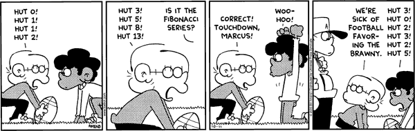

#122331 57 2005-12-12T16:07:29Z Calcy I spent 4 months trying to beat 80-4, but completed Pitcher Plant on my 2nd try.
And I'm still stuck on 29-3, and it's turning me into a murderer...
Chanserv sic! Retrospect, and look at the beginning of the Dragon's Den. See it. Listen, too. See it.
#122333 46 2005-12-12T16:09:35Z Calcy Now it's awesome. We've done nothing for the past 3 days in any class. (Semester exams are coming up)
I've essentially been playing card games all day.
#122895 24 2005-12-14T15:21:10Z Calcy Er... It hasn't. It starts with the two ones. I have no doubt about it. 
By the way... Aren't we going off-topic? 
I always thought it started with 1, but it really does start with 0. (At least mathworld.com says so...)
Check out this FoxTrot comic...

#125235 54 2005-12-20T17:51:41Z Calcy Stupidity of (the) Queen
(don't kill me for that)
NERMS (Navy Emergency Response Management System)
#129255 7 2006-01-02T17:32:59Z Calcy I've completed the first five columns and column 70.
I'm currently stuck on:
55-0
69-3
83-3
98-4
I'm getting closer...
#129256 20 2006-01-02T17:34:53Z Calcy It looks very nice, but I'm not sure if I would go there compared to NUMA.
Great work!
#129258 52 2006-01-02T17:45:41Z Calcy Yeah, but I don't know whether to feel bad for him because he may have problems or to just laugh at him for his stupidity.
Oh, who am I kidding?


#133567 21 2006-01-19T01:37:40Z Calcy 1. All rules may be broken in new rule listings below.
2. This rule may not be broken by any other rules.
3. All rules must contradict at least one other rule from above (after this).
#133570 15 2006-01-19T01:40:54Z Calcy DDAs in general aren't very good anymore. When was the last time all you guys watched a DDA from start to finish and thought it was worth your time?
I agree. I used to love DDAs a lot, but now I don't have much of a liking to them, not only because of gold delay, but the fact that most of them have redundant launchpads that aren't necessary at all.
#133572 50 2006-01-19T01:43:02Z Calcy Edit: I know someone did a bounceblockquadruplejump before. I think it was tktktk or maniac.
I sure hope that was with frame-by-frame. If someone could do that at the normal speed, he must have
amazing reflexes.
#133575 76 2006-01-19T01:47:17Z Calcy Great article. The rocket and gauss entries are very well done. Keep it up!
#136034 11 2006-01-26T05:47:39Z Calcy There is a search engine that always has N as the first result...
Lol. Noogle. Perhaps we should make another version called Noobgle.
*decides to submit post before ranting on some Numa maps*
#142596 17 2006-02-12T15:21:02Z Calcy Way too much for my own good, usually 1-3 hours per day. I remember that I spent 4 hours on the infamous 29-3 (and I still didn't beat it
).
#6819 1 2006-02-12T15:34:40Z Calcy I just thought of an interesting thing. If you were on a map with at least one of each type of enemy, and you (somehow) manage to get hit by each type of enemy in the same frame, which type of enemy would be given the right to kill you?
If anyone is confused I'll try to rephrase it later.
#142647 7 2006-02-12T16:57:20Z Calcy So, yes, only one enemy will end up killing you.
Well, OK, but which one? I wonder whether it is random or dependent on the order they were created.
*goes to test theory*
EDIT: I need to start reading threads from top to bottom. (I didn't see Evil_Bob's post)
#142899 24 2006-02-13T03:07:44Z Calcy Although, of the two ways the ninja dies by, the laser drone is the last to be put down.
But when I switched the locations of the mine and the laser codes (in the map data) it still shows that the laser killed the ninja. Shouldn't your theory make the mine kill it?
#142900 68 2006-02-13T03:09:26Z Calcy Whoa. I think mysterypower's av explains the one that bobodahobo wrote.

#142920 11 2006-02-13T04:35:44Z Calcy 456 TheRaj 2.485
And I got it twice!
#142924 210 2006-02-13T05:12:29Z Calcy When you teach a kid direction using demo code numbers, i.e.
35791394 = right
17895697 = left
79691776 = up
When you watch a skater's speed run and try to calculate the number of frames he took.
#142926 127 2006-02-13T05:15:31Z Calcy Comically Obfuscated Ninja Thwumps Really Old Laser
FDMISAS (Force Development Management Information System Authorization Subsystem)
#143113 14 2006-02-13T19:27:06Z Calcy That was me.
#143240 49 2006-02-13T23:11:39Z Calcy I definitely use the middle three fingers of my left hand, for pressing left shift.
For those who say they use all their fingers, do you mean your thumbs too?
#143248 4 2006-02-13T23:21:54Z Calcy Is this what you mean?
11111111111111111111111111111111111111111111111111111111111111111111111111111111111111111111111111111111111111111111111111111111111111111111111111111111111111111111111111111111111111111111111111111111111111111111111111111111111111111111111111111111111111111111111111111111111111111111111111111111111111111111110111111111111111111111101111111111111111111111011111111111111111111110111111111111111111111101111111111111111111111011111111111111111111110111111111111111111111101111111111111111111111011111111111111111111110111111111111111111111101111111111111111111119061111111111000000000000000000000001111111111807111111111111111111111111111111111111111111110111111111111111111111101111111111111111111111011111111111|5^353.593171676271,302!11^636,300,756,300!3^660,276!3^612,276!3^612,324!3^660,324!9^660,300,0,0,30,9,1,0,0
Demo
176:35791394|35791394|35791394|35791394|35791394|35791394|35791394|35791394|35791394|35791394|140002|0|0|0|17895888|17895697|17895697|17895697|17895697|17895697|17895697|17895697|17895697|17895697|17895697|1
#143261 52 2006-02-13T23:39:29Z Calcy Mines: 3471
Zap Drones: 2590
Rockets: 1685
Self: 1651
I guess I'm not much of a suicide person
#146061 6 2006-02-20T04:46:28Z Calcy I'm second so far! Do I get a prize?
And it definitely deserves at least a 3.5, if not a 4.0, in my opinion.
#146257 48 2006-02-20T19:33:53Z Calcy Perhaps he is jealous of naem's abillities, like most of us are. However, unlike him, all of us are more in awe (in a good way) than in suspicion.
#146892 138 2006-02-22T02:55:06Z Calcy Quote
TheRaj: I proved that 1 = 2.
Someone else: Oh yeah? I proved that your face = 1 = 2.
TheRaj: 
#147242 9 2006-02-22T23:26:00Z Calcy You're doing quite well. I think everyone had the problem of the 80s column being quite short compared to all the others. Keep it up!
Edit: w00t. Just finished ep. 83. 9 episodes left!
#148865 49 2006-02-26T16:01:24Z Calcy I like this idea, in that you essentially have to earn your status. I'm quite far away from that, but I think I'll get there eventually.
@sweep: Nice idea. That'll get people like mysterypower to stop spamming.
#148872 2 2006-02-26T16:32:20Z Calcy Also, I suggest that you attach a text file when posting map code, so that the width of the page doesn't expand by so much.
#149260 41 2006-02-27T15:11:34Z Calcy Could you make one that incorporates a Worms character with our favorite ninja? (Possibilities include the worm aiming a bazooka toward the northeast while the ninja is in a jumping pose.) Could you also put "thecalcgenius" on the bottom-right? See
this page for animations of worms.
By the way, your sigs are awesome. Keep it up.
EDIT: Typos.
EDIT2: Changed my name.
#149268 94 2006-02-27T16:35:13Z Calcy #149575 9 2006-02-28T03:51:51Z Calcy You've inspired me to try this on my TI-89 titanium. I'll see what comes up from my futile efforts tomorrow during school...
#149599 5 2006-02-28T04:46:53Z Calcy If you're doing that level for the first time and are just trying to finish the episode, go right. If you want/need the gold, then you just need to practice getting through those drones. I think the 3rd drone is the hardest because it's easy for the other two drones to get through.
#149617 45 2006-02-28T06:00:50Z Calcy Edited request. (See above.)
#149768 49 2006-02-28T19:02:47Z Calcy Argh! I'm on episode 99 and a level in the 80s column (make a wild guess)
And then I'll be done!
#7133 1 2006-02-28T19:07:20Z Calcy Sometimes when I play a level and die, it will say "You were killed by a [insert enemy here", and on the next line it will say "You were killed by a" (without an enemy name). Any ideas why?
I'll try to find an instance of this, but it seems random to me.
#149928 3 2006-02-28T23:41:43Z Calcy Oh, well that makes sense.
It's still kinda weird though.
#149930 22 2006-02-28T23:44:43Z Calcy Wow. For using Java, that is quite well done. I've been trying to use threads to mimic movement, but the movement is always so choppy, even when I employ double buffering.
#149964 13 2006-03-01T00:15:01Z Calcy i still dont know what we are supposed to do with it to play it  !!!!
!!!!
and if i can get it up easy it will be my savior, my N playing was dwindling off due to lack of being able to beat stuff
Download the text file, and paste its contents into your userlevels.txt file in the N-game folder. Then start up N and go to User Levels.
Anyways, great work guys! I'm on episode 2 now
#150164 19 2006-03-01T06:05:16Z Calcy Have i posted somthing negitive before?
Well, since you asked...
ArrayList<Post> bad = forums.getBadPosts(AV_Ultima);
for(int i = 0; i < bad.size(); i++){
System.out.println(bad.get(i));
}
if(bad.size() > 140)
System.out.println("Bad AV!");
I think that the output window would a'splode.
[j/k]

#150540 8 2006-03-02T01:40:41Z Calcy because this and 88-4 are the two most-asked about rooms in N.
Really? I thought the top two would be 88-4 and 29-3 (bombshelter).
#150556 9 2006-03-02T02:26:01Z Calcy One day two ninjas decided to go out to the shooting range and kill their banana's evil half-brother
#150560 68 2006-03-02T02:32:09Z Calcy hyujf grtj nmkil kvg bfh nbjykimjgbh vfrcdkmjmnk
*The next day at school*
Friend: Why on earth is your forehead very reminiscent of a keyboard?
Me: Uhh....er....*smacks head on keyboard trying to find an answer*
#150631 70 2006-03-02T04:33:14Z Calcy Is your essay about bunnies? Your first word is awfully close to that

#150635 1260 2006-03-02T04:37:48Z Calcy Granted, but your parents and yourself move out to Nebraska the day after Christmas and end up finding the bag of coal labeled "To that one turtle person" on your new porch.
I wish that Luminaflare would stop being psychic. (Look at his sig closely and you'll understand what I mean)
#150827 1263 2006-03-02T19:21:29Z Calcy Granted, but your car would be a Model T and you'd end up sputtering to death within five minutes.
I wish that I was Bill Gates's son.
(Oh, and thanks 9_4_0_0_. I'm honored.)
#150829 15 2006-03-02T19:24:29Z Calcy One day two ninjas decided to go out to the shooting range and kill their banana's evil half-brother who was unicycling over an abyss. Suddenly, 469,000 pubescent gorillas came out
#151034 27 2006-03-03T05:11:40Z Calcy also, stay away from evil threads. reaaaally stay away from them unless you can't find any other solution.
If you don't use threads, what are you using then?
#151284 8 2006-03-03T23:05:08Z Calcy KingAlex: Yes, that's what I mean.
AV_Ultima: I know that, I do it way too often

#151595 62 2006-03-04T19:44:26Z Calcy That's fine, I understand. In that case, could you make one with a color scheme of red and black, with "thecalcgenius" on it? I guess like an evil mysterious theme...
#152332 24 2006-03-06T19:08:58Z Calcy It is a nice idea, but, as many have said, would be quite a burden on M&R to code. However, an alternative to this is to have SSNFHs that would traverse a specific path and repeat this path over and over. This would be possible because the only thing the ninja needs to automatically execute commands is the demo data, which M&R (or us) can easily record.
Edit: It's Monday. Spelling isn't imporatnt.
#152335 8 2006-03-06T19:12:00Z Calcy Um...wow. And then one of the unlockables in the arcade would be....*drum roll*.... N! And the ninja could play N and go to the shop and the player's ninja's ninja could play N and it would go on forever!
Sorry. I had to do that.
#152392 32 2006-03-06T21:50:30Z Calcy The short answer is that i use a single thread that loops with a frequency of 60fps. The game loop consists of 3 steps: update user input (figure out of the user is pressing left, right, where he's aiming and such), update game state (compute the player, bullet and spark positions, do any collision detection stuff) and render the current game state.
That's interesting. I had never thought of doing it that way, but it's so much easier. Anyways, keep this project going, and I'll be checking in periodically.
And thanks for the link. That will really help me.
#154960 7 2006-03-15T15:45:04Z Calcy Ouch! Sorry, TTK. He'll get banned, sooner or later (preferably sooner).
It's amazing what desperate things people will do for attention...
#154961 19 2006-03-15T15:50:08Z Calcy I would name him 'wtf' everytime I played 29-3 (Bombshelter) or 86-4 (Platformula). It made me feel good about myself for some reason...
#154962 20 2006-03-15T15:53:18Z Calcy Nice pose! But why does the ninja not have a left arm (or right arm, from the ninja's perspective)?
#155114 22 2006-03-16T00:58:07Z Calcy Alright, fine. I looked more closely, and I think I see it.
Yeah.
*goes back to 87-4*
#155118 11 2006-03-16T01:01:38Z Calcy That conversation between 9_4_0_0_ and the sniper actually was quite funny, IMO...
#155122 137 2006-03-16T01:16:56Z Calcy Meh. The idea was cooler in my head. Yeah, props to anyone who guesses what song that is. Good song. I can play it.
Ah...The good old Tetris Rave. It brings back so many memories.
I'm assuming you use Finale for music notation, because I "legally" own Finale 05 and recognized it... (notice the quotes)
#155516 3 2006-03-17T19:05:26Z Calcy Did you press the "Import" button? (Not 100% sure if it will work, but it's worth a shot...)
#156171 8 2006-03-20T19:34:46Z Calcy ZZ9: There is.
At least in the version I downloaded...

#156174 4 2006-03-20T19:36:38Z Calcy I was about to do the same thing Solarion did...but I have to say that the rockets made quite an impressive showing.
#156177 4 2006-03-20T19:38:42Z Calcy Must resist....bashing computer....because of jealousy....
*30 minutes later my mom comes upstairs to see a completely disassembled and broken computer*
#158511 43 2006-03-27T18:34:13Z Calcy Well, it's a bit late, and it's essentially been said, but...
If you left this forum, the whole quality of this community would decrease, due to your enormous positive influence over N and NUMA. So you had a "bad" streak. That still doesn't mean that you should quit (not that you are, obviously).
Eh. I don't feel like ranting about it...just don't leave and everyone's happy!
*gets back to bio classwork*
#159053 3 2006-03-28T22:49:53Z Calcy Episode 5 is the hardest? I think I can vouch for almost everyone that episode 88 is the hardest.
And make a wild guess on which level in that episode I'm currently frustrated over...
#159055 36 2006-03-28T22:52:39Z Calcy I'll join. This sounds interesting.
thecalcgenius --> Race
Edit:
It's a shame that nobody has nominated any levels yet. Does anyone know any levels they think would be good for the N-Olympics.
For action, I'd pick
B. L. T., Biggest, Longest, Fastest by Formica (I believe, I'll get a link to it soon). For race, I'd suggest Formica's
The Crazy Miner or almost any of
MARJINENANDRIES's maps.
Edit: I can't seem to locate B.L.T! Did TDL delete it?
#159467 8 2006-03-29T21:44:41Z Calcy Congrats!
I had the same thing happen to me in Remedy (87-3). My only complete run was a 10th in the high scores. I'm also currently on MTI...only 1.2 episodes until I join you.
#159474 7 2006-03-29T21:51:40Z Calcy Good luck on that. I got 121.500 twice just now (19th = 121.825).
Oh, and welcome to the forums!
#159479 12 2006-03-29T21:59:53Z Calcy Mabe someone is knocking all the maps down so that Improbability Drive stays at the top?
Maybe. However, rating
The Improbability Drive a 0.0 will barely affect its rating: at the time of this post, the map averages a 4.5 rating (more or less) with 359 raters. If the 360th rater gave it a 0, the average would only drop to a 4.4875. However,
Micro Cuts (currently 1st in the top rated) would drop from a 4.5 to a 4.05 with one zero vote.
Anyways, just saying that they could be trying to knock every top rated map down, but they just can't do so with
The Improbability Drive.
Edit: And I think that is exactly what happened with
Micro Cuts (4 ninjas with 11 votes).

#159497 14 2006-03-29T22:33:38Z Calcy Er...Asia isn't a country. At least it wasn't the last time I looked up from my computer.
You should change it to India. (Go outsourcers!)
#159498 20 2006-03-29T22:40:26Z Calcy (@ disconinja)
Well, I thought it would do that, but it actually didn't. It took about 15 seconds to parse the userlevels.txt file, but other than that, performance was great.
#159499 3 2006-03-29T22:42:06Z Calcy LOL. At first I thought you were being serious, KA, but then I kept reading.
You...weren't serious...right?
#159564 13 2006-03-30T01:08:15Z Calcy I played 88-4 first. Piece of cake.
#159565 52 2006-03-30T01:11:41Z Calcy You know, I just thought...shouldn't both the three N-Olympics threads be in Contests and Tournaments? Considering that this is a contest....
Edit: There's 3, not 2. My bad.
#159567 4 2006-03-30T01:19:34Z Calcy Yeah, it seems (to my unworthy eyes, compared to M&R) that it would be easy to show. Since numbers are used to correspond to keypresses, perhaps we could signal -1 to be the suicide command.
Ex:
50:35791394|35791394|243|0|0|-1
would make the ninja move a ways to the right, stop, and kill himself.
#159687 7 2006-03-30T05:06:50Z Calcy Our hero loves beer!
Mmmm...beer...
#159689 5 2006-03-30T05:10:29Z Calcy Except about the hailing blue: he's a great guy.
So wouldn't that make you approximately 68.18% not serious?
#7747 1 2006-03-30T05:33:21Z Calcy I was trying to get a high score on 58-0 (hooligan status), and, during one of my trials, the left gauss was following me (normal), locked onto its target pixel (normal), but, instead of firing in a line between the target and itself, it shot the dark-red line I drew in the attached picture. It only did it that one time during that trial.
I could not save the demo without hacking the .sol, and I cannot recreate it. Has anyone seen this before? I hadn't.
Edit: I RECREATED IT! I have no idea how I did, but I was smart this time and took a picture of the instant replay. The blue circle is around the target that the gauss was supposed to it, while the red circle is around the point of land where the gauss hit instead.
Attachment (lost): post-3-1143771787.jpg
#159692 2 2006-03-30T05:44:57Z Calcy The way I would do it:
1) Get the middle left switch.
2) Get the switch that is closest to where the rightmost drone starts.
3) Get back up, jump as if you were going to get the exit switch, but get the door switch and jump to the top of the octagon. The rocket should explode on the octagon, and not you.
4) Go back down and jump from the 45 angle to get the exit switch, avoid the rocket, and jump down to the exit.
If you need a picture, I'll post one.
#160005 7 2006-03-31T01:51:55Z Calcy Heh, thanks. My work here is done.
*zooms off into space*
#160020 6 2006-03-31T02:08:47Z Calcy Sorry, Wedgie. I didn't even think about it looking like a laser drone. I will fix it shortly.
Edit: Since I managed to recreate it (see 1st post), I've attached a more clearer picture above.
#160259 9 2006-03-31T19:11:54Z Calcy Woot! I found a new bug!
I'm 80% sure that it had not. When I played it yesterday and managed to recreate it, I couldn't achieve my high score run again. The gauss was all over me.
That's the only level I've seen it on, too.
Anyways, I'm at school right now, but when I get home, I'll try to recreate it again, and I'll get back to you on what happened.
#160333 11 2006-03-31T23:23:31Z Calcy Alright, guys...calm down. It's my fault, no need to pin it on anyone else...
#7777 1 2006-03-31T23:47:09Z Calcy The origin of this suggestion is
here. I think it would be nice to have a way to copy demo data of the instant replay during the actual game (in that case, it was 58-0). If this were possible, I would have been able to upload a demo of the bug that I found. Comments?
#160344 4 2006-04-01T00:10:13Z Calcy I'm in exactly the same boat, Adam77. Just 88-4 and 89 left until I beat the game.
#160721 14 2006-04-02T02:01:03Z Calcy Jeca: the bug I found is different from what your description is. This isn't a result of an NaN. It just...happened. As Raigan said, it could have been something to do with the position of the target, but it has nothing to do with NaN's. Notice in the picture that I uploaded that I'm not killed when the gauss shoots.
Edit: (added more description)
#160803 16 2006-04-02T05:14:17Z Calcy If this isn't a joke, then we all thank you for your honesty.
If it isn't, well...something bad will happen.
#160952 9 2006-04-02T14:04:33Z Calcy Yeah, that's happened many a time to me, especially on 85-3 (dodging bullets). I can live with it.
[off-topic] Raigan has 100 posts! A milestone!
[/off-topic]
#161020 6 2006-04-02T17:19:58Z Calcy That makes sense, BT. I can see your reasoning...somewhat.
And now we have to add Sendy to that list.
#161163 33 2006-04-02T22:36:24Z Calcy emo_tetris? That scares me.
After emo's post, it feels like a trick to me.
#161812 6 2006-04-04T16:45:55Z Calcy ZZ9: In the main game / highscores.
Mascote_ponto: I was thinking that the game could distinguish between replays and actual demo-making to prevent that from happening. That's just my opinion...
#161845 8 2006-04-04T18:30:24Z Calcy TS definitely summed up my thoughts. MTI was (and is still) definitely harder than apoplexy.
Jeca: Well...I managed to beat Sibilant S on my fourth or fifth try, so I thought it was (relatively) easy.
#161847 8 2006-04-04T18:38:27Z Calcy Nice find, ZZ9. Yeah, I figured that it was, but I didn't want to delve too far to figure it out. I had looked in the .sol once when I was reporting the gauss glitch (see above) but all I found was gobbledygook.
#161962 2 2006-04-05T01:15:27Z Calcy The N Episode Help Site used to be active, but I believe it was shut down due to lack of time. Ask Maniac (I think it was Maniac) about it.
#162560 5 2006-04-06T18:03:00Z Calcy That's pretty cool. I've seen that before, but I just reset the level if that happens.
#162566 3 2006-04-06T18:10:15Z Calcy Nice one, Keron.
A moving mine is essentially a non-seeking zap drone, so doing that would be quite redundant.
#162568 14 2006-04-06T18:12:09Z Calcy I think my computer is too fast to notice the difference between playing with and without Winamp.
*waits expectantly for his new 2.2 ghz turion 64 laptop*
#162570 107 2006-04-06T18:17:10Z Calcy I think Aries is gone. His last post was on the 17th of February. I'd help, but I don't know if he's coming back or not.
/me pm's maniac
#162574 2 2006-04-06T18:24:43Z Calcy Huh?
Did you download N from Metanet's website?
It could be that you set MS Word to open all zip files. Go to Control Panel --> Folder Options --> File Types, and set the .zip to WinZip or some program like that. Once you open the zip file, there should be an "N_v14.exe" file in your folder, and that is what you should run.
#162578 2 2006-04-06T18:25:50Z Calcy Could you give the episode-level number? I never memorized all the names of the levels
#162928 4 2006-04-07T22:28:52Z Calcy That sucks. But as Sketch said, there's really nothing you can do about it. Just wait for Arachnid to implement a way to turn off ratings.
#162929 5 2006-04-07T22:31:22Z Calcy It's possible, but I think Ngaged's way is (a bit) easier, taking into account my relatively slow reflexes.
#163021 7 2006-04-08T04:19:30Z Calcy I don't think so. N runs fine on Flash Player 7 on my computer, even though I have downloaded Flash 8.
Edit: Well you just echoed my thoughts.

#163024 21 2006-04-08T04:27:03Z Calcy I commend you Bigblargh. I was cracking up for at least a minute.
Anyways, I propose that we make a new group called "Idiotic Idiots" and place all of the people like Shadowbane on it.
On a more serious note, I think someone should lock this thread.
#163675 76 2006-04-10T17:59:34Z Calcy smartalco: he said he'd be on vacation.
axonn: Don't sign up this month, but practice the maps that are selected for the N-Olympics, and when you feel that you have a chance, sign up for another month.
#164829 51 2006-04-14T21:25:42Z Calcy My deaths, in order:
Mines: 6474
Self: 4335
Zap Drones: 4335 <-- ZOMG, tied with self-deaths
Rockets: 2613
Gausses: 2047
Thwumps: 1426
Floorguards: 1192
Lasers: 1093
Chainguns: 590
TOTAL: 24105
Impressive stats, spect and JF! Shows how awesome you both are
#164832 11 2006-04-14T21:50:58Z Calcy Ngaged: Chaingubs?

Anyways, these top runs are amazing. I'm trying to bridge the ten second gap between my 10th place and SuperGeko's 8th place, but I haven't gotten a completion today...

#164833 53 2006-04-14T21:55:15Z Calcy Hey, I was giving a compliment
Anyways, you may be a "tired highscorer", but it shows that you've worked incredibly hard to get all these high scores, which I like. I (slightly) bow down to you....and JF, and Melchoir, trib4l, clux, Toad...anyone I'm missing?
#164947 5 2006-04-15T05:14:23Z Calcy Go to the website of the company that makes your video card. Their site will always have a section for drivers.
But I don't understand why the 3D driver is required for NUMA, a website...are you talking about N, as in the game, or NUMA?
#164949 340 2006-04-15T05:23:43Z Calcy 9-2:
(1) Get the door switch on top of the middle diamond first by jumping over the diagional left launchpad and launching off the next launchpad (pointed straight up). Be sure to dodge the rocket.
(2) Then climb (using the walls) next to the diagonally right launchpad at the middle-left. Make sure you're on the top side of the pad, and run right into it.
(3) You should be heading straight for the side of the bounceblock. When you reach it, jump so you land on top of it, and you should have enough momentum for the rocket to pass over you. As it does, jump left to get the second door switch.
(4) Then go back down toward the lower-left room. Once you enter, jump all the way to the left so you're right next to the wall, and right when you touch the ground, jump so the puppy doesn't shock you
.
(5) To get to the exit, get out of the room the same way you came in, run all the way to the right, jumping over all the launchpads, and walljump twice (the gauss should end up firing right next to you as you hug the wall), and jump left to freedom.
See attached image.
27-3:
Whenever you're on a circle, be sure you're on the part that's closest in the direction you're going. (i.e. if you're going right, you want to land on the top-left of the circle).
@juneboy: 21-2 is called "greedo". I'm not sure which level you want.
Fun! I hope the image isn't too confusing...it's 12:30 AM...
Attachment (lost): post-11-1145079375.jpg
#164953 7 2006-04-15T05:43:07Z Calcy That's incredibly weird. What processor are you running? Mine's a 3.0ghz P4, and N only uses an average of 15% of the CPU. Yours must be using 100% I guess...
#164954 5 2006-04-15T05:46:38Z Calcy Very cool...Although sometimes one would wish against publicity
(specifically speaking to the idiot n00bs)
#164957 6 2006-04-15T05:54:00Z Calcy Everyone is fine with the simplicity of N as it stands now, and none of you are accepting of new suggestions.
Yes, many people (myself included) are satisfied with the simplicity and the minimalistic working of N. However, all of us are open to new suggestions
if they effect the gameplay minimally or are internal fixings. Most of the suggestions that are suggested here are mainly new enemies, or the addition of things that will make the game more complex. N, although a minimalist game, is complex enough as it is.
My 50-something words.
Ooh...and my 100th post!
")
#165098 10 2006-04-15T16:58:12Z Calcy Very nice, cheese_god! Hopefully the first of many to come. Nice run too.
#165177 10 2006-04-15T21:52:07Z Calcy I have Firefox, Windows Media Player, Visualboyadvance, (a GBA emulator) and N open, and I'm only using up about 25%.  And this computer isn't that advanced; it only has a 2 GHZ 3500+ AMD Sempron Processor and 512 RAM.
And this computer isn't that advanced; it only has a 2 GHZ 3500+ AMD Sempron Processor and 512 RAM.
Lol, I was asking Sendy, but that works too
.
[off-topic]Where do you get ROMs for Visualboyadvance?[/off-topic]
#165182 342 2006-04-15T21:57:23Z Calcy On 9-2 I found it easier to just jump like hell up the right column, run across the top and drop down.
right before you hit the floor, slide on the wall (this can take some timing), then jump up the column to the oneway wall.
Run through there and bounce up to the door.
(shoot me down if you like )
Jumping up the right column? How do you manage to avoid the gauss? The only way I found to avoid it was to jump left to the exit and then jump back, which takes longer than my way.
I'm not saying that your way is wrong, but I can't do it well
")
.
#165206 344 2006-04-15T23:54:55Z Calcy No problem.
21-4:
(1) Jump left onto the second group of oneways + gold on the lower level. Immediately jump to the wall. The left laser should have activated. While it's firing, walljump up toward the bigger one-way floor, and, after the laser stops, jump right to that "floor". Run all the way to the right, and take a leap of faith and jump to touch the exit switch.
(2) Land on the other bigger one-way "floor", and drop down to the floor with two one-ways just below. Then, simply run left, and you should land on the exit floor.
Attachment (lost): post-11-1145145295.jpg
#165437 37 2006-04-16T16:44:44Z Calcy Very nice, kryx! That's a very impressive run on 2-4.
#165439 5 2006-04-16T16:47:26Z Calcy
Wow, what a post. At least you said it was a joke. I don't know what I would have thought if you had been serious...
#8101 1 2006-04-16T18:50:51Z Calcy Alright, my story of 42-3:
Thursday: I viewed the former 19th place's demo, saw that I could easily top that, and went about making my route. Submitted and got a 10th place.
Friday: I viewed my demo, saw that it was horrible, and improved my route again. Submitted to a 5th place.
Saturday: Used JF's thwump squeeze to achieve a 2nd.
Half of Saturday & Today: Experimented with faster routes, giving me about 800+ self-kills from Thursday
Now:
ZOMG, I beat JF. I'm elated.

I liked the route I took, especially the beginning.
naem, I'll be back. Just wait.
Edit: I am now only 9 frames behind naem, with a .225 gap.
Edit: Changed description to show current standings.
#165467 4 2006-04-16T19:24:10Z Calcy lol, thanks, wedgie & ZZ9. It very well could happen, but it won't today.
#165487 6 2006-04-16T20:00:46Z Calcy I'm pretty bad at remembering level numbers, but that one sounded familiar to me. I knew this was a hard level. Your demo is really nice (and I don't say that often). If you polish up your end, it will be a 0th, without a doubt.
And by the way: I hate that level....
Thanks. I especially appreciate that coming from a good highscorer.
About the end: I seem to have very bad reflexes there, and I have only managed to do the end fairly well once. I will try to improve it tomorrow.
#165493 3 2006-04-16T20:17:35Z Calcy I'm assuming he means that whoever has the fastest time allowing for the two seconds / gold.
Which, in this time trial, will probably end up being fastest all-gold
#165620 11 2006-04-17T02:11:08Z Calcy Mysterypower: name naem is
not a cheater. He is a genuine, bonafide N player...and a hell of an N player at that. naem, I bow my triangular head at you.
And me, #1? Pfft, I wish. I might as well
freakykiwi: Thanks! Still trying for that 0th.
L3X: Yeah, I still need to work on that ending...
And about that sig image...

Just kidding.
Edit: L3X, after looking at your sig again, I've come to the conclusion that you're actually in 1st place (not 0th) since three people have tied for 0th. (The real way of calculating ties is taking the average of the people's spaces, meaning all of you have a 1st place)
So HAH!
Edit Sorry, cheesegod. You're at 19th now.
#165622 21 2006-04-17T02:26:37Z Calcy What a kill count! I think you'd do well in the one-life challenge.
Congrats!
#165791 16 2006-04-17T16:44:15Z Calcy Sweep, I understand that, but like crappitrash said, I want others to challenge me. You don't get better by getting a high score and leaving it forever.
zapkt: Thanks. Just keep trying
Edit: Only 9 frames away from beating naem! 184.725
#165880 6 2006-04-17T20:36:27Z Calcy Does coding a DDA count?
I honestly think that one would be better off actually playing a level than actually hard coding it. It would take way too long to find the right number per frame.
#166167 4 2006-04-18T14:10:17Z Calcy Very nice run. I'll accept your challenge....later.
#166169 662 2006-04-18T14:19:54Z Calcy If I hadn't been spending so much time on 42-3 trying to beat naem, I'm sure I'd have at least 70 top 20s. I'm currently at 18
#166203 19 2006-04-18T18:00:55Z Calcy Thanks. Just keep trying!
BTW, the answer is 3. I actually had to think about it too.
#166345 12 2006-04-18T23:45:30Z Calcy *reads the linked thread and the two linked maps*
Wow. That is incredibly foul language. Arachnid will solve the problem, don't worry about that.
abcdman2 (and cheesegod): Honestly, sniping is, unfortunately, now a routine part of the NUMA community. That's why we use bNUMA to indirectly counteract these snipes.
The moral of the story is: make good maps, get them onto bNUMA, and completely ignore idiots like element113.
(I don't care if he sees this...I haven't submitted any maps!
)
#166481 7 2006-04-19T05:18:58Z Calcy Cheesegod, use jg9000's program
NHigh to find all your high scores. It helps a lot.
#166634 22 2006-04-19T14:37:31Z Calcy Cerebrus: I'm getting closer every day. Literally. I know of a way to get 185, but I keep screwing up at the end.
krusch: Well said.
#166638 6 2006-04-19T15:01:27Z Calcy I like this idea. It has the best of both "worlds": you can finish an episode normally until you get stuck, in which you can then move forward. Nice.
#166639 3 2006-04-19T15:05:14Z Calcy Er...are you going to modify N's sol? (lol, that sounded incredibly funny when I typed that) IMO, that's a pretty stupid thing to do, because it takes all the fun out of the game itself. If not...well...I still can't help you.
#166642 2 2006-04-19T15:08:22Z Calcy Posting images: Click the [IMG] button and follow the instructions.
An avatar is a small picture (usually 100x100) that essentially is used to symbolize yourself. You can find pictures everywhere on the Internet, try Google Images for a start.
#166643 9 2006-04-19T15:11:14Z Calcy Maniac, LOL.
jedicommando: Practice makes perfect. For you, a hell of a lot of practice makes mediocrity. But it's still a start
#166739 5 2006-04-19T20:36:15Z Calcy Snagged a 6th on my third try. Nice run.
#166851 6 2006-04-19T23:53:21Z Calcy Couple of questions:
Where will you actually start counting frames as part of your total score? I'd suggest you start the frame count right as the ninja enters the actual survival phase (right after the huge line of gold).
How do you define a level? Is a level dependent on the number of enemies you have? (max. 4 entries) Or is it dependent on the set of enemies you have? (max. 15 entries, for the 15 different possible combinations of enemies)?
I'll most likely enter, I just want answers to the above before I do so.
By the way, shouldn't this be in Contests & Tournaments?
#166875 9 2006-04-20T00:37:44Z Calcy *goes to check*
D'OH. You're right. My bad.
#167257 10 2006-04-20T21:51:50Z Calcy I'll count frames from the start to when they start the huge line of gold, then subtract that from the main frame count (the one at the beginnig of the demo data).
I think you misunderstood the second part. It is out of four enemies. So if you released the gausses, the rockets, the chainguns, and the lasers, your score (say of 200 frames) would be multiplied by 4, giving a total of 800. Similarly, If you only picked gausses and lasers, for example, your score would only be multiplied by 2, giving a total of 400. Thus, the bigger risk you take, the more points you get (effectively).
I didn't really know which forum it should be in. Mods feel free to move it.
Cool.
(second question) For example, supposed I made a demo with rockets and gausses only, and then another demo with lasers and chainguns only. Would I be able to submit both of them (since they're technically different difficulties) or are they of the same level because each demo consists of two enemies?
I hope that made sense. Anyways, sign me up! It's a very good contest, IMO.
#167271 68 2006-04-20T22:08:47Z Calcy Shift. It's the perfect size, and you don't really run the risk of hitting other keys. I place my 2nd-4th fingers on shift and my thumb on space, which works well when playing the game.
#167272 14 2006-04-20T22:12:29Z Calcy Greenpencil: That would definitely be a one-sided poll.
This guy is just as bad as holdeddie, it seems.
#167273 11 2006-04-20T22:15:39Z Calcy Ouch, Barabajagal!
Perhaps Kablizzy needs to make a filter that would delete any thread made that contains any form of the word "sniping". That should work.
#167387 7 2006-04-21T02:39:35Z Calcy Jeca, he probably wrote something related to the topic, re-read someone else's post, and realized that his post was inherently useless. We all do that at times.
[on-topic] Yeah, that gets on my nerves a lot, especially on puzzles that have that "problem".
#167389 13 2006-04-21T02:47:40Z Calcy I was being semi-sarcastic, barabajagal.
*reads former post*
Well, I guess it isn't evident at first glance.
#167390 44 2006-04-21T02:50:26Z Calcy 53-0
Wow. Impressive. I watched that about five times because I couldn't believe that run. Excellent work!
#167499 16 2006-04-21T14:56:49Z Calcy Would that (on a map with a lot of ratings) cause a massive loading time?
It's highly unlikely, since you only have to do 11 calculations (one for each possible rating) and then just make the top number the biggest amount, and adjust the other ones accordingly. 11 calculations is nothing on a computer (unless you're using a TI calculator or something).
D'OH. Wasn't logged in.
#167968 24 2006-04-23T01:51:54Z Calcy Sure thing.
8 days ago:
24105
Today, after most of my work on 43-2, episode 43, four other high score levels, and a failed high score attempt at 97-0: 29157.
Wow, I died 5052 times in eight days. Wow.

Attachment (lost): post-15-1145757114.jpg
#167971 2 2006-04-23T01:54:37Z Calcy Why do you want to download version 1.4a? Version 1.4 has been out for quite a while.
Here's the link.
I'm not sure if M&R still have links to older versions of N.
#167974 39 2006-04-23T02:00:05Z Calcy 98. Not surprisingly, I'm currently stuck at MTI. (can't wait for Mount Doom, too)
#167975 84 2006-04-23T02:02:00Z Calcy *bump*
Anyone seen madnick around? He said on the 1st he'd be gone for 15 days, and it's been 22... :\
#168004 3 2006-04-23T04:45:24Z Calcy Alas, another incredible N player and mapmaker falls victim to the parent syndrome. (Nothing against your parents though
)
Good luck with life. And homework. Come back as soon as you possibly can.
#168139 30 2006-04-23T14:29:27Z Calcy Wha...?
NOOOO!!!
Actually, when I logged in and saw that you had posted in this thread, I felt a sense of dread that you probably had stole the 0th spot.
And I was right.
Nice run! I feel special now (it's my route).
crappitrash: It's not? It seriously felt like it. (And I'm really not that good, compared to many others, like Mr. 0th-stealer here)
#168155 12 2006-04-23T15:22:50Z Calcy Submitted a demo.
#168269 40 2006-04-23T20:30:14Z Calcy Wow. Impressive. Incredible run. You're my new hero.
I'll quit 42-3 for now. I may come back to it in a couple of weeks...can't seem to get above 184.5 today.
#168278 8 2006-04-23T20:50:31Z Calcy See ya. Take care.
#168402 10 2006-04-25T23:41:36Z Calcy Those are good suggestions. Unfortunately, most people who want to play N will be very eager to play it, and therefore will not read the manual at all, even if it's in the game.
Heh...I was one of those n00bs
Anyways, this is a great suggestion, and it shouldn't take up a whole lot of memory to accomplish.
#8282 1 2006-04-25T23:47:28Z Calcy As I was going for some highscores, I got to thinking that it would be neat to have a second set of highscores where only the time you took to beat a level mattered. In other words, gold would not affect your time. This would allow some of the people who are good but aren't gods (kryx, naem, JF, spect, trib4l, for starters) to have a chance to show their skills. You would only be allowed on one or the other per level.
What do you guys think? It may end up working only for levels, not episodes, because I think that some of the episodes can't be completed without picking up some gold.
EDIT: You'd get two sets of scores in the highscores menu, but for episodes, obviously, your one with gold would be the one that would be used during the actual game.
EDIT: Dangit. Cheese_god beat me to it.
Long ago.#168415 4 2006-04-26T00:01:46Z Calcy My only piece of advice I can give is to jump every time you have a slope that curves up so that you will gain some advantage there. Other than that, wedgie pretty much summed it up.
#168419 2 2006-04-26T00:04:09Z Calcy There really isn't an easy way to getting all the switches, but it's good to go in one general direction so you don't have to come back for any forgotten switches. Practice does good too.
#168422 10 2006-04-26T00:07:58Z Calcy Yay! 1 point to me.
#168492 6 2006-04-26T02:27:35Z Calcy http://numa.notdot.net/map/39745
Obviously, Mare and Raigan will choose ones they consider appropriate.
Now tell me how those two go together.
#168503 13 2006-04-26T02:48:37Z Calcy It's from the emails Keron got from a wannabe hacker:
Clicky#169064 59 2006-04-28T00:24:25Z Calcy Impressive! I thought 5052 kills in 8 days was incredible enough, but this just beats it out of the water.
#169069 44 2006-04-28T00:53:09Z Calcy O_o
186?
I'm going to cry. Very nice run. I salute you, Wolfos. *salute*
Wedgie: Well, I saw that it was easy to get a highscore, then I looked at JF's and zapkt's (former) 1st and 2nd runs, and realized that I could easily beat them. So I have an excuse...
#169330 20 2006-04-28T23:22:04Z Calcy Ooh, lots of replies.
Jeca: They use your frame count and the number of gold you picked up in your run to determine the time:
Let t = your final time, f = frame count, g = number of gold you picked up
t = 90.000 - f * .025 + 2.000 * g
This idea eliminates the need for a "time", and ignores gold. The easiest way to do this is to use the frame count.
#169335 5 2006-04-28T23:34:47Z Calcy I think it's a complete waste of a highscore spot. Instead of showing off your skills in the form of a spot on the leader board, you instead draw attention to the person you're criticizing, actually making them seem better.
In other words, it's stupid, and those people who did these are genuine idiots.
#169338 8 2006-04-28T23:40:24Z Calcy Part of N being fun is the frustration. If you could beat a game 100% in 20 minutes, would there be any replay value in it? Usually not. With N, you've got a variety of levels, ranging from super easy to MTI-like. It's this, plus NUMA, which makes N fun.
#169526 7 2006-04-29T15:23:55Z Calcy Congrats! I'm at 30.

#169528 11 2006-04-29T15:25:59Z Calcy Tsk, tsk, tsk, sammage and crappitrash. Go to your rooms and stay there. You're grounded from N...for the next minute.
#169667 13 2006-04-29T23:07:37Z Calcy What are you sorry about, Chris_Hisper?
12-4: That is absolutely crazy. Whoever did that took five spots away that others could have had. Geez.
#169668 21 2006-04-29T23:10:53Z Calcy Ooh...very nice run, trib4l. I had that same route but without the corner jumps. I'll see if I can hit those now.
#169712 2 2006-04-30T02:29:16Z Calcy At first glance, I would have said it was the keyboard, but then I read that you changed the keyboard layout to US. Are you sure that you're matching up the correct keys on the keyboard while in US mode? ( '[' is third from left on second row, ']' is to the immediate right). Just throwing out possible things.
#169714 4 2006-04-30T02:35:46Z Calcy I'm sorry to revive this from the grave, but I just had to show this demo:
116:0|0|0|544|0|139776|0|0|0|0|0|0|0|0|71582912|71582788|17476
#169716 355 2006-04-30T02:45:30Z Calcy For 85-3: Dodging Bullets, the only thing I can say is just to find cover. Lots of it. The fact that there are so many chainguns makes it almost impossible to predict when they'll start to fire. Take it slow, and when you hear the powering up of a chaingun, run for cover.
And get the gold. Gold is good.
#8357 1 2006-04-30T04:03:01Z Calcy On playing Formica's map,
Really pretty quite sorta fast, I had been attempting to complete it without pressing the jump key, and when I got to the part right near the end (after the shaft where the launchpad sends you up) I was heading at a 30 angle below the horizontal toward the wall. However, when I hit the wall, I ended up being flung vertically down for no apparent reason. Any thoughts? (My demo is the currently the first one you see on the page with 412 frames.)
Mods, feel free to use your Moderator Superiority Rights to move this if necessary. I put this in the General Community since most members browse this section and I wanted input.
#169749 11 2006-04-30T04:21:12Z Calcy The ninja is really a girl and speciifcally asked M&R to create at least something with a girl color in the game.
#169951 6 2006-04-30T17:03:52Z Calcy Impressive find, maestro. This is definitely the best and easiest way to get rid of the illegal games.
Nice find!
#169956 5 2006-04-30T17:26:36Z Calcy I believe 29-1 and 29-3 have been walkthroughed
here. 29-2 and 29-4 are much easier compared to those two.
#169959 2 2006-04-30T17:31:26Z Calcy
I can't seem to pull that off! I keep dying whenever I reach the alcove. I think I may be jumping from a higher area. *goes off to try*
#170135 7 2006-04-30T23:06:04Z Calcy apparently it was element113
check this out:
http://numa.notdot.net/map/38753
Ya know, I really don't believe that. Element113 had terrible grammer and used a cuss word every other word, but this guy managed to live without using even one.
#170166 17 2006-05-01T00:02:06Z Calcy Wolfos totally pwned you guys on 42-3.
Sorry, it seems to be the point of your existance...
Oh, lol. After he got the 0th, I gave up on that level.
#170178 10 2006-05-01T00:20:38Z Calcy Nice level for the NTTS. I'm at 124 and still getting better.
#170190 12 2006-05-01T00:43:32Z Calcy Continuing from -st-'s statement, I suggest to use 00-0 as your main practice level until you can get a decent time on it. To get a good time (a close-to-highscore time) you have to learn a few tricks that will help you in many other levels to come.
#170199 10 2006-05-01T00:57:45Z Calcy SW, I know this was directed at wedgie but I just want to say that you put more work into one of your drawings than I'd do for about three.
And they are legible. Totally. They're just a bit confusing at first glance, but that's a minor problem.
#170230 7 2006-05-01T01:31:31Z Calcy Ya know...I think I could actually win this!
*goes and parties around the house*
I'm in.
Edit: Clovic, don't you mean Ventrilo (with only one 'L')?
#170258 13 2006-05-01T02:11:20Z Calcy I understood it.
Perhaps it should be reworded: "Invert a MetaNet level and post it onto NUMA."
#170262 12 2006-05-01T02:12:45Z Calcy Will using a MIDI as a karaoke count against us? I'm too cheap to go and buy karaokes, and I'm 100% against LimeWire.
#170263 7 2006-05-01T02:15:59Z Calcy chris: Good luck...I'm taking Cal BC wednesday, enlgish lit thursday, and gov't next week.
L3X: Bah. I got a high score on it. I'm through.
#8389 1 2006-05-01T02:25:30Z Calcy Alright. I have 18 school days left until I am over with high school for the rest of my life. If I was a good kid, I'd be working hard in whatever I have to do until the last day.
However, I'm not.
I have had senioritis (the condition of knowing that you're going to graduate soon and, because of that, you slack off on pretty much everything) since last October, and I can feel my need to perform well slipping away. I may be valedictorian of my class (w00t) but I have never been this bad at doing homework and studying for tests. This could be due to the fact that I only "work" in 2 (English 4, Bio 2) of my 7 classes: the other 5 are either incredibly easy (Cal BC & Music Theory) or don't require any thought at all (Eco, Orchestra, Comp Sci 3).
This could also be due to the help of eBaum and his evil ways that brought me to this incredible game.
So...I could have written a page of my research paper in the time that I wrote this little discourse, but... oh well.
Has anyone else experienced senioritis this year or in years past?
#170290 5 2006-05-01T03:30:24Z Calcy And ive had Senioritis since i was 5
At this rate, you'd probably be playing N for way too many hours per day
#170608 10 2006-05-01T20:53:25Z Calcy Suki: I'm going to Rice University in Houston. I wanted to go to Mathletics, but my parents and I went to India during that time. I have never studied for a math or physics test in high school or before...it comes naturally to me, so I know that I'll make a 5 on my AP in two days.

MCP3000: It's worse. Much worse. You have no idea.
Mark: Agreed. I have a paper due tomorrow in English, and even though I should be doing it right now, I'm on the Metanet forums...
GAAHHH!
Alright...I'm going to close Firefox, and finish my paper (hopefully) in the next couple of hours. Wish me luck.
#170649 3 2006-05-01T21:52:57Z Calcy I know I was going too fast, but when I died, I should have actually "splatted" on the wall with low vertical velocity which would increase by gravity. However, instead of gradually falling down faster (like it usually does) the ninja shot straight down without any outside influence, and that's what I can't explain.
#170652 26 2006-05-01T21:55:21Z Calcy Umm..yeah...themes?
Okay, count me out. I thought it was just a come in and do your thing kind of contest.
I thought so too. But I'll stay in long enough to see if I can do the first "theme".
#170656 47 2006-05-01T21:59:14Z Calcy I have beaten all of them and I agree with Wedgie!
BAH! I have more highscores than you. Anyone with less highscores than me is inferior.
#170671 23 2006-05-01T22:16:09Z Calcy Not really. If you had the right tools, you could actually play it in essentially fbf. While it would take longer, it wouldn't take more than five minutes to beat a level (except for maybe 86-4: Platformula (I got a highscore today on that one
)).
t'd be laggy only because you'd be running N at a slower frame rate, < 40 frames per second.
#170681 19 2006-05-01T22:29:03Z Calcy Sorry about your shingles, Raigan. I hope you're better now.
As BB said, take your time. I want everything to be perfect in TNG, or else...er...My head will asplode!
Have fun programming to make us happy!
I don't know why, but I have the feeling that it will have something to do with this guy...
Guy?
#8408 1 2006-05-01T22:34:05Z Calcy I got this idea from seeing someone accidentally click the reply button instead of the edit button of his post and accidentally double-posted in the topic. vBulletin has a feature where if someone accidentally or purposely makes a second consecutive post (teh double-posting syndrome), it will take the contents of the second post and add it to the first post, thereby saving space with only one post of the user instead of two. Can IPB do this?
#170689 14 2006-05-01T22:36:58Z Calcy ^ Banned for putting the caret marks ('^') after his statement instead of before.
#170694 343 2006-05-01T22:40:08Z Calcy Happy birthday to MegaGeo, the true creator (in my opinion) of the concept of N3D! If you haven't seen the pictures he has made, you have to. They are impressive.
Congrats!
#170961 46 2006-05-02T16:26:15Z Calcy Lol, yeah. I figured since I had developed my own route it wouldn't hurt to see if there were any other tricks I could pull, and there's no easier way to do that than to look at the other top scorers.
#170963 13 2006-05-02T16:27:49Z Calcy I wouldn't call it a glitch...I think that since you got that far they might as well give it to you, but that's my thoughts.
And, to answer your question: no.
#171283 14 2006-05-03T04:22:35Z Calcy Update: 36! Ha.
Trogdor: It hasn't expired in my utopian world...

#8447 1 2006-05-03T18:29:36Z Calcy To recreate (it may not happen to you guys, which would be a good thing):
- Open Firefox
- Open N
- Go to a site that usually takes a relatively long time to load
- As the page is loading, immediately load a level in N and start playing.
When I do this, N lags horribly. I'm running a 3.0ghz P4, and using Firefox 1.5.0.2. Any ideas on why this happens to me? I have ideas, but they're pretty unsensical.
#171466 10 2006-05-03T18:32:16Z Calcy Very nice idea for a contest. It seems to be an original idea. If you want, I can be a judge.
Wh00t. 200 posts! (Thanks, ZZ9.
)
#171652 14 2006-05-03T23:03:35Z Calcy Mr_Mongoose: Awesome.
ZZ9: Wow...I completely overlooked that. I haven't been paying attention to my post count the past couple of weeks...
Edit: Mr_Mongoose: I believe that doors of all types should be included (see cheese_god's map) since they aren't actual enemies. If you already had been thinking this, you should probably add it to the list of acceptable items. (just a thought)
#171657 16 2006-05-03T23:14:47Z Calcy but the calc is perfect, all he does is play maps and he knows what to look for.
That statement was like a mixed compliment. It sounded like you were dissing me (I know you didn't mean to) when you said "all he does is play maps".
[separate conversation] By the way, ZZ9, a belated congrats to you on becoming a MetaNember.
#171659 3 2006-05-03T23:17:09Z Calcy I'm reasonably fluent in VB and Java, if that's any help. And I'll only be able to help in the summer.
Anyways, if I'm going to start building something, I need to know more details, so...more details would be nice.
#171663 4 2006-05-03T23:19:03Z Calcy Wow, I'm an idiot. I've browsed through that topic a couple of times and didn't remember it at all. Thanks, ZZ9.
*perhaps a lock?*
#171672 357 2006-05-03T23:29:06Z Calcy Since many people were commenting on episode 96, I just had to add my times on episode 96 the first time I had played the game. I had only 0.4 seconds left after beating 96-4.
Attachment (lost): post-11-1146698946.jpg
#171686 89 2006-05-03T23:47:27Z Calcy ^ Banned for using 1337sp34k in his sig.
#171738 6 2006-05-04T01:25:39Z Calcy 512 MB of ram, but that should be enough to run it.
But LoD's N starter fixed it. It seems that setting N to low priority does wonders on the computer in general.
#171740 360 2006-05-04T01:27:29Z Calcy Elaxion: I emphatically agree with you, but that was back when I was a n00b and just wanted to complete it. In those runs I barely got any gold unless it was literally right next to me.
I'm sure I'd do much, much better if I tried again. But...I've gots AP exams tomorrow
#8466 1 2006-05-04T02:40:38Z Calcy Two suggestions:
1) When viewing the highscore demo data for the level, it'd be nice to see the name of the person that did the level right next to the level name...for example, if I played my 2nd highscore on 42-3, the bottom-right text could show:
Episode 42 Level 3: ctf_death (Demo by thecalcgenius)
Or something to that extent.
2) When replaying your run right after you've died, the timer should count down from 90 seconds as if you were playing the level: currently it freezes at the time you were killed at.
Again, these are minor suggestions, but I think they'd be useful.
#171911 21 2006-05-04T17:53:11Z Calcy Could we (the judges) submit maps? If so, we need a backup judge.
I can't read. Sorry.
#172028 25 2006-05-04T22:35:16Z Calcy ZZ9: I know...I told you I rarely look at post count of people, even myself (unless they're being blubbering idiots, in which I'll check if they're n00bs or not).
[on-topic] I think I'll start now, so I don't slack off when judging really starts (in 8 weeks).
#172029 3 2006-05-04T22:38:02Z Calcy Ive also noticed that jumping at the very top of that section can sometimes make you slow down a bit. 
How does that happen? Surely if you ever jump off of any wall your vertical speed increases. I don't see how that would slow you down, unless you had to slow down before you hit that jump.
#172031 58 2006-05-04T22:40:15Z Calcy BAH! I have more highscores than you. Anyone with less highscores than me is inferior.
Humbly, I concur...
Don't take it personally. I just thought it'd be funny...
#172032 6 2006-05-04T22:42:47Z Calcy Thanks for the comments. And that's exactly what I thought, disconinja. You took the words right out of my fingers...
#172043 9 2006-05-04T22:59:21Z Calcy VB is not a good program to make visual games like that in anyway, unless you somehow use VB to perform functions and calculations for a Flash shell or something.
Yeah, I agree. In my opinion C++ is the way to go for almost any game.
Of course, I can't speak for N...
riffter: No harm in having more than one person, of course.
#8480 1 2006-05-05T00:35:35Z Calcy It's semi-cheap, especially because of my ridiculous attempt on 42-3, but...
I just got my first ever 0th on Episode 42.
It just came to me...I did incredibly well on 42-3, and with a bit of work on the other 4 levels, I should be able to come close to a 0th on the episode...and instead I took 0th!
Time to dance. *dances till he can't dance no more*
Of course, I just had to change my sig for the occassion.
Update: Darn...I got pushed back to 2nd. *grumble*
#172092 4 2006-05-05T00:50:12Z Calcy Thanks!
It took a good thirty minutes off of my biology homework, but it was all worth it.
Ach. I closed Firefox for some reason and it deleted my cookies.
#172095 6 2006-05-05T00:52:17Z Calcy Heh. Fixed. Anyways, after about an hour I think I'll try for a higher one...I'm only beating trib4l by less than a second, which is unacceptable.
#172100 9 2006-05-05T00:57:05Z Calcy Oh, ok. I see where you're coming from, wedgie.
But anyway that's just my 2 pence, if you can pull it off and be faster then go ahead and prove me wrong lol.
Pfft. I'd be lucky to get 50th if the highscores went that far down. I bow to you and your 332 high scores.
#172134 11 2006-05-05T01:38:03Z Calcy Lol, nice.
How do you know you'd be 21st place?
#172137 12 2006-05-05T01:40:04Z Calcy Thanks, Cerberus, elaxion, mcp, and Ian.
Ian: Well, the amount of ridiculous work I did on 42-3 helped immensely.
mcp: Heh...it seems I try to go for my first 0ths on the wrong levels.
#172192 16 2006-05-05T04:09:51Z Calcy Dangit! I did it again.
EDIT: W00t! I'm now about 10 seconds ahead of trib4l. 372.100!
#8486 1 2006-05-05T04:14:16Z Calcy I believe this picture sums it up...

Attachment (lost): post-15-1146802456.jpg
#172196 143 2006-05-05T04:30:32Z Calcy The Haunted Mansion (slightly weird movie)
Remember, remember, the fifth of November...
#172202 18 2006-05-05T05:33:41Z Calcy Heheh...being crazy is fun!

I think it's time to whip out the Red Bull...
#172245 21 2006-05-05T12:17:05Z Calcy Why you little [insert expletive here]!
I'll get it back...after I get back from school...
#172261 4 2006-05-05T12:56:23Z Calcy Ah, alright. I guess I was just being paranoid.
#172325 28 2006-05-05T17:59:39Z Calcy *cry*
Great job Wolfos. I'm still keeping my legacy in my sig though.
#172452 10 2006-05-05T23:26:29Z Calcy I like 1 but not 2. It's useful, when going for a highscore, to know the time at which you died.
You would know. Eventually, at the end of the demo, you'd die, and the timer would stop, just as it would if you were recording a demo.
#172453 10 2006-05-05T23:29:45Z Calcy George222, it'd be nice if you organized your words a bit, but welcome to the forums!
As everyone has said, 29-3 was quite a pain until you knew a definitive route. I can usually beat it 2/3 times now, but three months ago, it was a completely different story.
#172457 14 2006-05-05T23:37:23Z Calcy SW, we are definitely going to miss you around here. You were one of the saner new members and you were incredibly helpful with the levels. I feel sorry that you have to leave only two and a half weeks after you joined.
Take care, man.
#172460 158 2006-05-05T23:40:18Z Calcy SW, I'd say something, but wedgie took the words out of me. You were an incredibly helpful new member (something we don't regularly see, it seems), and I appreciate the fact that you took time to make images of many of the maps that people asked for help on.
It sucks that you have to leave two and a half weeks after you joined, but do come back whenever you can. See ya.
#8501 1 2006-05-05T23:52:32Z Calcy We just read
Rosencrantz and Guildenstern Are Dead by Tom Stoppard in our english class, and one of the parts was the question game, where people only spoke in questions. I thought I'd see how it works on a forum (it's not as good as in realtime, though).
Rules:
- You may only talk in questions during the game.
- Only one question (sentence) per post, unless you want to comment on the side about something else.
- No repeating questions (that's an infraction in the book).
- No non sequitur's, which occur when someone replies with a question that is completely unrelated to the previous question (another infraction).
- No grunts.
So, who wants to play the question game?
#172618 4 2006-05-06T04:20:46Z Calcy Could you find that thread for me, then?
#173007 3 2006-05-07T03:37:36Z Calcy I truly understand what you mean.
At all-state orchestra tryouts, I would overhear contestants saying that they practiced their music for over eight months for that day (my average time of practice was one week, and this year I only practiced for two days, but I still did quite well relatively). I used to think that it was quite sad that they practiced for so long just to make this, but now I know that it's these people that will do awesome in a career in music, not me. Just another analogy along the same lines.
I think I'm in the group of "it's sad because they've played it for hours and hours for them to get that good" without the "good" part.
#173010 14 2006-05-07T03:44:18Z Calcy Both good suggestions. I have to say, you're one of our best members (in my opinion), you're a good mapmaker, a great player, and a great poster.
http://numa.notdot.net/user/thecalcgenius
Look at my map count.
I haven't submitted any maps because I truly lack creative mapmaking skills. That and I take a long time to make a map.
Aside from that, thanks Evil___. I truly appreciate that comment. You just made my day.
*dances off*
#173012 364 2006-05-07T03:54:47Z Calcy Nice work, -st-.
I probably should get back to that level...I stopped playing the actual game once I reached 88-4 because I couldn't beat it.
#173020 188 2006-05-07T04:11:33Z Calcy
I just read all five pages of this thread for the first time, and I first thought that it was a true threat at first. However, reading through the string of emails, I kept thinking that this isn't truly how a hacker would act, and by the end of Keron's post I convinced myself it was a hoax or a puzzle.
So calm down people.
(By the way, -st-, that's
your IP address the picture shows in greenpencil's sig.)
#173183 36 2006-05-07T14:15:31Z Calcy Any song in the 90s?
*evil laugh*
You guys are never going to guess what I'm going to sing then.
#173189 47 2006-05-07T14:21:44Z Calcy I've tried for highscores before, and I always end up between 0.005 and 30 seconds off the list.
Heh...I probably have about 20 level scores that are less than two seconds off the list, and I can't improve any of them.
Wolfos & zapkt: Great job! I'd try (in vain) to beat it, but I'm working on another episode...
#173221 49 2006-05-07T15:40:30Z Calcy Nice run on 72-0 wedgie.
And I have updated my signature to reflect the present times...
#173231 17 2006-05-07T16:08:37Z Calcy God, I'm sure you made some maps. I saw them.
What? You came to my house and hax0red my computer? I think I'm going to have to report you to the MNPD (MetaNet Police Dept).
Anyways, I've made a few test levels of my own, but I haven't submitted any of them.
#173233 148 2006-05-07T16:10:45Z Calcy (47%, it's 1.21 jigawatts, not gigawatts. Geez, get the words right.)
#173244 1300 2006-05-07T16:43:31Z Calcy 5/10. The lens flare is nice, but nothing else stands out (to me).
#173246 366 2006-05-07T16:51:58Z Calcy Yeah, I've always done it the way you showed, but I'd always screw up on the very last section.
#173261 368 2006-05-07T17:44:44Z Calcy I JUST BEAT THE GAME! w00t.
Actually, I beat 88-4 the first time I played it today. I was quite happy.
#173268 11 2006-05-07T17:55:44Z Calcy I like the bonus column idea.
About the colors...beat the game and you'll see what I mean. (except for the flame skin)
#173378 55 2006-05-08T00:14:10Z Calcy I'm not human? I just beat N today, around 6 months after I started playing it. I'm definitely human. naem & kryx, however, could be a different story.
#173381 26 2006-05-08T00:17:54Z Calcy 16 sounds good.
#173396 370 2006-05-08T00:42:24Z Calcy I was playing around with it for about twenty minutes until I finally found one to my liking. The secret is awesome.
#173416 59 2006-05-08T01:18:51Z Calcy L3X, that's pretty ironic.
Wedgie: thanks for pointing that out...he deserves to be on that too.
#173482 5 2006-05-08T03:43:05Z Calcy This map makes me angry. Very angry. I want to throw my computer out of the window now.
That is all.
I'm having so much trouble getting a highscore on this map. I have a fairly decent route, but the rocket on the left is giving me a headache.
By the way, when will this be pinned?
#173494 2 2006-05-08T05:14:58Z Calcy The search button is the tool of God/Keron/Blizzy here at Metanet. Use it wisely.
Here's a link to Aries's way of beating it.#173556 66 2006-05-08T12:13:23Z Calcy Bah...I'm .25 seconds away from a highscore on 79-2. I'll do it when I come back from school. Gotta go.
#173781 67 2006-05-09T02:15:26Z Calcy Ach! Stupid fast reply and logging out stuff.
#173962 70 2006-05-09T17:54:58Z Calcy And I don't blame you at all, wedgie. That's how it is for me too.
#173967 70 2006-05-09T18:10:08Z Calcy 69-4 is the devil. I was on the last stretch with 215 at the bottom left corner when that stupid gauss shot me.
*angry*
#174177 40 2006-05-10T02:46:41Z Calcy 79% satanism, 68% agnosticism.
#174181 6 2006-05-10T02:55:06Z Calcy @ wedgie and SHDOO:
I think something that would be helpful to do is to go to NUMA and get the level that the 'help' section of N uses, and play around in that until you can master basic techniques. You can do quite a lot on that level.
#174184 5 2006-05-10T03:12:28Z Calcy Excellent program. It works very well alongside Firefox. Great idea!
#174273 4 2006-05-10T13:20:52Z Calcy Nice!
I managed to get it once, but the rest of my run was bad. I'll try later.
#174274 21 2006-05-10T13:22:39Z Calcy Impressive, L3X. Try for 200!
I'm at 42
#174485 95 2006-05-11T04:39:51Z Calcy I know that everyone's debunked him, and he may have been banned by now, but I just had to tear his response apart myself.
Hi, its Ndrew. I got another PC so i thought i would make another account.
I doubt you have any real knowledge or intelect so i think il skip that huge post.
However i did pick up the fact that you say i have insecurities in life so turn to internet which is pretty funny, considering you are a moderator and have over 3000 posts lol. Thats pretty sad. To be honest. Come on, your not even good at N for the ammount of time you spend on it.
Though you might be interested in something i stumbled across on the internet. Ever herd of cheat engine? Basically you download it and it slows down the frame rate on your N game so you can do insane jumps like on all of Naem's and Kryx's runs. Search it and have a look. (im assuming by your shit runs that you dont use it ok?)
Just thought i would let you know.....twat
@Kryx - How does it feel to have half the people on this forum worship your cheated runs? I find that funny btw.
Alright, let's start from the top. Multi-accounting is
highly looked down upon here. Most who end up doing it (save
B_T) get banned, or even worse, Blizz-banned.
Did it ever occur to you that
sweep is a moderator? To be a mod, he must have contributed loads to the Metanet community for quite a while. Obviously, this must mean that he has real knowledge. Also, tell me how having 3000 posts and being a mod of a very respectable and fun-filled forum is sad. On the contrary, I find that quite appealing, and applaud sweep and the other mods and admins (again) for their great work.
Anyways, I'd rant more, but I'm starting to get sleepy, and his incorrect spelling and grammar are irritating me. 'Night, all.
edit: Ah Blizz, you took the easy way out. Slacker. Are you going to put him up in the 'banned persons' subforum?
#174561 231 2006-05-11T13:10:29Z Calcy ^ Banned for not capitalizing an acronym ("OMG").
#174562 4 2006-05-11T13:14:47Z Calcy Double-shifting is a big one in getting high scores. It's where you use both shift keys to jump in a one-tile-wide upward passage.
#174563 123 2006-05-11T13:19:39Z Calcy No one blames you, Aries. Real-life problems are definitely more important than playing N and being on these forums (despite their awesomeness).
I think what would be best for this thread is to let anyone contribute to making an "easy way", following your template. We have some good people here (shameless reference to myself, too), and more input is usually better.
Anyways, take care. Hopefully your problems will diminish soon and you can occassionally visit us.
#174795 86 2006-05-12T00:57:34Z Calcy Nice runs, kryx and clux.
4 hours?!?! I barely have the patience for 30 minutes at a time!

#174981 9 2006-05-12T16:05:08Z Calcy No, it was me. Just wanted to ironically show some of my first maps. (In contrast to the last one I made).
Ah, I guess almost every good mapmaker has to start as a n00b (except, perhaps, Methodic & Co.).
#174982 125 2006-05-12T16:08:29Z Calcy Did you search for 88-4? There's a bunch of places where it is walked through, including
here.
#174983 9 2006-05-12T16:11:49Z Calcy the act of grabbing which should slow you enough to ensure that you don't explode all over.
The easiest way to not explode is to double-shift really quickly for about half of the passage and not press anything after that. That way, you'll have a really good speed and you'll slow down enough from gravity that you won't explode.
#175147 37 2006-05-13T04:12:27Z Calcy Bah! now i have a problem... i just made a level, but it seems kinda easy, and i wanna use thwumps...
soo....
should i...
*make it with thwumps
No. There should not be any enemies in the level, thwumps included.
*submit it how it is
If you want. You may end up losing a few points in the fun factor if it's ridiculously easy.
*wrack my brain for ways to make it harder
Definitely. Best choice.
*or some combination of the above
That would be impossible to do.
#175148 91 2006-05-13T04:18:55Z Calcy #175149 23 2006-05-13T04:20:23Z Calcy
The only smiley appropriate for my response.
#175151 11 2006-05-13T04:30:19Z Calcy Hehe...you shouldn't have said that, TS. (I peeked.) I actually laughed at all the comments.
#175540 15 2006-05-14T02:39:30Z Calcy Nice work Goo! Hopefully we have ourselves another kryx/naem to watch with awe. I do see a couple of places where you slipped a bit, and fixing those would help you retake 0th.
Welcome to the forums! You came in with a bang.
#175547 76 2006-05-14T02:42:18Z Calcy an average of ~607 deaths per day..
Either you kill yourself every time you make a stupid mistake, or you're so incredibly patient and play for quite a while, despite your busy schedule. Impressive.
#175551 39 2006-05-14T02:44:47Z Calcy Oh, ok. I misunderstood your post.
*whacks scythe33*
#175566 12 2006-05-14T03:01:18Z Calcy I can understand your frustration, but it is dedication/practice that will win over anything else in the end. If this was implemented, I could "press a key" when I'm right next to the exit switch, and "beat the level" immediately. I could beat all of N in about 15 minutes. Tell me where the fun is in that.
#175572 21 2006-05-14T03:03:38Z Calcy Oh come on. This suggestion is the epitome of laziness. It really only takes you a maximum of two minutes to add all those numbers up. That's a 720th of your day. Tops.
Yeah, but multiply that 2 minutes by, say, 5000 people that would have had to add them up. That's well over 150 hours, making it absolutely worth implementing.
I know you're joking, but that still would be divided by each person adding their kill count so it just goes back to what KA said.
Infinite recursion! RUN AWAY!
Anyways, despite it being repeatedly suggested, I wholeheartedly approve of it.
And I hereby declare myself the epitome of laziness.
#175792 31 2006-05-14T16:54:20Z Calcy Well, mcp3000 lives less than 30 minutes away from me (as Frappr shows), but I've never met him in person.
#176322 14 2006-05-15T21:51:37Z Calcy Wow...Eric Bauman uses a hotmail account? No wonder he's such a bad person.
#176323 13 2006-05-15T21:52:34Z Calcy Lol. Nice find, Ngaged. I'd never have found that.
#176375 4 2006-05-15T23:50:49Z Calcy Ooh...that hurts. Another good reason to not use practice mode
Good luck going through all that again.
#176378 14 2006-05-15T23:55:12Z Calcy I'm new, but I'm not a n00b.
If you've seen my maps there might. . . I don't know.
Well, I'm just saying that very, very few people start out their "career" in N as lords of the game. They work themselves up to that level over a period of time.
I'm still lesser than a n00b based on my mapmaking ability. I haven't made a map worthy of submission yet in the 6 months I've had this game.
#176534 14 2006-05-16T04:14:13Z Calcy Heheh...naturally, the 80s column is the one that is least touched. Love it.
#176536 11 2006-05-16T04:15:31Z Calcy Nice work guys. I'm glad Baraba's legacy won't be in vain, even though he inflicted it upon himself...
#176744 4 2006-05-16T20:03:58Z Calcy It does that because it can't create an arc to travel on to steer itself towards you (since you're in a straight line). It works even if you're on opposite sides of the level, but it's much more harder to accomplish.
#176934 2 2006-05-17T04:16:23Z Calcy Good job, and congrats! Hopefully the first of many for you.
#176940 35 2006-05-17T04:38:11Z Calcy Heh...96-4. THe first time I played it, I managed to beat the episode with .400 seconds left. I never went back to that level again.
Cheese: 98-0 is another evil level. I'm .300 seconds from a top 20 on it, though...
#177151 18 2006-05-17T20:54:58Z Calcy Woot. Scored 10th.
Sorry, elaxion. One more highscorer and you're out. Better get playing.
#177176 5 2006-05-17T21:36:44Z Calcy Good job. The secret is t3h awesome. What was the last level you did to beat the game? Mine was 89-4.
#177212 40 2006-05-17T23:51:58Z Calcy Dang. I completely forgot about this. It looks like the other competitiors did too...
#177298 2 2006-05-18T02:53:02Z Calcy Very nice! I think I'll steal your route in an attempt for a top-20, but you don't have to worry about me stealing your 0th
#177359 9 2006-05-18T12:05:23Z Calcy 1-1: Much Ado About Thwumps
... When thwumps move sideways, they don't take you with them, so you'll have to keep tapping left.
You move right when you're on the thwump, fyi.
#177374 6 2006-05-18T14:28:22Z Calcy Hah. I knocked your 14-0 20th score out, L3X. Now go get it back.
#177375 15 2006-05-18T14:40:34Z Calcy OMG...another possible mistake in Ep. 7. On 7-3, you'd think they'd let the drones travel symmetrically to one another, but they don't. When they first travel toward the bottom wall, they both turn west (to the right) when the first one should have turned east (to the left).
*cue dramatic music*
#177433 3 2006-05-18T19:27:30Z Calcy Ngaged, why don't you just attach the image onto your post? It's much easier, and it keeps the original size.
#177451 31 2006-05-18T19:50:39Z Calcy Woot! Just hit 50 highscores! Time to dance.
#177453 12 2006-05-18T19:59:22Z Calcy Apoplexy: 5 half hour sessions.
MTI: 5 tries.
Apoplexy: 10 tries.
MTI: Two months of on-and-off attempts, until one day I opened up N and beat it on my first go.
benvan: Congrats! It's a good feeling. I felt like I was on top of the world the day I beat it.
#177530 3 2006-05-19T00:59:41Z Calcy Nice introduction. If I knew how to use graphics with Flash effectively I could see myself making a tiny movie out of this.
#177532 2 2006-05-19T01:08:06Z Calcy Well, from yesterday at 20:53 to today at 20:53:08 (just now) there were 139 maps posted. At this rate, we will hit our 50000th map 49.172661870503597122302158273381 days from now.
That comes out to: July 7, at 01:01:46 in the time zone NUMA uses.
So yeah. We can wait for a while before we take out the champagne.
#177533 9 2006-05-19T01:10:57Z Calcy Nice one Adam! That actually made me laugh because you pretty much destroyed the purpose of being "Pressed for Time".
Edit: w00t. 300 posts. Party time.
#177537 4 2006-05-19T01:16:53Z Calcy Nope, just a walk to the nearest calendar and a calculator. I counted the number of maps from Temporis's latest map "Up Through the Mine Shafts" to the first map submitted exactly a day before that, which came up to 139 (including the ones people deleted).
Then I subtracted the latest map ID# from 50000 to show how many more were needed, and divided by 139 to get the average maps submitted per day. Then I converted it to a usable date format by multiplying by 24, 60, and 60 to get the hours, minutes, and seconds respectively.
I can't believe I just spent four minutes of my precious life explaining that. Whatever. Have a pic.
Attachment (lost): post-36-1148001413.png
#177539 13 2006-05-19T01:21:16Z Calcy cab:
Have you installed the Microsoft .NET Framework? LoD's program does not run by itself, but instead requires the shell (framework) to run.
#177541 6 2006-05-19T01:23:36Z Calcy [off-topic]
We had a competition in computer science to see who could type out 50 decimal places of pi the fastest. I won with 6.2 seconds.
#177585 10 2006-05-19T02:53:28Z Calcy Twistkill: Ach. That sounds like Money Math / Interest computation to me. That was the devil in pre-calculus. The only math test I've ever gotten less than an A on (it was an 88
).
Eldrial: I definitely was in the Realm of Lightish-n00bness, not the Realm of Darkness. I can tell you that much.
#177611 6 2006-05-19T04:05:41Z Calcy If we're paying for it, I'm sure they have the time .
Well, that's true...except for the fact that we won't be paying for it:
Quote: Some other thread
N will always be freeware. M&R will keep it free as a momento to their first successful game.
More or less.
#177855 17 2006-05-19T21:43:36Z Calcy Great work, Atilla. One other note:
Note that this trick only works on tiles - you'll just fall straight off one-ways, bounceblocks, and other objects.
They do work on doors and trapdoors, as well as tiles.
Keep it up! It's good stuff.
#177864 8 2006-05-19T22:19:51Z Calcy But it says that the type of file that I upload (.gif, .jpg) cannot be uploaded. Are there any other types of files I can upload?
I've uploaded many gif's and jpg's to my posts using the file attachments dialog at the bottom of the posting page. See here:
http://metanet.2.forumer.com/index.php?showtopic=9791
I uploaded a .gif and it showed up as an "Attached Image".
Seems like I did upload a png there. But I swear that I've uploaded GIFs and JPGs before.
Of course, as Twistkill said, png's are much better, but quality isn't important here.
#178316 2 2006-05-20T22:01:58Z Calcy Nice. I can't duplicate that jump at all, but it does indeed seem to be faster.
Where's naem when you need him?
#178345 22 2006-05-20T23:10:45Z Calcy Thanks for the update (and for including me
). This will end up being very useful to a lot of people, I believe.
*views trib4l's 497 scores*
#178358 70 2006-05-20T23:54:03Z Calcy "nigna"? That's worse than ninga...
Destroy mr._Destroy!
#178639 26 2006-05-21T16:31:31Z Calcy Wow, the update is absolutely great ! Thank you jg9000 !!!
/me is going to put other player's 19th out of the list
Oh, dangit.
*scurries to improve the millions of 19ths he has*
#8882 1 2006-05-21T18:06:22Z Calcy Yay! Episode 79 is mine.
*to the tune of "When Johnny Comes Marching Home*
[sing]
And we'll all rejoice
As Johnny_faneca gets 0wned.
[/sing]
Hopefully this will last more than 10 hours.
#8886 1 2006-05-21T19:24:28Z Calcy Take a look at
Mt. Brttrx on NUMA, and watch my demo. How on earth did the rocket on the right fire? There wasn't even a direct line of sight between the ninja and the rocket.
#178684 2 2006-05-21T19:27:22Z Calcy Ooh...I remember that I liked this level. Look for a demo from me this week (hopefully I'm not lying like I did for the past weeks).
#178817 8 2006-05-22T00:08:22Z Calcy Lol...I do the minimum required to get a highscore. But I'll do that amazing curve jump. You'll see...
*runs off*
#178820 2 2006-05-22T00:16:33Z Calcy I think your demo data is corrupted...It gives me half of the level and doesn't play the demo...
#178914 11 2006-05-22T04:04:01Z Calcy Poke: I know, but one can dream...
I guess my philosophy is, "Since you're screwed if you try for a level 0th, you might as well take the extra step and achieve an episode 0th since its easier." The result is what you see: bloodshot eyes and the origins of carpal tunnel...
#179050 22 2006-05-22T12:39:37Z Calcy Sweet! I'm part of the faculty!
*attempts to fail kryx and naem, and fails miserably*
#179346 2 2006-05-23T04:56:41Z Calcy If you look closely at their runs, you'll see that they jump ridiculously fast...but halfway through the shaft they stop jumping. That's to slow themselves down enough so that they don't crash. What you're doing is continuously jumping in the shaft, and by the time you reach the top, you're going too fast and will end up crashing on the ceiling.
#179348 41 2006-05-23T05:00:32Z Calcy When you go up a slope, and try to get back down, a glitch in N causes the ninja to do (what I call) a spasm, as it tries to slow down its upward momentum and come back down, which wastes time. It takes less time to jump perpendicularly up and come back down, despite it being a longer distance.
#179598 11 2006-05-23T22:20:17Z Calcy Hmmm they should call it Numa for Noobs!
How about Noobs at NUMA, so the abbreviation is NaN?
#179838 386 2006-05-24T15:47:14Z Calcy Yes. You need to get the gold in 36-0 and 36-1 in order to even survive. I think one or the other should be enough, and the gold on 36-1 is easier to get.
There really is no fast way to beat 36-3, but what I did was go bottom to top to get the switches. I'd usually go back and forth between the left and right "hallways" of that part, but would double back if a drone started chasing me. If you know that you won't beat a drone to a switch and back, skip it and go to the next level, then come back and retrieve the switch you missed.
8-3: Have a pic.
Attachment (lost): post-11-1148485634.png
#179840 387 2006-05-24T15:54:02Z Calcy For 8-4: It's easy to get through the middle portion as long as you don't stop or hit a stray launchpad. Route is in the picture.
Attachment (lost): post-11-1148486042.png
#179854 8 2006-05-24T17:02:31Z Calcy Dang...died with 122 at the exit room missing one gold at the top and 9 on the bottom. I'm aiming for 136 (gotta beat L3X somehow
)
#179961 29 2006-05-24T21:25:28Z Calcy Lol, don't worry, you're not ranked better than me.
Well thanks for rubbing it in...
#179969 20 2006-05-24T21:32:49Z Calcy I like this idea, except for the fact that we're filtering out maps in the opposite way as bNUMA does. It just doesn't seem right, and could possibly discourage potential mapmakers from creating maps.
But it is a good idea, though.
#179972 2 2006-05-24T21:34:09Z Calcy Aye. That's not a bad suggestion at all, and it doesn't seem hard to implement. (Of course, this is coming from someone who lacks PHP skills...)
#180017 4 2006-05-24T23:06:54Z Calcy I think it happens for anything that shoots (gausses, rockets, lasers, and chainguns). It could have partly to do with the fact that the ninja essentially isn't alive after he finishes the level (in the real game) and that the enemy is hitting something that shouldn't exist. That's my take.
#180018 10 2006-05-24T23:09:42Z Calcy That makes me feel better then. I've got 4 days, that should be plenty of time to beat you.
*hopes he hasn't jinxed himself by saying that*
#180031 2 2006-05-24T23:31:12Z Calcy The only problem with that is that the map data is that it is designed specifically for row by row: the first character of the data is in tile (0,0), the second is (0,1) and so forth, until it reaches the 27th (i think) character, which becomes (1,0). That being said, this is a good idea, but I think that it's not worth implementing.
Besides, I kinda like the horizontal sweep. It gives a uniqueness to N (other than Star Wars, but we'll ignore that for now). Most games start levels by either fading in or just appearing.
(I put the points as (row,col), where going right increases "row" and going down increases "col")
#180039 4 2006-05-24T23:54:30Z Calcy That's because there were server problems two days ago, not right now.
#180062 5 2006-05-25T00:31:34Z Calcy FG: What was that all about?
KC: Wait...are you talking about when the tiles load, or the objects? Maps always load tiles left to right, no matter the order in which they were put.
Besides, the horizontal sweep just replaces the tiles from the finished map to the next map.
/me is confused...
#8990 1 2006-05-25T12:56:39Z Calcy That's right. 2 years, 1 month, and 22 days after the Metanet Forums were started, we've finally reached our 10,000th topic. Keep it up guys!
The lucky winner was ISLAM:
http://metanet.2.forumer.com/index.php?showtopic=10000&hl=#180255 46 2006-05-25T13:03:11Z Calcy Definitely all of the mods and admins, as well as L3X, naem, Wolfos.
Oh, and TDL, just to make him happy.
to drag him into the fire he threw me in. Damn you TDL.
#180256 9 2006-05-25T13:06:16Z Calcy clux: You got incredibly lucky in that the laser didn't see you when you jumped to the exit level.
Lucky...
#180481 6 2006-05-26T02:09:30Z Calcy "How about those Wallguards in v1.5?"
The admins know something we don't...we can't have that. ATTACK!
*gets Blizzed in the face*
*crawls to a corner*
#180483 14 2006-05-26T02:11:47Z Calcy Quote: Guest, May 25, 2006 06:56 pm
skill > luck
Bah, not a chance. I beat 88-4 completely on luck.
With a pinch of skill...
EDIT: w00t! Stole 2nd place.
EDIT 2: Ahh! Brett_Sully, where'd you come from?
#180495 15 2006-05-26T02:28:13Z Calcy TS: Yeah, after looking at it, I realized it really doesn't need a bunch of code. In fact, here's some possible ways to do some of Keron's suggestions. It's written in Java, but whatever.
Attachment (lost): post-8-1148610493.txt
#180496 4 2006-05-26T02:30:03Z Calcy Yeah, it's a pretty useful glitch. It shocked me once when I saw that, and I jumped for the heck of it and died spectacularly.
#180517 2 2006-05-26T03:15:30Z Calcy That's not a bad suggestion, and it seems easy to implement.
#180538 63 2006-05-26T04:14:10Z Calcy No! I shall never bow down to worship false idols!
*quickly sacrifices thecalcgenius to Keron Cyst*
Aw...I wanted to be Blizzed.
Meh.
#180592 22 2006-05-26T12:47:46Z Calcy I'll be glad to help. Just tell me which episodes/levels to do.
#180595 14 2006-05-26T13:17:42Z Calcy 134.125 -- missed 6 gold
Curse those rockets...
Ultima: 70 seconds?
#180997 2 2006-05-27T11:58:31Z Calcy Impressive! The bottom right shouldn't be too hard in one. I'll try later (I'm off for my high school graduation..cya).
#181111 7 2006-05-27T17:57:03Z Calcy Whee...I graduated high school!
*ahem* Anyways, grabbed 9th on my first try. It was a terrible run. I'm going to improve it.
Nice job cheese_god!
#181711 21 2006-05-29T04:35:13Z Calcy NOOOOOOOO!!!!!!
I had a run of 134.125 that I got two days ago (see above). I had planned on improving it, but I was out these past two days and wasn't near a computer.
Curse bad timing. Here's my demo:
Attachment (lost): post-21-1148877313.txt
#181714 33 2006-05-29T04:58:16Z Calcy obby: And what if all the teachers had other important duties to finish at the same time? (Unlikely, yes, but still possible.) Eventually it'll be at 200 maps, and the teachers would not have the heart to look over 200 maps.
#181715 23 2006-05-29T05:03:57Z Calcy I'm...terrible compared to all of you:
Maps made: 0
Votes placed: 105 (302nd place
)
Well...I have 58 high scores, and I had 2 0ths.
And I almost beat naem.
Almost...#181834 4 2006-05-29T16:41:43Z Calcy Ooh...I can't wait for the next version.
#181835 8 2006-05-29T16:43:02Z Calcy It's a close call between maximo and tktktk, with maximo slightly getting the upper hand.
Hell, all of you guys were great.
#181836 52 2006-05-29T16:48:28Z Calcy Good idea, kamikaze.
This series is very cool, and it stemmed from a really great idea.
Hooray for St. Atilla!
#182265 35 2006-05-30T14:19:47Z Calcy Nicely done, L3X!
/me is envious.
#182529 7 2006-05-31T00:55:11Z Calcy Yay! My suggestions are worthy enough of being talked about in other threads!
Anyways, I like all of them except for the 4-way thwumps and the newbie avatar. And I wholeheartedly support the incorporation of Legacy.
#182602 26 2006-05-31T04:06:06Z Calcy I'm not for this, but I'm also not against this. It seems like a nice idea, but, as others have said, it could possibly split some people up. We might as well make subsections in the "NUMA Discussion" forum here, which would achieve the same goal, if not in a better way.
#182603 8 2006-05-31T04:08:22Z Calcy I'm either a mouse or a monkey, depending on my mood.
#182604 37 2006-05-31T04:11:19Z Calcy i would have the heart to look over a lot of maps - i rated all the maps for the self sig contest in 3 hours
After a while, you'd probably get tired of it if you do it every day. (No offense to anyone new, including myself, but that's what life has taught me)
#182606 39 2006-05-31T04:18:19Z Calcy My hardest was 88-4 (obviously). 29-3 and 69-2 tie for second.
#182610 5 2006-05-31T04:34:05Z Calcy I don't think the programming would be bad at all: all M&R need to do is associate a tile number (the one used in the level code) with its symmetrical counterpart, and switch them when rotating. That'd require a max of 8 arrays of 4 elements each, which is nothing.
#182619 10 2006-05-31T05:04:35Z Calcy Thanks a lot for doing this, KC.
Although, I guess those bots were a good sign, in that this forum is quite popular.
Of course, that could be bad as well...
#182626 15 2006-05-31T05:30:56Z Calcy All in all, it took me 15 tries, so it shouldn't take you more than 75.
That was ROFL worthy.
EDIT: And sig-worthy.
#183028 37 2006-06-01T13:57:51Z Calcy Whee...just took seven top 20ths in the past 30 minutes. Currently at 66.
*grumbles at L3X*
#183121 13 2006-06-01T19:13:25Z Calcy Anyways, I like all of them except for the 4-way thwumps and the newbie avatar. And I wholeheartedly support the incorporation of Legacy.
Wha...! That's a blatant misspelling of my name!
*ahem*
I agree with Cheesegod's suggestion as well.
#183125 7 2006-06-01T19:20:21Z Calcy *goes to try*
Wow! I never realized the shortcuts existed.
#183137 2 2006-06-01T19:49:48Z Calcy Quote: Newgrounds site
Developed by Metanet Software by Raigan Burns and Mafe Sheppard
Mafe?
#183148 4 2006-06-01T20:00:03Z Calcy Ouch. What a burn.
Anyways, I've liked your puzzles a lot. Congrats on being first (for a while).
#183149 4 2006-06-01T20:03:14Z Calcy I'm fine with it being on Newgrounds
if either Raigan or Mare submit it. Having it submitted by some other guy just isn't right (curse you, eBaum). It would definitely be good for publicity, but it would also attract an influx of n00bs.
So in the end, I'm still neutral, I guess.
#183150 36 2006-06-01T20:15:24Z Calcy Cheesecake pie owns all.
And perhaps pumpkin pie as well.
#183686 5 2006-06-02T20:04:54Z Calcy Working on it.
When's the deadline again?
#183723 9 2006-06-02T21:01:36Z Calcy tired? no way, just waiting for the deadline
Dangit. I thought I had a chance.
Actually, I may.
*watches cyberjuda make a 190+ 175+ demo on his first try*
D'OH!
EDIT: Made the score a bit more realistic.
#183737 7 2006-06-02T21:15:52Z Calcy I are t3h b34tz0rz!
It's a nice feeling to get once you beat the last level you need to beat to finish the game.
#183742 10 2006-06-02T21:20:44Z Calcy ook, lord_day, you just told yourself the answer to your question.
thats weird...
Yeah, that confused me as well...
Fake tiles are really fun to experiment with, especially #2. I think JiggerJaw made a set of DDAs using the glitches of that tile.
#183791 17 2006-06-02T23:20:29Z Calcy Nice run, clux. At least the laser wasn't retarded this time.
#183888 13 2006-06-03T04:00:26Z Calcy Gah. I can't figure out how to get 170.
#183891 5 2006-06-03T04:14:56Z Calcy I'm not getting this error, so I don't have a clue. But email and/or PM Arachnid, and he'll fix it.
#183984 98 2006-06-03T13:00:13Z Calcy I could help. I could make another website just like his and we could start it over.
Trogdor: He said he was leaving to the US for 15 days for a trip, but he never came back.
#184032 15 2006-06-03T15:01:16Z Calcy I hate all of you.
Not really, but I am in deep envy of you guys. How do you manage to beat the game? I'm only a little over halfway done, and I'll probably never beat the game because I'm stuck on some really difficult levels.
Honestly, you just have to find a good time to just sit down and play N. If you're in a good mood (although it could get killed pretty easily with some levels) you'll do better and have better reflexes.
There's also practice, but I'm sure you've heard that before.
#184043 24 2006-06-03T15:34:00Z Calcy I could say the same about the first secret; It's not necessary and raises ms/f. But it's fun, and it makes you want to complete the game.
Heh. I pumped (the first secret) up to its max setting and played the first ten columns. It was crazy fun and crazy hard.
#184093 8 2006-06-03T18:12:59Z Calcy Hmm, I just got the same thing today, and it stemmed from not being able to press any buttons in Ned. When I restarted N, the boss mode came up. I used 7654321's method to fix it, though. I wonder what causes this.
#184097 9 2006-06-03T18:15:47Z Calcy If you change the X and Y values of where the gauss is placed to values outside the area of play, it will do that.
For example, the code "3^180,10000000" will place a gauss a long ways above the playable area, because the Y value is so large.
Edit to TK's post that beat me: The farther away the gauss is from you (outside the playing area) the longer it takes for the little seeker uranium thingy to get inside the range.
#9227 1 2006-06-03T18:39:59Z Calcy So, I'm sure we all know that pi = 3.141592653589793...
However, I read in the book "Letters for a Young Mathematican" that if you take an obscure passage in the Bible (1 Kings 7:23) literally, pi equals three. Observe...
Quote: 1 Kings 7:23
And he [Hiram on behalf of King Solomon] made a molten sea, ten cubits from the one brim to the other: it was round all about, and his height was five cubits: and a line of thirty cubits did compass it round about.
If you assume it's a circle and the measurements are exact, then the circumference of the circle is three times the diameter. Thus, pi = 3.
It made me laugh, because last year in Comp Sci 2, we had to make a program that approximated pi in different ways. A friend of mine was using the Monte Carlo method (I think) that would use iterations to get closer and closer to the actual value of pi. However, eventually the number of iterations went too far (we were using Java, and it can only hold an integer up to 2 billion-and-something. If it exceeds that, it starts from negative 2 billion-something and iterates up again.) and the program ended up approximating pi as 3.
So, does pi equal 3?
#184103 130 2006-06-03T18:42:32Z Calcy I am definitely for gay marriage, mainly because I don't see any base for the people against it. I'm agnostic, which throws away any argument related to God. Other than that, there really isn't any other argument, IMO.
#184107 24 2006-06-03T18:50:33Z Calcy Nice planning, BB and LV. I'll participate.
#184214 6 2006-06-03T22:29:23Z Calcy Pi = The ratio of circumference to diameter of a perfect circle = 3.1415926535897932384626433832795028841971693993751058209749445923078164062862089986280348253421170679821480865132823066470938446
The lake the kind described is not circular.
Blasphemy! C / D = 3 unless it's a shape of a dodecahedron, in which case it's 4.1250390520198523454236794786241527417452345634.
#184215 10 2006-06-03T22:30:54Z Calcy KC...Microsoft betas are viruses in disguise. You must learn to understand that.
#184266 15 2006-06-04T00:10:02Z Calcy Submitted my run. Expect a not-so-good showing.
#184267 3 2006-06-04T00:12:37Z Calcy Hehe...It's an endless black laser.
#184299 20 2006-06-04T01:19:29Z Calcy ZOMG! nevermore has solved the mystery of the "Ones Who Invaded"!
(hehe...ones)
#184302 10 2006-06-04T01:24:53Z Calcy Maybe if you live in Indiana. Fortunately, it didn't actually get enacted. Okay, so technically it doesn't explicitly legislate the value of pi, but it comes close and the rest of it is almost as silly.
Wow. That's incredibly ridiculous. But ridiculously funny as well.
Anyways, I read the History of PI book a long time ago, and I didn't remember that part.
And yes, I know that pi is approxmiately 3.1415926535897932384... just in case some people didn't figure that out.
#184343 3 2006-06-04T03:40:56Z Calcy Can you say "suggestion"?
#184345 61 2006-06-04T03:50:44Z Calcy EDIT: It's now Tunnelling Phenomena (quantum mechanics for all!).
ARGS!
*Ambiguous spelling mistake corrector, Activate!
// Activation denied due to lack of modship.
*D'oh!
It's
tunneling, not "tunnelling":
Quote: dictionary.com
tunneling -- In quantum mechanics, the passing of a particle through a seemingly impenetrable barrier without a cause that is explainable by classical physics.
I figured this was the meaning you wanted.
EDIT: Oh, well you got it right in the .txt file, but you misspelled it in the other two places.

#184347 16 2006-06-04T03:55:49Z Calcy Wow, this thread went off on a tangent...
Anyways, let's all shed a tear for SMTID for being dropped down to 5th.
#184353 392 2006-06-04T04:09:31Z Calcy 34-4 pic. If you don't understand the route, do post your problems.
Welcome to the forums! Enjoy your stay.
Attachment (lost): post-11-1149394171.png
#184354 18 2006-06-04T04:12:56Z Calcy Well then you'd be sent to rehab, which would be exactly like Miniluv in 1984. Conclusion: good eyesight equals doomed fate.
#184358 9 2006-06-04T04:16:56Z Calcy Best wishes, Dave. Get well soon. In the meantime, we'll miss your tetris'y aspects of your character.
#184521 5 2006-06-04T14:07:52Z Calcy #184522 31 2006-06-04T14:09:57Z Calcy Kablizzy, the devil? Whohoo! Go Blizz!
And that was the best poem ever conceived.
#184526 64 2006-06-04T14:16:28Z Calcy #184550 2 2006-06-04T15:33:01Z Calcy Er...Did that "suspicious file" explicitly say that? If so, the best option is to format the drive and start over. Honestly.
I've gotten used to formatting my HD every six months so that I don't get these types of problems and my computer runs smoothly.
#184565 121 2006-06-04T16:14:19Z Calcy LOL. Watch kryx's 90-3 with [Secret #1] mode set to its max. It's like the ninja is floating!
#184860 17 2006-06-05T02:00:57Z Calcy U.S.A., highscorer.
Or, somewhat-of-a-highscorer, if that works.
If there are two highscorers in the U.S. better than me, I will give up my seat to them.
#184861 19 2006-06-05T02:03:09Z Calcy ZOMG! I GOT A POINT!!11
Yay.
EDIT: Ooh, narrowly beat TS (6th) by .075 seconds (3 frames)
.
#184870 6 2006-06-05T02:31:03Z Calcy And while you're at it, use Lavasoft's Ad-Aware.
#184872 12 2006-06-05T02:50:59Z Calcy Er...I managed to get it to work just now (tried a new screen name, that's not mine in the pic).
http://img48.imageshack.us/img48/7821/aim1uw.jpg
#184882 10 2006-06-05T03:35:34Z Calcy First completion: 96.500.
Mind you, I was half-asleep when I did this.
#184887 2 2006-06-05T04:59:10Z Calcy It's an incredible lineup of maps. I think I'll actually play all of them before I make a decision so that my decisions aren't as biased as before.
So I'm assuming that there are no separate categories (N Art, Action, Race, etc.)?
#184964 48 2006-06-05T12:57:09Z Calcy 87-3 is the only level I got a top-20 on when I was just trying to beat the game. I think I had 11th when I first got it, but all you guys pushed it down to 19th.
But no matter, I'm back at 10th.
#185007 42 2006-06-05T15:32:24Z Calcy That's actually a good idea, Borealis. If we are doing it that way, I (and McP for that matter) are from South USA.
#185008 19 2006-06-05T15:38:57Z Calcy My order: 00s, 40s, 30s, 10s, 20s, 50s, 70s, 60s, 90s, 80s.
For some reason, the 40s column felt easy to me than some of the others...
#185188 86 2006-06-05T21:11:12Z Calcy 1) Start of round. Task is set to mapmakers (eg, create a map without tiles)
2) Mapmakers create their maps and submit them within a set deadline. Mapmakers must stipulate whether the highscorers must all-gold their map or not.
3) Highscorers have a week to get the lowest overall framecount of all four maps added together.
4) At the end of this week points are given accordingly to the highscorers.
5) Each other nation ranks the maps, and points are given accordingly.
6) Huttah! Match done. If we do this in knock-out form, the team with the highest points progress. In the event of a draw, a vote over which should progress is taken. If this is done in league form, then it's 3 points for a win, 1 for a draw.
How does that sound?
Ah. So it's truly a collaborative effort of the mapmakers and the highscorers within the team. At first I had thought the two would be separate.
I like it.
#185478 53 2006-06-06T17:44:40Z Calcy
Me and my 68 highscores...
Nice job zapkt and L3X. I don't think I'll be surprised to see you both overtake wedgie soon.
#185530 12 2006-06-06T20:26:39Z Calcy Go to the link that spect gave in the first post. Copy the v1.4 map data into your userlevels.txt file in the folder that N is in. Open N, go to userlevels, and find "18-3: Shuffle", and try to get the best score.
#185696 352 2006-06-07T03:21:53Z Calcy Wow. I've overlooked this thread one too many times.
I'm thecalcgenius. This name was originally derived in 8th grade when a friend and I would not pay attention in Algebra 1 and would play/program on our calculators all period. Our teacher threatened to take our calculators away, but she couldn't because she was calculator illiterate and she knew we'd refuse to help her if we did. Nowadays, the "calc" stands for calculus because it was a class in high school where I never studied at all and aced almost every single test with a 98 or better.
Anyways, I'm 17, and I just graduated not two weeks back from high school. I'm going to Rice University in Houston, TX where I'm majoring in electrical engineering and computer science.
I'm a master at the violin and viola (essentially the same instrument, aren't they?). And I'm OK at N. Other games that I like are any of the Worms series and Civilization III.
Yay.
#185697 8 2006-06-07T03:24:52Z Calcy Nice to have you back, glenno. Just don't leave again.
#185832 52 2006-06-07T14:40:52Z Calcy lord_day: If we can tell it's possible (and make a demo ourselves), it won't be necessary. And I've just completed it, so you're set.
#185833 125 2006-06-07T14:42:52Z Calcy Nice one, lord_day. That's awesome.
#185834 17 2006-06-07T14:46:09Z Calcy Well said, krusch (except for the blood part).
Actually, when I was playing through Legacy, I had skipped 47-4 (the 7th week map) because the seeker zap drones kept hitting me at the exact same spot.
And then I got fifth place in the NTTS on that map. Woot.
#9308 1 2006-06-07T15:03:16Z Calcy Well, I've had a great time here, but it's time for me to move on to bigger, better things. Like getting Dylan his Pie Emporium back. I've been spending too much time on N, and it's been affecting me in many ways. So I just want to take this time to say goodbye to everyone here. You've been great and have made me laugh a lot.
Oh, wait. Who am I kidding? I can't leave N. Or these forums. They're too awesome. *slaps self*
However, I am one of the 118 Houston students selected to represent the city in Norway. My group and I (the "Cripple Creek Fiddlers") are going to be playing fiddle music for the people there. It's going to be an awesome 8 days there. We're leaving tomorrow, so I just thought I'd say a cheery goodbye and say I'll be back on the 16th.
Bye guys! I hope nothing too important happens while I'm gone.
EDIT: I'll change the topic of this post once I reach Norway, and I'll probably update this with anything that happened with me. Updated topic name.
#185872 8 2006-06-07T16:23:44Z Calcy Lol. Thanks guys.
I'll pick my replacement sometime tonight.
#185873 42 2006-06-07T16:26:11Z Calcy Then.
What are the point of emoticons?
#185921 4 2006-06-07T18:42:50Z Calcy That would be perfect. I'm not sure how easy or hard implementing it will be though.
#186086 128 2006-06-08T00:49:47Z Calcy Ooh! Ooh! I can easily make demos for your DDAs, scythe!
#186091 712 2006-06-08T00:52:17Z Calcy We have 42-3.
That was mine! ALL MINE!
Anyways, I'm going to stay neutral until I see proof. Without proof, I'm incapable of making a judgment. (Well, I can make a judgment, but I like my thoughts to be based on something.)
#186092 15 2006-06-08T00:54:19Z Calcy Well, I know that Arachnid can delete bad ratings. Could he (or another mod, perhaps Sweep) delete spammy comments as well? We could essentially PM the mod to have the spam comments removed, and the mod could decide whether it's worth removing.
#188244 33 2006-06-12T06:43:01Z Calcy Wha...?
Its a shame youre leaving, but you have every right to. Good luck in life. And your girl. By the way, your races were always a good start to my day to get me in shape for the days highscoring spree.
#189022 35 2006-06-13T20:28:38Z Calcy Dude. Today was awesome. We went up hiking on Pulpit Rock, which is one of the most famous landmarks of Norway. It's 604 meters high and is a 5 mile hike. For a person who barely exercises on the flatlands of Houston, this was a major feat for me...anyways, we got to the top, where there were no barriers and one slip could send you flying over the edge. I got up almost near the edge and looked down to the fjords half a mile below. It was very cool and worth the 110 minute excursion. I'll have a picture of myself up there in a while. Anyways, here's an
image of Pulpit Rock.
See you guys later! I've been sleeping at 2:00 every morning, so I've got another 3.5 hours to go.
#189390 79 2006-06-14T16:42:02Z Calcy Hah! I have one! Beat that!
(OK, I'm still in Norway, but still...)
#189919 46 2006-06-15T18:40:42Z Calcy Nice GUI, jg9000. Like L3X, I'm not that fussed over having one or not.
(By the way, thanks for the pin, admin peoples. Not sure when it happened though
).
#189924 13 2006-06-15T18:49:55Z Calcy It's a very good idea, IMO. About the issue of objects with the ghost: Each object (other than mines and non-seeking zap drones) could be placed twice, one for the ghost ninja and one for your ninja. The ghost ninja, who will probably be 50% transparent, would interact with the objects that are also transparent (the second layer of objects). The only problem with my suggestion is the enormous lag that this could bring, but if it could be overcome, this wouldn't be a bad addition to N 1.5.
#190774 26 2006-06-17T16:19:55Z Calcy Me wants to join.
#190777 12 2006-06-17T16:26:31Z Calcy 2362 frames.
Attachment (lost): post-21-1150561591.txt
#191186 21 2006-06-18T15:28:58Z Calcy solving seemingly unsolvable math problems,
Ooh! Ooh! Let me at 'em!
#191190 30 2006-06-18T15:39:52Z Calcy Welcome, Zefimas! I hope you'll have a good time here. I know I am.
#191195 63 2006-06-18T15:48:51Z Calcy Thanks for the pin, admins.
I probably should PM Mr. Mongoose and tell him to update his first post.
#191196 20 2006-06-18T15:51:11Z Calcy Sweep, how would RT's idea be ridiculous if that's exactly the system that N uses?
MCP, that'd be a good idea.
#191198 33 2006-06-18T15:53:53Z Calcy 2 questions:
Suppose in the first round, 16 of the 20 people submit a demo, and 4 people don't. Is it those 4 that get eliminated from the contest?
Also, what if more people than the number of eliminations in the round do not submit a demo? (Ex: 15 submit in the first round and 5 don't, but there are only 4 spots for elimination.)
#191528 4 2006-06-19T15:03:47Z Calcy I agree with Sweep. NaN'd laser and chaingun drones are a convenience for those who want those types of drones in their maps but don't want to have doors around the drone. It is a great glitch to use these cases.
I can see where you're coming from, nevermore, but I disagree that doing so is a form of laziness, but instead a form of convenience to everyone.
#191529 17 2006-06-19T15:06:34Z Calcy Before I had beaten the game I was playing N at least an hour to two a day, but after I beat it, it's gone down to about a half-hour a day. Also, after I came back from Norway, I didn't get back into my half-hour/day habit until about 3 days later.
#191533 39 2006-06-19T15:13:35Z Calcy secondly, Calc, if someone doesn't submit a demo then they are automatically eliminated. If more than the required number are eliminated, then less people will be eliminated from the next round.
Got it. This sounds fun. It's like the "Individual N Championships" instead of the "National N Championships".
#191544 74 2006-06-19T15:34:04Z Calcy Congrats, L3X (and others). Only 299 more to go.
#191550 6 2006-06-19T15:56:40Z Calcy OK, I misunderstood. But I still disagree that the use of the glitch is always a bad thing. I guess it depends on the type of map you are making. For race maps, this glitch is excellent. You usually don't want a chaingun / laser to be at an edge of a generic loop, but rather at the center. For action maps, I'd agree with you, though.
I hope I didn't misunderstand anyone, again.
Edit: Blasted emoticon.
#191745 2 2006-06-19T23:05:36Z Calcy Welcome back! It's always nice to see forum members come back after a hiatus.
#191780 34 2006-06-20T00:15:15Z Calcy Nevermore, I guess you could think of this thread as something like the thread "Your top 3 suggestions", in that the suggestions listed above are those that the community most wants (like the "top 3" thread lists the suggestions an individual most wants).
#191782 25 2006-06-20T00:17:42Z Calcy Heh...That used to happen on the computers at my high school. It happened because the mousepad we were using was ever-so-slightly uneven at places, and the optical sensor would somehow sense that uneven-ness as a sign to move left.
[on-topic] That's an excellent idea, TS, and a ridiculously simple one at that.
#191789 2 2006-06-20T00:23:33Z Calcy I've done many searches on Google (useless because "the way of the ninja" is too common and through these forums but can't find it. I wanted to know where the replay data is located for completed levels or after you die. I know you can replay the data from in the game, but I'd like to watch some of the cool near-death or death experiences I've had.
Unfortunately, the game does not save replays of deaths after you press "spacebar" to continue playing. In addition, it will only store your highest completed score, so even if you completed a level, but got a lower time on it, it would not save once you decided to move on to the next level.
Also, I've heard a lot about looking at replays of people who have beaten the levels and the replay data of the those who make the highscore charts. I've found the highscore charts, but I can't find the replay data that everyone is talking about.
From the main menu, go to "Highscores", click on an episode, click on the level # (or "episode") inside the box in the top-center of the game, and then click on one of the 20 names listed in the big box to the left of the episode grid. When you click their name, their run is replayed onscreen for you to watch.
Welcome to the forums, lucky member 3700!
#191792 82 2006-06-20T00:26:53Z Calcy Hmm...can people still join? If so, count me in.
#191940 47 2006-06-20T13:54:33Z Calcy Yeah, I'd like reminders as well.
#192166 87 2006-06-20T22:20:40Z Calcy Woah! I found the solution to why kryx (and now clux) were able to keep jumping even after they wall-jumped past the exit: Go watch clux's run (clux, don't change your run on me), and press the numpad (-) to activate the verbose stuff on the left. Now, when one finishes the level, the verbose stuff should say "Level completed", but when clux jumps at the fast speed at the very end, he is going too fast for the game engine to recognize that the level is over. It somehow knows he completed it (otherwise he wouldn't have been able to post his highscore), but it doesn't acknowledge it, allowing him to keep jumping and moving to his heart's content. See the picture.
Attachment (lost): post-15-1150842040.png
#192170 5 2006-06-20T22:39:55Z Calcy All 10, obviously.
How many of these threads have we created?
#192175 6 2006-06-20T22:47:08Z Calcy No problem. The thwumps slingshotting the ninja in different directions is somewhat common in usermade maps on NUMA. Some maps use it on purpose to slingshot the ninja upward to heights that you couldn't reach without them.
And jeca, it's ` and \ . Close though.
#192180 13 2006-06-20T23:02:47Z Calcy Don't forget NHigh. It's much more accurate than the highscore stats on Metanet's website.
#192216 91 2006-06-20T23:57:24Z Calcy Oh, you're right Sammage. I guess it just does that in Ned.
#192349 42 2006-06-21T03:26:09Z Calcy Ah, the good ol' stubborn Texan attitude. I remember those days.
Nice job, Rocket. I like what you've done with the U.S. teams.
#192366 53 2006-06-21T04:11:22Z Calcy Nice one, Sketch. The best by far. It brought tears to my eyes.
*plays Taps*
#192370 42 2006-06-21T04:28:10Z Calcy Hehe...nice ones, SoB.
I'd like one that says "License to integrate" with a black background, a red font color, and a font that's like a mix of tech and gaming...ish... You decide.
(Yeah, my license is terrible, but what're ya gonna do about it?)
#192575 38 2006-06-21T18:30:40Z Calcy Agreed, M_P. And jeca, you definitely should keep updating it, as it's a group project designed solely for the benefit for M&R, which is always good.
#192581 15 2006-06-21T18:34:02Z Calcy Yes, 1/8 snap would be helpful sometimes, but I'm sure M&R didn't put it in for a reason, namely, it would be a little uncontrolable. Aftet all 1/8 isn't much of a snap now, is it? Still, would help if you like cool gold patterns
TS
That's why there's MouseKeys.
#9629 1 2006-06-22T03:05:39Z Calcy In the "News" section, the first three topics are somehow out of order: the last posts are listed the 12th, the 11th, and the 21st of June, in that order. I took a pic of it, shown below.
Attachment (lost): post-13-1150945539.png
#192800 64 2006-06-22T03:13:58Z Calcy Ah, dangit. Could we start Saturday? I'll be travelling halfway around the world starting at Sunday 6 PM CST, and I'll be in transit about 22 hours.
(Please?)
#192986 27 2006-06-22T15:33:59Z Calcy Grounded for the whole summer? I'd collapse of frustration if I ever had that done to me.
Come back soon, and don't get grounded again.
#192990 75 2006-06-22T15:36:54Z Calcy Sweet. Thanks, Lord_Day.
#192995 744 2006-06-22T15:46:01Z Calcy Hehe...I just took away one highscore from both L3X and Wedgie.
Not that it really matters right now, though.
#192997 110 2006-06-22T15:49:53Z Calcy Flash isn't built for rapid keypresses, IMO. Besides, if you were double-shifting, you'd have to release the first shift key before you hit the other one in order for the second one to register. So I'm starting to think that kryx could possibly be cheating.
[off-topic] I'll join both the piano and violin clubs! I'll start a viola club too while I'm at it.
#193026 876 2006-06-22T16:50:57Z Calcy Well, I can honestly tell you that I'm somewhere in this movie. It was a campaign ad made by one of my friends about a year back for a contest. So...start guessing!
Clicky.#193049 112 2006-06-22T17:39:12Z Calcy Well, I just tried for about 5 minutes to get my lowest frames per shift-keypress using both double-shifting and single-shifting. I can manage between 3-4 frames between shifts when double-shifting, and only 4-5 when single-shifting. (I was mashing my shift key when I was single-shifting.) See text file.
I can't come anywhere close to 2 frames / keypress when jumping, though.
Attachment (lost): post-15-1150997952.txt
#193280 3 2006-06-22T23:17:44Z Calcy Nice! That's a good run. Snagged 16th on my first try with a terrible run.
#193284 748 2006-06-22T23:20:04Z Calcy Lol, it's a 20th, wedgie. I'd never be good enough to take a 0th from anyone. I think it was a level in episode 8, but I don't remember.
Edit: Just stole a 20th from good ol' Johnny, on 38-1.
#193286 35 2006-06-22T23:21:40Z Calcy Woot! I'm last!
(Well, actually, I'm not...I'm the 11th best.
)
#193316 36 2006-06-23T00:08:14Z Calcy Huh...somehow I posted the same message 40 minutes after the first one...Ignore this post.
#193388 7 2006-06-23T03:10:15Z Calcy Yeah, probably a deficiency of Vitamin N.
[/terrible joke]
#193391 8 2006-06-23T03:12:21Z Calcy Improved it to 6th while getting 1st on the episode, not bad for a day.
#193398 750 2006-06-23T03:28:53Z Calcy Yes, sir.
*opens NHigh, looks for all of Wedgie's 19th place scores, and takes them all in one sweep*
Could you imagine if you had all 600 scores, but all were 19th place? And you saw them disappear at a rate of almost 20 a day? That'd be crazy.
#193414 752 2006-06-23T04:31:54Z Calcy 
*opens NHigh, finds L3X's 19th scores, and destroys them all in one sweep*
There. Now you don't need to work to fix them
#193624 9 2006-06-23T20:14:25Z Calcy Have fun! I expect to see awesome maps upon your return.
#193625 100 2006-06-23T20:17:35Z Calcy I'm joining the group that beat L3X.
*/me proceeds to make fun of L3X*
*L3X proceeds to pwn me in highscores*
*/me cries in a corner*
Edit: Could an admin sticky this thread, please? While I know it'll stay on top, it's quite obvious this is a popular contest.
Edit: Submitted my demo.
#193629 756 2006-06-23T20:24:37Z Calcy Chris: Ummmmmmmmm....no.
*proceeds to find all of Chris's 19ths*
#193658 5 2006-06-23T22:29:11Z Calcy That's fine, as long as we don't include kryx's 90-3 run. That would surely discourage newer people from playing N.
#193664 9 2006-06-23T22:38:12Z Calcy Hehe...I found PI on that page. I'm a genius!
#193761 108 2006-06-24T03:27:18Z Calcy Nice.
I submitted my 3rd AGD, but that was after I pressed my suicide key about 40 times because of that stupid room with the exit switch in it.
#193763 758 2006-06-24T03:38:00Z Calcy Of course! I'm a loving, caring guy at heart. My brain doesn't agree, for some reason, and right now, reason's winning out over love.
That being said.....*opens up NHigh yet again*
#193860 65 2006-06-24T14:26:50Z Calcy *Posting this because Mr. Mongoose didn't: he only edited his first post*
The submission deadline has passed! ZZ9, Mr. Mongoose, and I will commence judging.
#194120 58 2006-06-25T03:11:43Z Calcy Nice GUI, jg. Me like.
Edit: Scratch that. Me LOVE! One question though: I was analyzing my demo on 42-3 (rank 2) and it said "LRJ" for 2 frames. Does that mean that I pressed left, right, and jump at the same time? Because that's not possible. (Flash can only recognize two keypresses at one time.)
#194122 3 2006-06-25T03:16:32Z Calcy Quote: NHigh
Game total scores:
Total level score: 54415.250 (15:06:55.250)
Total episode score: 12661.425 (3:31:01.425)
What does it actually mean, though?
#194128 5 2006-06-25T03:41:25Z Calcy Oh...that's a nice idea. And I just saw on the NHigh thread that you suggested it
#194320 128 2006-06-25T14:26:26Z Calcy 142.175. Only took me about 30 suicides this time.
#195830 94 2006-06-28T15:51:53Z Calcy #195838 11 2006-06-28T16:10:18Z Calcy Well, I'd rather have Google take over the world than Microsoft.
And Google Notebook is definitely teh awesome
#196132 4 2006-06-29T01:49:50Z Calcy Er...that pic is almost an exact replica of 00-0 of the game. Despite that, the graphic is pretty cool, but I can't figure out a reason for it... :\
#196146 14 2006-06-29T02:14:36Z Calcy Awesome work, guys! It's an amazing collection of levels.
How long did you guys work on this?
#9783 1 2006-06-29T16:11:43Z Calcy So, I was playing Alchemy on the plane from London to Dubai (remember, I was heading around the world to India...reached here 2 days ago), and I saw a nice interactive tutorial for it that explained the basics of the game and different tricks to use to gain more points. Then, when I reached India, I managed to suck my cousins into the world of N; they loved it a lot. However, even though they read the help section before playing, they still had lots of trouble, more than one should, starting with The Motherlode (00-0).
After that, it came to my mind that the new version of N should have some sort of interactive tutorial. It would start by first introducing the player to the ninja, and would allow him/her to control the ninja in a specific map designed for beginners. (Note that the current N Help section doesn't allow this; it just shows pre-recorded demos of whatever the topic is.) Then, it would go into detail on the different ways the ninja can survive, how it can walljump, wall-slide, etc. Each of these characteristics would be part of a tutorial that you should complete before contiuning. The tutorial would continue with the different objects and enemies.
I think it would make starting the game for the first time with 00-0 more fun, because you actually understand the game's physics, at least somewhat, before you start playing the game.
That's my 1 rupee of thought.
I would make pictures of what I was talking about, but I think you'd understand when I tell you that the computer I'm working on right now is a 400MHz Pentium 1 running Windows 95 on dial-up. It hurts...a lot... *shudder*
#9784 1 2006-06-29T16:25:34Z Calcy What kind of a hideout is that? I've checked everywhere, even the
House of Emo, and there's nothing about a "Decepticon" hideout. Is this some sort of emo prank that only the elitists get to know about? If so, I WANNA JOIN! WAAH!
Damn you Clovic...you just made me a sad, sad, little not-emo boy.
(If you seriously lacked enough humor to realize that this was all about the misspelling of "deception", then I suggest you kick yourself to the nearest infirmary/prison. That is all.)
#196335 7 2006-06-29T16:29:07Z Calcy We must please our gods! We need a sacrifice! But who?
*looks around*
*spots Dylan lying dejectedly with his burnt-down Pie Emporium*
That works well. THROW HIM INTO ZE PIT OF DESPAIR!
#196678 4 2006-06-30T02:49:06Z Calcy Nice misspelling, AV.
And congratulations, of course. It feels so good to knock a well-known scorer's place off the list....which reminds me...
*Opens NHigh to search for respected scorers' 19th scores*
#196679 45 2006-06-30T02:54:27Z Calcy Woot! Last place! Beat that!
Congrats to the winners! It was a very nice tournament (except for the last week, IMO). I definitely look forward to NTTS 4.
#196681 11 2006-06-30T03:02:01Z Calcy Aww...poor Blizz. He's so confuzzled and sad.
McP: If you hate it so much, then go be happy somewhere else, perhaps B&T. (Or BLT...mmm...)
#197328 202 2006-07-01T05:32:26Z Calcy The route is fairly straightforward, I think. I'm getting 160 on completion, but that stupid gauss on the bottom is irritating me. I'll improve it, though.
Edit: Well, maybe it's not. Just found a faster way...
#197339 12 2006-07-01T06:36:35Z Calcy Elaxion: Styles of playing? My style of playing when starting to play N was to somehow get the exit switch and get to the exit, picking up gold wherever convenient. I don't really think that any other new players would have a different style than that. Again, this tutorial would be just to accustom the player to the different objects and enemies by allowing the player to interact with them, instead of an automatic demo.
An example for the gold: When the gold tutorial starts, you would begin the level with 3 seconds (instead of 90, just for these purposes). I'd make it so that you couldn't finish the level in 3 seconds without any gold, but getting gold would increase your time, allowing you to complete the level.
Anyways, I don't see how this is a lose, lose situation either.
Scythe: This would be a very basic tutorial, just to inform the n00bs of basic gameplay. St. Atilla's College would cover that quite well.
#197493 77 2006-07-01T17:18:41Z Calcy Guys, take me out of this. While I really wanted to participate, I'll be off and on for the next 3 weeks, so I don't always have a 100% chance of being able to make demos. Besides, with me being out, the East-South USA team is now formed:
Mapmaker 1: jugglingenius
Mapmaker 2: McP3000
Highscorer 1: Cheese
Highscorer 2: Mongy
I proclaim myself the savior of the Confederacy! Bow down to me!
#197495 19 2006-07-01T17:23:11Z Calcy A few times a day. The problem with going on vacations, though, is that when you come back, it takes a while to get back into the habit of playing a few times a day. The first day I came back from Norway I didn't turn on N at all (which I later thought was self-blasphemy).
#198186 18 2006-07-03T07:27:55Z Calcy Heh, thanks guys. I figured it'd be a nice suggestion.
#198189 16 2006-07-03T07:46:54Z Calcy While it's not a bad idea at all, one of the things I like about N is how minimalistic it is, while still being fun. It's an awesome characteristic of this game that would be better to keep forever.
#198191 220 2006-07-03T07:49:41Z Calcy First completion: 86.675
Current completion: 210.300, but it's an utterly horrible run. I'll improve it greatly, I'm sure.
#198193 774 2006-07-03T07:53:37Z Calcy Dang...I haven't played N for high scores in about a week now. My skills are rusty, but I predict I'll be on that board by mid-August. (I'll be back at home at the end of July.)
Wow, L3X and Johnny are
really close to zapkt and trib4l, respectively. Don't slack off now, zapkt.
#198195 16 2006-07-03T07:55:50Z Calcy #198200 33 2006-07-03T08:36:16Z Calcy #198202 2 2006-07-03T08:53:51Z Calcy I don't understand what you mean by the American language taking over the English language, considering they're both the same language, with a few words here and there spelled differently. The American language just took some words that didn't sound right (centre and colour are good examples) and changed their spellings into one that did sound right. Nothing else, IMO.
There's a struggle between the two languages? I haven't heard of any.
#198571 70 2006-07-04T02:48:26Z Calcy I'll be done by July 5 (tomorrow), FYI.
Edit: Just testing colors.
#198708 72 2006-07-04T12:52:15Z Calcy Lol, thanks. I just started though...there was a 10-hr power outage about 5 minutes after I posted that.
#198710 7 2006-07-04T12:55:24Z Calcy Agreed. This guy is pretty good at mapmaking.
#198756 5 2006-07-04T16:19:46Z Calcy I don't think you get it, interactive as in pressing buttons, not playing the game...and I would never break the license.
Actually, I meant for the tutorial to be interactive in that you would play a map designed for the enemy/object/tactic/trick until you got the hang of it. What your flash tutorial is doing is essentially repeating the current help section of N, where the differences are that there is no demo playing in the background and your flash will carry more tricks than the current one. Currently, regular users cannot do this, as Banannakid said. This was mainly either for M&R to implement or for users to implement once the source code was legally released.
I'm not saying that it's bad though...
By the way, LazyLump, when CTB said an "N Flash Tutorial", he meant a tutorial for the gameplay of N, not the internal workings of N.
#198761 22 2006-07-04T16:31:33Z Calcy My tutorial is finished, but it isn't playable, that feature will be linked to the tutorial at a later stage.
Oh cool. Nice start, CTB. I saw the other thread first before seeing this, so I didn't realize you actually had known what I was talking about.
*edits post in Fan Programs*
#198763 42 2006-07-04T16:34:25Z Calcy Hey, who stopped this?!?!
Anyways, I nominate my own
N Interactive Tutorial.
#198764 5 2006-07-04T16:37:21Z Calcy Heh...imagine 8 bit music in N...
I had the original Super Mario song playing on Winamp when I saw your post.
YE GODS!
And I like the idea, of course, as long as it's more than 8-bit music.
#199022 19 2006-07-05T02:10:16Z Calcy 100.87, 4 mistakes. I screwed up twice on the same word, but I'm quick with my backspace key.
#199048 244 2006-07-05T03:23:11Z Calcy D'oh! There was a 10-hour power outage here, and I couldn't submit my demo. Oh well. Good luck guys.
Let's start betting on the winner.
#199081 7 2006-07-05T06:36:44Z Calcy Incredible image. I especially love the drone, and how it looks like it's determined to kill the ninja. Also, the exit is awesome. It just makes me want to go inside and see what's there.
I can't wait for part 6!
#199082 247 2006-07-05T06:38:05Z Calcy I was going for johnny as well.
johnny_faneca -- 2
namrog84 -- 1
everyone else -- zero
#199088 456 2006-07-05T06:54:01Z Calcy It's the Contests & Tournaments subforum that's truly full of crap, not this one. The High Scores subforum is quite peaceful in comparison.
In my opinion, the Highscores Section is the most peaceful section in the entire forum. Well, when there aren't cheater arguments at least. That kryx-orange fiasco was a trip.
Actually, the Metanet FAQs section is the most peaceful. Only 4 posts in the past 2 years.
Anyways, I just got to 7-3 but didn't bother to reset my sol. I may do it again later.
#199882 74 2006-07-07T10:57:14Z Calcy *sneaks slowly to the nearest computer
Er...new deadline for me: the 19th.
*sneaks slowly away*
#199883 50 2006-07-07T11:01:22Z Calcy Woot. Very nice, MP. I applaud your work. I hope jeca copies your work onto his first post, so everyone can see it better.
#200991 24 2006-07-10T16:58:32Z Calcy Awesome work, guys. Me like more levels.
#200994 274 2006-07-10T17:07:19Z Calcy Good job and congratulations to namrog and JF!
I'd start a second version, but I'm no mapmaker, and I don't have access to a computer 24/7 until the end of July.
#200996 3 2006-07-10T17:16:39Z Calcy Awesome run. I got to go reclaim the 20th I lost on that level.
#200997 20 2006-07-10T17:20:49Z Calcy Wow, what a demo. That scared me the first time I saw it, and then I saw your slo-mo picture on your first post. Nice one!
#201002 23 2006-07-10T17:29:46Z Calcy eBaums. Yep.
I've actually hooked about 4-5 kids from my school onto the game. They're not highscorers, but they're not half bad. One has beat the game completely, but the other 4 haven't reached 88-4 yet...
#201003 6 2006-07-10T17:31:29Z Calcy Nice one. It will be quite useful for contests.
#201007 63 2006-07-10T17:35:55Z Calcy our 1.5 TODO is a 50k txt file, there are a lot of things we'd like to fix up and improve -- thanks for compiling this list.
50K text file?
Anyways, thanks for commenting, Raigan. It's good to know you're still there.
#201015 189 2006-07-10T17:48:26Z Calcy If you haven't realized already, I'll be here sporadically (since June 26th) until the 28th of July. If you have...well...go find someone else to stalk.
#201293 66 2006-07-11T15:08:49Z Calcy Awesome work, M&R. I have no qualms on waiting, as long as the final product is t3h awesome.
#201294 324 2006-07-11T15:09:59Z Calcy luminaflare, what does your mod do?
#201609 5 2006-07-12T07:03:58Z Calcy I said 3. It would be 2.5, but I'm adjusting for the inflation of the ratings that NUMA gets (everything is shifted up at least 1 to 1.5 rating points).
#201648 12 2006-07-12T10:24:53Z Calcy Heh...the most I have is N and Firefox. I usually close everything else. I still use the boss key when the 'rents come upstairs...
#202064 53 2006-07-13T07:04:35Z Calcy Wow...Cheese has more highscores than I do but has a lower total game score.
Anyways, I hope to be around 16000 episodic and 60000 level time by mid August.
#202065 113 2006-07-13T07:08:04Z Calcy Clovic.
...No creativity tonight, eh?
Lonely Clovic's Clovic? What a name.
#202068 10 2006-07-13T07:19:39Z Calcy It's a hardware that looks like a CD player but connects through your USB port to your computer. When it's connected, every time you play N you can play in frame-by-frame, even in the regular game. You'll get a passcode and a URL on Metanet's site once you beat the game, and you can use those to enter your home address. You'll receive the FbF machine in about 5 business days.
It's quite handy.
#202069 7 2006-07-13T07:22:30Z Calcy Bah...I'm running Windows 3.1 on Linux. Beat that!
#202093 80 2006-07-13T09:47:02Z Calcy Fun with chainguns:
Play "3-0: Working Title" of Project 42, and don't press anything. The chaingun sees you in its range of fire but never hits you.
We really need some new chaingun work.
#202124 159 2006-07-13T13:08:11Z Calcy You get Clovic punching Dylan.
*inserts a gallon of year-old broccoli*
#202447 829 2006-07-14T03:24:16Z Calcy I agree with Wedgie. Just because a few weirdos want to mess up the integrity of the highscores doesn't mean that everyone should be denied highscoring "rights".
#202449 85 2006-07-14T03:28:34Z Calcy If they do fix this problem (it could affect highscores), they'll probably make the drone search during all frames instead of only some frames, as it is now.
(OK, it's a terrible explanation, but that's the only thing I could think of...)
#202453 7 2006-07-14T03:36:07Z Calcy Which side wins?
#202454 3 2006-07-14T03:38:15Z Calcy Well, this is more of a collaboration of maps, not a contest.
What's the deadline for maps?
#10063 1 2006-07-14T09:37:45Z Calcy 2-0: I completely pwn3d the drone by waiting for about a half second at one spot. (See demo.)
3-0: If you start the level and don't do anything, you can survive the chaingun fire for the full 90 seconds of life. I thought that was pretty funny.
Attachment (lost): post-44-1152869865.txt
#202549 72 2006-07-14T12:46:19Z Calcy I have a little request as well. Sort of an addition to the difficult levels; I would like to know how much of the improvement lies in the 0th itself.
Mathematically, something like: (0th-1st)/(0th-19th)*100%
Or if 0th is tied, numerator = (0th-2nd) etc
It would give an indication of how hard a level 0th is to take, compared to a top 20.
Heh...after reading that post I immediately thought of 59-0 and how the program would return NaN.
#202550 4 2006-07-14T12:47:45Z Calcy Wow, that looks awesome. It's like an 8-bit N in 3D. Love it.
#202666 12 2006-07-14T17:41:26Z Calcy Well, I started to remake a map, when I realized that I'm terrible at mapmaking. If you want, I'll be a judge. I'll be back home by the 26th of July, by which I'll have access to a computer 24/7.
Edit, in response to scythe's post: Owned.
#202671 89 2006-07-14T17:48:22Z Calcy If you play that level in debug, you will get hit, but not in userlevels.
Really?
*goes to test*
*confirms this*
That's incredibly weird, and possibly something that M&R could look into. Does the "Press 1 to make it work" thing that you see in DDAs only apply to chainguns?
#202672 11 2006-07-14T17:50:45Z Calcy I'm a moderator, and yet I don't get a carbon copy box.
Talk about fairness...
*Summons the almighty KC and chews him out for being unfair*
#202673 14 2006-07-14T17:53:18Z Calcy 14th...of August, right?
I just heard a little voice in my head of you saying "2 hours until judging commences!"
Anyways, thanks for the judging position.
Edit: Args...you
did say August.
#202674 4 2006-07-14T17:57:42Z Calcy Yeah, I found it when I was playing the level again and accidentally pressed shift while coming down that passageway. I didn't get the door in time, which turned out to be for the better. It still took me about 5 minutes to figure out how to finish the level.
#202896 6 2006-07-15T03:48:02Z Calcy Nice run, jtbandes.
#202903 17 2006-07-15T03:54:57Z Calcy I'd like to help as well. I just signed up, and I'm looking through all the wanted articles.
#202907 35 2006-07-15T04:02:40Z Calcy Or a ded from all the judges?
Well, considering 2 of the 3 current judges are incapable of making a decent map, I don't think that will happen.
#202909 10 2006-07-15T04:08:42Z Calcy Nice! I didn't see that coming.
#202970 3 2006-07-15T12:09:14Z Calcy Nice one. Got 6th.
[off-topic]Hehe...Johnny's post count is the same as his member number.
#10074 1 2006-07-15T12:20:41Z Calcy A good emo keeps his teeth squeaky clean every day.
Edit: Changed it to match what it really is.
Attachment (lost): post-45-1152966041.png
#202992 851 2006-07-15T14:07:24Z Calcy Seriously, the game was intended for you to jump using one key. I don't have a problem with double-shifting
Er, you just completely contradicted yourself here.
And Johnny, he
did say that those were cheated. Be glad he at least said so. There are some possible culprits here, but if they aren't saying that they cheated, they either don't cheat or don't want to get caught. We don't know which.
#202997 5 2006-07-15T14:23:34Z Calcy I think I got over it the moment I beat 89-4 and won the game. I had been stuck at 88-4 for about a month before that, and that was when I really was into it, trying to beat that thwumping level.
#203028 75 2006-07-15T16:06:13Z Calcy Heh, just a typo. It should just read 100 without the percent sign.
#203029 5 2006-07-15T16:07:43Z Calcy Bah, I thought it would be blurry enough..."Emo-form" just sounds more like a medicine you'd take instead of a toothpaste brand, like Crest or Colgate...
#203033 855 2006-07-15T16:11:58Z Calcy I see double-shifting as an unexpected by-product of the game, its something you get 'out-of-the-box', as in, on a totally default computer, it is possible. Whereas key-mapping isn't
Ah, OK. I just didn't realize you thought about it that way.
basically a computer can be plugged with a lot of USB keyboards, thus allowing triple shifting or even more. Is that cheating too?
I'd like to see if that was possible. Remember, you have to release the first shift key before you hit the second one, and so on.
#203035 8 2006-07-15T16:14:17Z Calcy Just wonder. Scythe, have you beat that level yet?
Er...unless my eyes deceive me, scythe never posted in this thread.
#203287 13 2006-07-16T03:56:56Z Calcy Clovic, what color would you like to have your teeth in? Emo-form comes in over 163 different flavors and food colorings, so give me some suggestions and I'll send them on up.
#203288 8 2006-07-16T03:58:33Z Calcy Me too, EB. It's a great level, but it was still pretty funny that it was cheatable. No worries.
#203289 12 2006-07-16T04:00:00Z Calcy Now I'm confused:
What you mean by a 3 move check mate is a move from the white pieces, then one for the black ones, and then the white checkmate, right?
That's not possible in this case. (I don't think...)
#203291 17 2006-07-16T04:02:01Z Calcy I just ran iTunes on my 1.8ghz Turion 64 with 512MB ram and 128MB graphics card without a problem.
Wedgie: Running iTunes made N run better?!? That's interesting...
#203295 7 2006-07-16T04:06:09Z Calcy Yeah, I panicked the first time I saw that, but they usually come back up in about an hour.
#203327 869 2006-07-16T08:13:57Z Calcy Crappi's got a point. The very beginning of the Minute Waltz comes into mind.
#203374 24 2006-07-16T12:18:10Z Calcy Why would you try to hide N from your parents, unless when you were supposed to be working?
Jackpot.
#203437 16 2006-07-16T16:07:15Z Calcy Like this?
Or this?
Mmm...bubble gum flavored teeth...
#203462 94 2006-07-16T17:37:04Z Calcy ... Gauss turrets exist in reality? I... had no idea.
Wow...I just had an interesting image of my friend screaming at his lungs and running away from a 3-D piece of uranium that increased in size the closer it got to him, along with an instantaneous black ray gun (when the gauss shoots) from above that narrowly missed him.
#203496 2 2006-07-16T19:28:24Z Calcy Have fun in Sweden. We'll try not to get hacked.
It was a very beautiful short story, and I think it's awesome that you're going to expand on it. I expect to see a ridiculously long post by you showing that novel on the 24th of August!
#203497 5 2006-07-16T19:31:54Z Calcy Mine runs at around 15-20 ms/f ideally. Also, I think 25 ms/f allows you to see every frame. (1000 milliseconds / 40 frames per second = 25 ms / f)
#203500 2 2006-07-16T19:34:15Z Calcy He hacked the .sol file. It's a dud highscore, and should be posted (and is already listed) in the
Bad/Dud Highscores Thread.
They're really just idiots who think they can outsmart everyone.
#203628 2 2006-07-17T06:33:08Z Calcy Is this your first post on the Metanet forums? I swear I've seen you on here before...
About the suggestion:
It's not a half-bad idea (and probably has been suggested). The only thing is, I sometimes like to rate without commenting or vice versa, and I'm sure there are others who feel the same way. Also, voting in many systems are meant to be anonymous, and this is no different. I guess I'm in the middle of liking and not liking it.
#203718 15 2006-07-17T14:22:32Z Calcy Mines the best! kidding...
I like thecalcgenius. It's cool. And it suits.
I feel honored. *secretly hands over a $20 bill to Mr_Mongoose*
I like Yahoozy_Guacamole's name the best. It's the most random combination of words I've heard that still make a bit of sense together.
As for map names: I like Rocket_Thumped's the best.
#203783 41 2006-07-17T18:11:48Z Calcy Well, I'd like to challenge Yuiop78737 (to Plus with Aloe), but he hasn't posted at the forums since June 21, and I don't know if it's fair to just let him forfeit by not being active at the forums.
Judges' opinions?
#203964 43 2006-07-18T04:01:43Z Calcy Alright, thanks. Tell me if you still need a demo.
#203966 76 2006-07-18T04:08:21Z Calcy I have absolutely no idea what you're talking about...
Dang. I hadn't expected my summer to be so hectic.
#203967 679 2006-07-18T04:11:33Z Calcy ^Banned for lack of understanding about essential information of life (a.k.a. chainguns)
#203968 14 2006-07-18T04:22:16Z Calcy
250.8 Petabytes? That's the National Archives copied 50+ times over!
Heh...you could copy a .SOL from all 6 billion people in the world into one big *.rar file and it'd still fit.
#203972 21 2006-07-18T06:22:03Z Calcy Are you serious?
Well, I thought it was a joke at first. But when I beat 89-4, I clicked [space] and there was a password and a URL at the bottom-right of the "Transendence" screen, almost invisible without close examination. It intrigued me, and I followed the link. I seriously thought of emailing M&R and asking what on earth they were thinking, but then decided to test it out myself. The result has never been better.
Of course I'm not serious...#204269 96 2006-07-19T03:32:29Z Calcy Alright, fess up. C'mon. It's 9 AM in India, and I demand to know now!
#204395 55 2006-07-19T11:45:56Z Calcy I hate every last one of you...
Except kirby...AND PONYS!!!1!!1!
This post has been edited by TEH_PONY_PARADE!! on July 19, 2006 05:39 am
#204400 59 2006-07-19T11:52:47Z Calcy AAHH!!! I"VE BEEN PONY PARADED!!! SOMEBODY HELP ME!!!!!1!!!
ME IS LOVING PONY PARADES!!!!11!!!
This post has been edited by TEH_PONY_PARADE!! on July 19, 2006 05:50 am
#204405 50 2006-07-19T12:09:39Z Calcy I'm chalenging SMTID for Plus and Aloe.
I'll send my demo to chasethabase in a minute.
SMTID got banned...I guess coffeefreak could take his place...
#204449 74 2006-07-19T14:46:42Z Calcy All those with edited signatures are now part of the exclusive Metanet Pony Club.
#204452 76 2006-07-19T14:53:28Z Calcy Bwahahahahaha!!!111!!!
*openly points and laughs at kamikaze*
#204454 54 2006-07-19T14:56:58Z Calcy I'm chalenging SMTID for Plus and Aloe.
I'll send my demo to chasethabase in a minute.
SMTID got banned...I guess coffeefreak could take his place...
Then I'll challenge Yuiop78737 for the same map. The demo I sent to chasethebase is the same. So same map.
Hey, hey, hey...I challenged him first!
^see above
#204455 3 2006-07-19T15:00:31Z Calcy Have fun in "t3h salvador" El Salavdor!
Wow, that sounded really bad.
#204467 82 2006-07-19T15:17:31Z Calcy Sweet!
...
So...where's the club?
(I should try to edit my sig and av, too...)
You shall soon see...on August 15th!
#204985 136 2006-07-20T06:35:36Z Calcy Bahaha...All of you will suffer under the wrath of the HPB. Join or die!!!
#204986 18 2006-07-20T06:41:09Z Calcy Not anymore! HAH!
#205353 14 2006-07-21T04:30:26Z Calcy One. It was for St. Atilla's College (called "That's Not Normal!")
#205357 10 2006-07-21T04:32:52Z Calcy It's been Keron and scythe for the past week because I've been constantly helping Keron with Pre-Cal. Otherwise, it's usually wedgie that stands out.
#205359 12 2006-07-21T04:36:40Z Calcy I also have both the DVDs. I got Animusic 2 the week it came out. My favorite one from Animusic 1 was Pipe Dream, simply because it was genius on Wayne Lytle's (the founder of Animusic) part to use ball bearings as music makers. From Animusic 2, my favorite is either Fiber Bundles or Heavy Light: Fiber Bundles because of the creativity (and the drums...those were awesome) and Heavy Light because of the music. Gyro Drums was pretty cool, too.
If you don't have it, you need to get it.
#205840 3 2006-07-22T03:16:44Z Calcy Nope. Once you overwrite it, it's gone. Sorry...
I think someone should make a program that will save your .SOL to a different folder if the game ever modifies it.
#205850 62 2006-07-22T03:53:52Z Calcy first of all, Kirby shouldn't have said what she said about the map Plus with Aloe
Ooh..Kirby's not going to be happy about that...
CTB: So, do I win my "challenge" against Yuiop?
#206034 67 2006-07-22T18:31:48Z Calcy Yay! Just in time! Now to get "practicing"...
The ironic thing about closing it until vacation is over is that people will have work to do, so [illogical reasoning] your actions will eventually make people play the maps all throughout the school year, and eventually they all will fail. [/illogical reasoning]
#206605 77 2006-07-24T05:05:23Z Calcy Dangit, Ngaged. You took my idea of 38-2. Blast you!
#206606 9 2006-07-24T05:11:44Z Calcy Yay! I'm famous!
I still can't figure out the correct way to beat it, though.
#206611 6 2006-07-24T05:22:22Z Calcy y_G:
Are you facilitating this *action* for him?
Races are still my favorite, though action comes close.
#206612 10 2006-07-24T05:27:57Z Calcy I can complete a Rubik's Cube in about 10 minutes, using a slow-but-simple-to-learn 7-step system.
#206617 13 2006-07-24T05:48:45Z Calcy I'll join.
Also, if you do have 16 contestants, you should have a quarterfinals (with 8 people) in between the preliminaries and the semifinals.
#206620 12 2006-07-24T05:56:29Z Calcy Dormice
Overthrow
N00bs,
Killing
Erupts
Yearly
#206621 107 2006-07-24T06:01:02Z Calcy ^ Gun-totin' Texan.
(I hope no one said that yet...didn't look at the other pages.)
#206640 18 2006-07-24T07:28:51Z Calcy AG: All right, that works.
theshav: Take one look at the "Highscore Rankings" thread and you'll see...
#206751 4 2006-07-24T16:46:31Z Calcy Fine, go away, you PONY hater! Your kind will be banished someday! j/k. Have fun wherever you're going!
#206961 7 2006-07-25T04:12:43Z Calcy Have fun at Oxford! If you can find time, you should try to make some more episodes of your comic.
#206966 2 2006-07-25T05:00:22Z Calcy Bah...I keep making stupid mistakes on this level...
#207000 7 2006-07-25T09:17:11Z Calcy When is the deadline for submitting an AGD for this map?
#207002 3 2006-07-25T09:19:05Z Calcy *swoons*
Nice collections. I like episode 1 the best.
#207044 16 2006-07-25T13:41:14Z Calcy Hehe...poor Johnny. *points and laughs at him*
I've tried to execute that trick for the last 10 minutes and haven't done it yet.
#207046 9 2006-07-25T13:47:51Z Calcy Alright, I'll submit it on the 28th then. (I'll be 37,000 feet in the air for the next two days.)
#208251 14 2006-07-28T13:01:28Z Calcy If you can take it or leave it, then you're not addicted. I spend an awful lot of time on N and these forums, but I could easily spend a long amount of time without both (a long amount of time being anything more than a week probably) and I wouldn't have any withdrawal symptons, I'd just get on with the rest of my life.
If N and the forums were detrimental to my life, I wouldn't be here.
Agreed. I'm one of those that could spend 12 hours (constantly) or 5 minutes playing N per day, depending on my mood. While these forums are great, they're not the most important thing in my life that has happened or is yet to come. If you haven't grasped that fact, then you're probably addicted.
Whee...600 posts.
#208532 16 2006-07-28T23:41:48Z Calcy SSBM, without a doubt.
#208705 10 2006-07-29T16:22:05Z Calcy You were an excellent highscorer, and I'll be sad to see you go. You do have valid reasons for leaving, though, and I can respect you for that. You should stay on the forums though, IMO. The forums are still great.
I'll miss your many threads that had the word "innovation" in them though.
#208737 4 2006-07-29T18:55:49Z Calcy More like 2 years and 3 months ago, Johnny.
#208966 11 2006-07-30T03:00:35Z Calcy Wait...you mean me or Evil_Bob?
And I despise the word "dudish", 'kay?
#208972 7 2006-07-30T03:14:00Z Calcy N is supposed to use Flash 7. M&R set the .exe to work that way, so that's not the problem. I honestly don't know why that's happening...
#208975 26 2006-07-30T03:19:18Z Calcy My opinion of Vista is Xp in a new shell, with a few extra un-nedded accesories.
Vista has a brand new kernel that is not based on anything before it.
They may say so, but I
highly doubt the validity of that. Vista is going to be a waste of money, IMO, and will just be a ploy to give Microsoft some pocket cash.
#208983 6 2006-07-30T03:31:42Z Calcy I could see both you and new_blue_tetris going into screenwriting. You two should team up and become famous. Then you should divide your proceeds unto all of us here.
EDIT: Here's something that'll make TwistKill and TDL shudder. It was taken during my trip to India.
Click!#208986 20 2006-07-30T03:34:01Z Calcy Does Halo have music in-game? I know of its awesome title song, but I was just playing it today and I didn't hear any music while playing. (I was on multiplayer mode with friends.)
#209009 7 2006-07-30T04:08:04Z Calcy I went ice skating once about a year back. I fell down a lot (thankfully didn't scratch or break anything), but I'm definitely staying on land from now on.
#209143 24 2006-07-30T14:53:32Z Calcy Yeah. You have to come back when 1.5 comes out, as everyone has been saying.
#209153 22 2006-07-30T15:41:52Z Calcy I actually think english grammar is quite easy. In fact, english is one of the easiest languages. Very simple rules, no accents...
Now, portuguese, french, spanish, german (I think) and others, there are a lot of rules concerning verbal conjugation, a lot more (and more complex) tenses and a lot more.
So for me, being my mother language portuguese, I found english very easy to learn.
I find Spanish grammar much more simple than English grammar, especially since there are much less exceptions to grammar rules in spanish than in english. For me, spanish was easy to learn...
#10353 1 2006-07-30T19:53:25Z Calcy Click.
The voice recognition software screws up at a Microsoft presentation to some big companies. Let's all laugh at Microsoft for their stupidity! HAHAHA!!!! Haha...ha...
#209315 7 2006-07-31T01:05:44Z Calcy 40s. I have many highscores and made my first (and probably only) innovation in this column.
#209327 17 2006-07-31T01:40:19Z Calcy Ah... "You of course"
Okay, I got it.
And as to how I come up with this stuff: intuition, luck, accident, skill, and Evil_Bob.
#209328 121 2006-07-31T01:41:36Z Calcy Many?
*drools in anticipation of 1.5*
That's awesome news to hear from the home front.
#209458 15 2006-07-31T14:39:19Z Calcy Awesome work, M&R! I can't wait for the final result.
#209459 6 2006-07-31T14:43:42Z Calcy Yeah, that's right!
#209477 2 2006-07-31T15:58:58Z Calcy I see all of them...
You can't see even a single image? Like the "add reply", "fast reply", etc?
#209478 21 2006-07-31T16:01:08Z Calcy Oh bah. I see loads of innovations in your future
Lol, thanks. But I highly doubt it. I've been playing N less and less for highscores, though I should start back on those again. (Amazingly, in my month-long trip without N, I only lost 5 high scores, and I'm trying to at least get those back.)
#209480 174 2006-07-31T16:03:36Z Calcy I like jtbandes's idea better. It'll eliminate confusion about the episode/level numbers.
Honestly, we probably shouldn't have ep/lvl numbers in the first place, since they're always being heavily updated.
#209556 23 2006-07-31T19:47:29Z Calcy Bah, he knows nothing. He's only an admin, nothing else.
#209633 7 2006-07-31T22:02:02Z Calcy Eh...the fact that it's Microsoft makes it all the more funnier. Their overconfidence has come back to haunt them.
#209898 16 2006-08-01T15:49:08Z Calcy Amazing levels. I'd especially like to say thanks to Barabajagal for not truly leaving mapmaking (as he had supposedly done so some time back).
#209901 11 2006-08-01T15:52:06Z Calcy Aside from the obvious overhaul of the engine required to have this suggestion work, I really don't like this idea, for the same reason I don't like many other ideas: it deviates too far from the minimalistic ways of N.
#209908 8 2006-08-01T16:02:55Z Calcy Mariokart owns.
*fires spiny shell at everyone who disagrees*
#210158 21 2006-08-02T00:01:19Z Calcy It shouldn't do that. I've had 3 instances of N running at the same time, and my progress hasn't been erased. Have you tried 1) restarting N without any instances running previously, or 2) restarting the computer?
#210196 505 2006-08-02T01:33:47Z Calcy What? It was just a simple question!
#210249 3 2006-08-02T03:14:41Z Calcy I believe V was better overall. I loved both the Matrix and V for the incredible special effects, and both had great storylines, but V was better because it was (slightly) more plausible to happen than the Matrix.
#210250 10 2006-08-02T03:16:34Z Calcy After meals. Brushing before them is pointless since you're just acquiring more bad stuff into your mouth when you eat.
#210253 2 2006-08-02T03:20:35Z Calcy I'm not sure exactly what you mean by the first suggestion, but you can make levels completely transparent if you use one-ways and no tiles.
For the second one: unless I'm mistaken, launchpads can be at any angle. Check any complicated DDA and go to the edit mode, and you'll see some launchpads pointing at oblique angles. (Feel free to correct me if I'm wrong on any of this.)
#210372 79 2006-08-02T12:49:30Z Calcy Heh. I finished a while back, but I decided not to post my results until we had a 3rd judge.
Speaking of which...
We need a 3rd judge! If there is anyone willing to judge, please PM me and Mr. Mongoose.
#210411 11 2006-08-02T14:48:15Z Calcy Incredible level pack, Cheese. It'll be sad to see you go, but you've got to live life. Come back whenever you can!
#210460 14 2006-08-02T15:54:53Z Calcy One question: Will you still be running your "Metanet Two" contest?
#210472 5 2006-08-02T16:23:07Z Calcy I usually don't do either, actually. I'm too lazy to give criticism, and I usually don't see maps worthy of 5s.
#210664 3 2006-08-02T23:53:35Z Calcy I hate this layout! Clovic needs recognition, guys. He'll get very lonely if he doesn't get it.
I'm sorry, Clovic.
#210910 72 2006-08-03T14:15:55Z Calcy Total level score: 55587.750 (15:26:27.750)
Total episode score: 13598.900 (3:46:38.900)
I moved up a rank in the episode scores! *parties*
zapkt: Are all your records gone when you open N? If not, then I have no idea why NHigh is doing that.
#210911 10 2006-08-03T14:20:28Z Calcy I sing all the time in the shower, ranging from beatboxing to classical (depending on how groggy I am at the time).
Maestro: Finale Performance Assessment uses a microphone to analyze an instrument being played and converts it into MIDI, so I'm sure if you have a decent voice that you could use that. I haven't tried that out yet though...
Hmm...*goes to try*
#210912 7 2006-08-03T14:21:40Z Calcy Nice. I've seen it before, but not as N Art.
#210913 5 2006-08-03T14:26:28Z Calcy Aw...Burger King BannanaKid is leaving us.

See you soon!
#210916 452 2006-08-03T14:35:32Z Calcy Happy birthday, krusch! Sweet 16!
#210917 6 2006-08-03T14:36:48Z Calcy Even with a 2TB hard drive (if a personal one ever existed), you'd be able to find your .SOL file. It resides in one known place.
#210918 23 2006-08-03T14:38:41Z Calcy ^Hates bunnies attempting to achieve world domination.
#211039 517 2006-08-03T19:08:23Z Calcy Quote: IRC
<Jig> it's one thing to f*** passionately, I mean, I do it with blizzy all the time, but hugging?... *shudder* sick!
Wedgie had been starting group hugs in the channel, and Jig wasn't too happy with that...
#211203 81 2006-08-04T02:54:14Z Calcy Thanks, Jig. We really appreciate that.
#211205 6 2006-08-04T03:00:34Z Calcy As of right now it is illegal to do so, because Mare and Raigan do not want the game reverse engineered until they themselves release the source code.
You can always put the trailer they made a while back (for the IGF?) along with LittleViking's link if you want to advertise N.
#211222 21 2006-08-04T03:38:01Z Calcy Tied at 9-9! Who will decide the verdict?
#211491 82 2006-08-04T20:40:02Z Calcy Scythe: I already said I finished it...
Heh. I finished a while back, but I decided not to post my results until we had a 3rd judge.
#211493 15 2006-08-04T20:43:11Z Calcy I've gotten 45 million without cheating on my Win95 computer. All you do is rack up
tons of extra balls on your first ball and get through the missions (those give you the most points). It took me the greater part of 2 hours.
#211494 14 2006-08-04T20:45:12Z Calcy <3 Clovic. It's ok. Once Keron figures out the drastic consequences of this terrible action that he has done, he'll be desperate to change it back to the main page.
*commence evil laugh*
#211507 22 2006-08-04T21:06:30Z Calcy Alright, Mr. Left Half, answer me this:
In the 42nd dimension, is it better to arrange things in a line or in clumps to get the minimum surface area and/or volume? If the answer is yes, explain why beer is actually a mixture of champagne and tofu.
#211514 5 2006-08-04T21:20:23Z Calcy Is it really possible to jump that high in 58-1? I'd be surprised...
#211848 28 2006-08-05T17:27:00Z Calcy Hmm...I never thought of it that way, Mr. LH. Thanks for answering my questions. I think I've achieved forum transcendence thanks to you.
#212504 5 2006-08-07T03:17:41Z Calcy Very nice pack, guys. I'm totally in awe.
*runs off to finish the pack*
#212507 4 2006-08-07T03:19:04Z Calcy Heh...your maps were definitely the best, IMO. Gotta love rockets
#212516 19 2006-08-07T03:24:49Z Calcy Uh...it's spam that's partly the truth, if that helps.
Well, you did make the level...
#212518 13 2006-08-07T03:28:03Z Calcy Ah, yet another casualty. Your pictures and designs were awesome, and you were a good member to talk to. Take care with life and come back for N v1.5!
#212520 3 2006-08-07T03:31:03Z Calcy While I don't (currently) make fan programs, I'd love to see this in .NET and C++. I mainly have worked with Java and VB.NET, and this would definitely help me in creating some fan apps.
I didn't vote, but if I could, I would have picked the .NET series.
#212547 43 2006-08-07T04:43:45Z Calcy Ahahaha...I had a blast using the "hidden test" cheat. I achieved Fleet Admiral status and gained about 50 extra balls in about 2 minutes. I wish I had seen this sooner...
#212550 3 2006-08-07T04:49:19Z Calcy I'm glad you're back for now, L3X.
Anyways, I decided to analyze Goo's run with NHigh for the heck of it, and really did a double-take...see for yourself what he supposedly pulls off in the first second (40 frames):
Quote: NHigh
000. R - 2 frames
002. RJ - 1 frame
003. R - 2 frames
005. RJ - 1 frame
006. R - 1 frame
007. J - 1 frame
008. Nothing - 1 frame
009. J - 1 frame
010. Nothing - 1 frame
011. J - 1 frame
012. Nothing - 1 frame
013. J - 2 frames
015. Nothing - 1 frame
016. J - 1 frame
017. Nothing - 1 frame
018. J - 3 frames
021. Nothing - 1 frame
022. J - 6 frames
028. R - 6 frames
034. Nothing - 17 frames
Alternating between pressing the jump key and releasing it cannot be consistently done in one frame. Now if that's not cheating, then I'll (not) quit playing N.
Edit: Yay, I got a top 20 for the level!
#212553 5 2006-08-07T05:01:38Z Calcy Nice 0th, L3X. You even screwed up at the far right and still topped 200 seconds on the level.
Edit: Make that 15th, Mongy. Just snagged 13th.
#212554 10 2006-08-07T05:25:05Z Calcy Do not delete your maps. I've liked your maps enough for that not to happen.
Honestly, if you feel that you're making maps too fast, just take a break for a while. Say, a week or two. Then you can come back, start (relatively) fresh, and come up with great maps like you usually do. The other option is to just concentrate on making one map and play-test it from all sides. Play the map not just for completion or for all-gold, but debug the map: move the ninja to different sides of the map and see what the environment does to him/it. If it doesn't fit well with the overall theme of the map, then you can change it. That way, you'll have an excellent map and you'll take a bit longer to make it.
D'oh...I feel like I'm lecturing on how to make a good map, which is a lecture you don't need to hear. I think I'll just be quiet now.
#212558 12 2006-08-07T05:29:21Z Calcy Awesome story so far, maximo. I'm really looking forward to the next episode.
#212559 23 2006-08-07T05:32:19Z Calcy Limer: When using N Poser, take the image that comes on the bottom-right of the program (the tiny image that doesn't have the controls), instead of the ones you have in your pictures. Just a suggestion.
#212563 79 2006-08-07T05:53:24Z Calcy On another note, my "Find Unsubmitted Top 20" doesn't work anymore...Here's what the error log states:
Quote: NHigh Error Log
Exception in Tkinter callback
Traceback (most recent call last):
File "Tkinter.pyo", line 1345, in __call__
File "nhigh.py", line 629, in wrapper
File "nhigh.py", line 968, in unsubmitted20Report
File "nhighlib.pyo", line 717, in findUnsubmittedTop20
UnicodeDecodeError: 'ascii' codec can't decode byte 0xa0 in position 0: ordinal not in range(128)
Exception in Tkinter callback
Traceback (most recent call last):
File "Tkinter.pyo", line 1345, in __call__
File "nhigh.py", line 629, in wrapper
File "nhigh.py", line 968, in unsubmitted20Report
File "nhighlib.pyo", line 717, in findUnsubmittedTop20
UnicodeDecodeError: 'ascii' codec can't decode byte 0xa0 in position 0: ordinal not in range(128)
#212696 10 2006-08-07T15:33:18Z Calcy L3X: I guess I'm just not l33tly skilled like you are, then. Edited my post above.
Clux: The clock stops at the exact moment that you die, no matter how the death occurs. L3X managed to get to the top of the chimney in less than a second, about 30 frames, and is challenging us to achieve that in less than a second like he did. What happened to you was that you didn't wait for the clock to finish reaching "89.999" before you started the level.
Edit: Maybe I am almost that l33tly skilled, then...I just achieved that with "89.048". Definitely editing my post above... --------------------Attachment was deleted
#212798 2 2006-08-07T19:00:38Z Calcy First time playing on my new HP laptop:
Ultima, your attached picture isn't showing, BTW. --------------------Attachment was deleted
#212802 9 2006-08-07T19:04:24Z Calcy *sheds tear again*
Well, you better stay for your own contest.
Good luck in life, and I hope you'll come back once in a while.
#212971 9 2006-08-08T00:00:35Z Calcy wedgie, he posted that as a joke.
Which is good, because I am still t3h l34d0r!
That's "leader", if you can't read 133t.
#212975 335 2006-08-08T00:09:28Z Calcy O_o
Win 95...
I'm depressed.
Nice stereo speakers, though.
#213017 534 2006-08-08T01:58:48Z Calcy Which client are you trying to use, Jakel?
Ooh...666 posts.
#213021 926 2006-08-08T02:01:33Z Calcy *pokes L3X* Get back to innovating.
I plan on joining the rankings list soon...very soon...
#213186 13 2006-08-08T15:05:21Z Calcy *calls Zres a cheater just to see what happens*
*gets chomped*
J/K, Zres. I'll beat it...
#213188 15 2006-08-08T15:08:06Z Calcy That's just as bad as what McDonald's is doing. Check any McD's bag and you'll see that they're copyrighting "I'm loving it" and its equivalent in about 10 other languages.
#213189 6 2006-08-08T15:10:44Z Calcy Not bad, though my 1.8ghz Turion64 processor owns yours.
#10531 1 2006-08-08T15:13:18Z Calcy [ K1ll3d. ]
*sigh* I'm out of words to describe all this stuff.
#213192 8 2006-08-08T15:15:19Z Calcy Well, when I bought my HP laptop online, it traveled from China --> Phillipines --> Alaska --> Houston, all in about 8 days. It took about 8 days for it to build, so I got my laptop around 16 days after I ordered it.
Edit to rebar's post: This is my first one (personal). I bought one for my dad with a 1.6ghz Turion64 about a year back.
#213195 35 2006-08-08T15:18:43Z Calcy I just kinda noticed he hasnt been active for awhile. Has anyone seen him leave a goodbye post or know anything? Without McP, no more off topic comments which means this forum will be a bore...
So this forum is boring without him around?
Wow, I think the sanity of our forums as died, then.
#213280 2 2006-08-08T20:33:28Z Calcy It's an interesting question... Cheating death is so uncommon that I don't think about it often. I think the best answer for me would be "I don't care."
#213593 9 2006-08-09T16:36:01Z Calcy Amazing level-pack, TS. I'm currently on Ep. 2, and I must say that I've replaced this over Legacy (sorry, Legacy team) as my userlevels.
Here's a speedy 1-1. --------------------Attachment was deleted
#213603 170 2006-08-09T17:19:49Z Calcy *plays Taps for the Pony Parade*
Farewell. You will be missed.

#213689 6 2006-08-09T21:36:02Z Calcy I'm doubly guilty of not voting or not giving constructive criticism. I used to frequent NUMA a while back, but I've since stopped. I occasionally vote whenever someone on IRC needs a map rated, and may give out suggestions if I see that a map needs it, but other than that, I really don't do much of anything.
#213711 3 2006-08-09T22:22:41Z Calcy As TK said, there really isn't anything you can do about noobs. Of course, noobs aren't always bad: some just have to find their niche in mapmaking, and after it's found, they could possibly become decent mapmakers. At NUMA, you could effectively call me a noob (perhaps a nice, caring noob) in that I can't make maps that are worth anything.
In-post edit: The testing feature would not work at all considering what I just said above. I say keep NUMA the way it is, because you're bound to get good mapmakers, even within a set of not-so-good ones.
#213831 547 2006-08-10T03:53:46Z Calcy Hehe...That was fun.
Edit: A quote from Sept's trivia channel. Sept had an 8-ball script that we were playing around with at the time:
Quote: IRC
<Regi> !8ball ....your gay
<Septbot> of course
<Regi> LOL
<thecalcgenius> ROFL
#213970 18 2006-08-10T15:18:09Z Calcy I've got *counts* 1 out of 12 figured out! I'm on my way to victory!
Man, everyone's saying Dave's is the easiest to figure out, and I can't figure it out.
#213976 75 2006-08-10T15:27:15Z Calcy Total level score: 56814.725 (15:46:54.725)
Total episode score: 14470.175 (4:01:10.175)
No chance, Mongy. I got a top 20 on episode 96. I previously had "0.400" as my episode 96 time.
So HAH!
#213978 6 2006-08-10T15:33:39Z Calcy Woo! I'm tied with GamingWolf for last!
#214010 21 2006-08-10T16:27:39Z Calcy Wow... *smacks head*
I definitely did not see that at all.
*counts* 2/12.
#214178 25 2006-08-11T00:33:55Z Calcy Woah! Check this out. I managed to activate the trapdoor on 3-2 without getting the gold piece that was covering it. I always thought the gold was 1 pixel bigger on each side than a trap...
(The trapdoor switch is located behind the lone gold on the bottom cloud.) --------------------Attachment was deleted
#214370 4 2006-08-11T15:18:41Z Calcy Aw...thanks TwistKill. I feel honored.
This is pretty cool. I really like the idea, TK. You forgot about Cheese, though. He was a great mapmaker and highscorer, but decided to leave us recently.
#214374 9 2006-08-11T15:21:38Z Calcy * Replaces Jewel's roof shingles with Jewel's sig.
It's so huge, it drapes the whole house.
#214383 10 2006-08-11T15:33:04Z Calcy Nice run, poke.
#214426 82 2006-08-11T18:26:03Z Calcy OK, fixed. Thanks jg.
#214431 2 2006-08-11T18:32:47Z Calcy By this, do you mean a way to disable, say, the jump key for a no-jump puzzle? If that's the case, then I like the idea (as long as they don't disable it for 80-0).
#214704 939 2006-08-12T14:58:33Z Calcy Noes! Less than 20 away from overtaking Wolfos.
*stares at my ninja, willing him to walljump like the wind*
#214705 9 2006-08-12T15:02:58Z Calcy congrats on your first high score I would beat your run, but i already have
Bahahaha. Quoting.
Edit: See my sig.
#214707 23 2006-08-12T15:07:06Z Calcy Nice work, msyjsm.
My only innovation (which didn't result in a 0th, anyways) was on 42-3. I couldn't beat him using my route, but Wolfos did, so I'm taking credit.
#214783 3 2006-08-12T19:42:28Z Calcy I think I'll vote yes for every single name-changing poll here.
#215644 3 2006-08-15T02:12:26Z Calcy Having a free program is legal. Having a shareware program without paying for it is illegal. There's a difference.
As for a free DVD ripper, I honestly couldn't tell you. Sorry.
#215734 6 2006-08-15T14:47:07Z Calcy MARJINENANDRIES. No contest.
#216071 12 2006-08-16T16:37:24Z Calcy For the mods that don't know yet, there is another one posting on the "Level Packs" subforum.
#216573 9 2006-08-17T22:43:47Z Calcy It's not a cheated run, though, epigone. At least it doesn't look cheated... *doesn't care because he already has a high score on the level*
#216819 3 2006-08-18T19:06:12Z Calcy I would be laughing if he was reading this right now. That's all I'll say.
#216823 592 2006-08-18T19:08:00Z Calcy Stupid, freaking 8-ball.
Septbot must die.
(Ooh. 700 posts.)
#216915 21 2006-08-19T00:20:49Z Calcy I agree with McP and wedgie. There is no logical reason to get upset over something as petty as this.
Just stop over-reacting over just a few little runs that you suspect of being cheated.
Quoted for emphasis. As far as I've seen, you have no proof at all that crappitrash is cheating. So unless you have concrete (digital) evidence that he is cheating, please just stop. It's really annoying, and it gets on people's nerves.
crappitrash, I don't want you to leave the forum, even if you were cheating. As Wedgie said, there's no need to get uptight over a game.
#216984 380 2006-08-19T04:47:28Z Calcy It's about time, Stan. That's all I have to say.
Welcome to the forums!
#216991 5 2006-08-19T05:25:48Z Calcy Thank you L3X for posting this. Some of our highscorers here needed to see that. *nudge, nudge*
Do you define... "Hey, you know the score that you just took, the one you worked your ass off for? I just took it. K, bye."....as competition?
If I was in your position, then of course I would consider it as competition. Sure, it may be incredibly frustrating that your work was improved by another person, but this isn't a life or death situation:
it's just a game. No wrongdoing has been shown anywhere.
#10721 1 2006-08-19T17:02:55Z Calcy A person named Derek Hugger created this animation. The difference from his and the ones by Animusic was that he did his animation note-by-note, all by hand. Animusic uses software they created to automatically animate everything. The music is slightly repetitive, but it's still cool what can be done without the complex software that Animusic uses.
http://www.youtube.com/watch?v=JWEnK12Yeis#217188 386 2006-08-19T18:24:08Z Calcy masteryan: The "Edit" button is really useful in most cases. Just a thought.
Anyways, here is what you type:
[IMG]http://i113.photobucket.com/albums/n209/mastermarcus_2006/marcussdesktop.jpg[/IMG]
#217195 390 2006-08-19T18:38:53Z Calcy #217474 465 2006-08-20T06:37:57Z Calcy Heh. I was looking at the birthday section on the main page, and it said that Dave was celebrating today. Immediately, I thought, "OMGOMGOMG it's Dave's b-day!", only to realize that the Dave we all know is only Dave on IRC...
But, nevertheless, happy birthday to Non-Tetris Dave and Olsgoth!
#217553 14 2006-08-20T13:21:17Z Calcy Impressive, L3X.
*proceeds to avoid that level even further*
#220177 81 2006-08-26T18:12:09Z Calcy I actually was going update it yesterday, just because I wanted to see if I improved or not, so I'll do it this time.
Note: "**" means that the person has submitted an improved score or has joined the ladder of rankings.
Most recent update: September 3, 2006 @ 10:26 AM CST
Total level score:
0 - johnny_faneca : 68751.600 (19:05:51.600) **
1 - L3X : 68402.225 (19:00:02.225) **
2 - trib4lmaniac : 67597.850 (18:46:37.850)
3 - jg9000 : 67597.125 (18:46:37.125) **
4 - zapkt : 67253.300 (18:40:53.300) **
5 - blobglob : 66559.125 (18:29:19.125) **
6 - tktktk : 64897.925 (18:01:37.925)**
7 - Brett_Sully_ : 64837.900 (18:00:37.925)
8 - wedgie : 64597.625 (17:56:37.625) **
9 - Chris_Hipser : 64548.125 (17:55:48.125)
10 - spect : 63959.750 (17:45:59.750)
11 - pokemaniac1342 : 63807.550 (17:43:27.550)
12 - Sammage : 63697.050 (17:41:37.050)
13 - poppinfresh : 62932.300 (17:28:52.300) **
14 - clux : 62815.450 (17:26:55.450)
15 - crappitrash: 60341.700 (16:45:41.700)
16 - Mongy : 58952.150 (16:22:32.150) **
17 - thecalcgenius : 56814.725 (15:46:54.725) **
18 - swanky23 : 55172.550 (15:19:32.550) **
19 - cheesegod : 54239.300 (15:03:59.300)
20 - jtbandes : 50656.475 (14:04:16.475) **
21 - LittleViking001 : 50175.450 (13:56:15.450)
22 - AMomentLikeThis : 47803.175 (13:16:43.175) **
23 - mikey210 : 46177.575 (12:49:37.575) **
24 - jeca : 45540.500 (12:39:00.500)
25 - smartalco : 45407.425 (12:36:57.425) **
Total episode score:
0 - jg9000 : 28904.775 (8:01:44.775) **
1 - zapkt : 28189.700 (7:49:49.700) **
2 - poppinfresh : 26856.075 (7:27:36.075) **
3 - trib4lmaniac : 25967.650 (7:12:47.650)
4 - Brett_Sully_ : 24617.925 (6:50:17.925)
5 - Sammage : 23135.375 (6:25:35.375)
6 - spect : 22645.825 (6:17:25.825)
7 - L3X : 21448.075 (5:57:28.075) **
8 - johnny_faneca : 21352.725 (5:55:52.725) **
9 - Chris_Hipser : 21046.875 (5:50:46.875)
10 - tktktk : 20521.525 (5:42:01.525) **
11 - pokemaniac1342 : 19114.175 (5:18:34.175)
12 - crappitrash : 18449.000 (5:07:29.000)
13 - clux : 16848.600 (4:40:48.600)
14 - blobglob : 16235.900 (4:30:35.900)
15 - wedgie : 14783.900 (4:06:23.900)
16 - Mongy : 14603.375 (4:03:23.357) **
17 - thecalcgenius : 14470.175 (4:01:10.175) **
18 - LittleViking001 : 13428.450 (3:43:48.450)
19 - Cheesegod : 12248.775 (3:24:08.775)
20 - jtbandes : 12221.200 (3:23:41.200) **
21 - swanky23 : 11773.225 (3:16:13.225) **
22 - AMomentLikeThis : 11335.750 (3:08:55.750) **
23 - smartalco : 8654.800 (2:24:14.800) **
24 - mikey210 : 8189.900 (2:16:29.900) **
#221085 85 2006-08-28T21:01:28Z Calcy L3X, that's what I actually did. I just worded it wrong at the top of my post.
Never mind, I just misunderstood your post.
Wedgie, I'll add yours. I won't add Mongy's though
Edit: Updated. I also included Mongy's time because I'm a nice person.
#221522 619 2006-08-30T04:31:15Z Calcy Yeah, Maniac. Where have you been? She's been here for at least 2-3 weeks. But she's going into rehab tonight, so you may not see her for a while, unless you're lucky...or an op...
#222039 91 2006-08-31T18:33:28Z Calcy Updated. Very nice improvement on the level score, tktktk.
#222047 943 2006-08-31T19:20:00Z Calcy Woo. I am now in a part of the top 20 rankings. Go me.
Poke: jg released NHigh 2.0.1 that fixes that problem, if you hadn't noticed yet.
#223240 97 2006-09-03T15:26:12Z Calcy Updated. jg, look at the difference between your level score and trib4l's. It's less than a second.
#223244 32 2006-09-03T15:29:28Z Calcy I've stopped voting on maps I don't really have an opinion on, because I've got too many other things to do. I'm not sure where I am now, but I used to be third in the most votes placed rankings on NUMA.
Same here. I'll vote on a map if it's posted on the IRC sometimes, and only if I like it at that.
#223245 18 2006-09-03T15:31:18Z Calcy Congrats, zapkt.
*Psst...everyone...go find his 19th-place scores and knock them off.*
#224957 1150 2006-09-07T00:34:31Z Calcy Me in Norway, just before a concert from the Stavanger Symphony Orchestra:
Clicky.#225442 1163 2006-09-07T22:41:29Z Calcy I can completely understand why people would think I was white, and I have no qualms against that. You can't really tell what race a person is just by the words he says on a forum. RR, he's not differentiating on purpose, but just by lack of information. People who differentiate on purpose should be deemed racist.
And McP, not that it helps your argument, but that was taken only 3 months ago. It may help to say that I skipped a grade as well.
Oh, and mascote, I'm Indian, not black. Just to clear things up.
#225597 154 2006-09-08T03:08:22Z Calcy *urges Keron to make a filter that bans the word "poke" or "pinch" or any variants in this thread*
#11163 1 2006-09-11T01:19:06Z Calcy #227114 6 2006-09-11T05:23:36Z Calcy Thanks for moving it, whoever did so. And yeah, it's one of the funniest videos I've ever seen.
#227541 11 2006-09-12T06:21:53Z Calcy "Watch him kill his own mother with a broken lawn chair!"
"I....love...mother!"
Again, an amazing video.
#228517 25 2006-09-14T17:19:42Z Calcy I can't wait for the final results. Good luck to all of you.
#228519 1183 2006-09-14T17:24:55Z Calcy This was how I looked when I woke up 3 days ago.
Clicky.#228520 149 2006-09-14T17:26:39Z Calcy I have added a bot to #n that will create a social graph of everyone who is talking in the channel. Click the 3rd link in the topic of #n to see it.
#228522 232 2006-09-14T17:32:57Z Calcy College + workload = Bye.
I will be on IRC, though, and I'll post occasionally if it's something I want to do. But I've quit playing N for now.
#236904 681 2006-10-03T23:19:32Z Calcy Quote: #tea
<Septbot> 103. What Radiohead song was voted their "Greatest Anthem" in NME in mid-2006?
<Rince^coursework> Heh, I was just Alt+tabbing back to coursework
<Septbot> Winner: Rince^coursework Answer: Just Time: 7.281 Streak: 1 Points: 5 WPM: 6 Rank: 41st
<thecalcgenius> What?
Frickin' lucky...
Haha. That's pretty awesome.
That took me completely by surprise.
#236925 143 2006-10-03T23:50:44Z Calcy Updated because L3X and Johnny were too lazy to do so.
** means that the person submitted a higher score (he may not have necessarily gained a rank).
*** means that the person is new to the rankings.
Total level score:
0 - johnny_faneca : 69159.125 (19:12:39.125) **
1 - L3X : 69020.025 (19:10:20.025) **
2 - jg9000 : 68706.900 (19:05:06.900) **
3 - trib4lmaniac : 67597.850 (18:46:37.850)
4 - zapkt : 67582.600 (18:46:22.600) **
5 - blobglob : 67017.500 (18:36:57.500) **
6 - tktktk : 65033.550 (18:03:53.550) **
7 - clux : 64853.375 (18:00:53.375) **
8 - Brett_Sully_ : 64837.900 (18:00:37.925)
9 - wedgie : 64597.625 (17:56:37.625)
10 - Chris_Hipser : 64548.125 (17:55:48.125)
11 - spect : 63959.750 (17:45:59.750)
12 - pokemaniac1342 : 63807.550 (17:43:27.550)
13 - Sammage : 63697.050 (17:41:37.050)
14 - poppinfresh : 62932.300 (17:28:52.300)
15 - crappitrash: 60341.700 (16:45:41.700)
16 - swanky23 : 60028.975 (16:40:28.975) **
17 - Mongy : 58952.150 (16:22:32.150)
18 - thecalcgenius : 56814.725 (15:46:54.725)
19 - cheesegod : 54239.300 (15:03:59.300)
20 - jtbandes : 50656.475 (14:04:16.475)
21 - LittleViking001 : 50175.450 (13:56:15.450)
22 - Cerberus : 49812.625 (13:50:12.625) ***
23 - AMomentLikeThis : 47803.175 (13:16:43.175)
24 - mikey210 : 46177.575 (12:49:37.575)
25 - jeca : 45540.500 (12:39:00.500)
26 - smartalco : 45407.425 (12:36:57.425)
Total episode score:
0 - jg9000 : 32384.100 (8:59:44.100) **
1 - zapkt : 28608.250 (7:56:48.250) **
2 - poppinfresh : 26856.075 (7:27:36.075)
3 - trib4lmaniac : 25967.650 (7:12:47.650)
4 - Brett_Sully_ : 24617.925 (6:50:17.925)
5 - Sammage : 23135.375 (6:25:35.375)
6 - spect : 22645.825 (6:17:25.825)
7 - L3X : 21448.075 (5:57:28.075)
8 - johnny_faneca : 21352.725 (5:55:52.725)
9 - Chris_Hipser : 21046.875 (5:50:46.875)
10 - tktktk : 20910.550 (5:48:30.550) **
11 - pokemaniac1342 : 19114.175 (5:18:34.175)
12 - swanky23 : 18534.025 (5:08:54.025) **
13 - crappitrash : 18449.000 (5:07:29.000)
14 - clux : 16848.600 (4:40:48.600)
15 - blobglob : 16235.900 (4:30:35.900)
16 - wedgie : 14783.900 (4:06:23.900)
17 - Mongy : 14603.375 (4:03:23.357)
18 - thecalcgenius : 14470.175 (4:01:10.175)
19 - LittleViking001 : 13428.450 (3:43:48.450)
20 - Cerberus : 12648.325 (3:30:48.325) ***
21 - Cheesegod : 12248.775 (3:24:08.775)
22 - jtbandes : 12221.200 (3:23:41.200)
23 - AMomentLikeThis : 11335.750 (3:08:55.750)
24 - smartalco : 8654.800 (2:24:14.800)
25 - mikey210 : 8189.900 (2:16:29.900)
#240901 712 2006-10-14T05:46:47Z Calcy Quote: IRC
<@Septbot2> 257. Unscramble the letters of the words "no stamp" into a single english word?
<thecalcgenius> tampons
<@Septbot2> Winner: thecalcgenius Answer: postman Time: 4.219 Streak: 1 Points: 1352 WPM: 19 Rank: 2nd
<Ultima> Stampon
<thecalcgenius> O_o
<thecalcgenius> O_o
<Linus> Hah.
<thecalcgenius> Wow.
Septbot went bananas, I guess.
#242944 2 2006-10-18T20:47:45Z Calcy I've played WA, WWP, W3D, WF:US, and the demo for W4. I beat WWP, W3D, and WF:US completely (100%) and am 98% complete with WA (blasted Rifle Range). I still like roping in 2D more than I do in 3D. I also thought that WF:US was kinda sucky, although the concept was nice, and the missions were good.
Best time on Crazy Crates training: 00:15:23, collecting 209 crates.
As for soundbanks, I use "The Raj" or "Team17 Test" a lot.
#11866 1 2006-10-21T22:03:35Z Calcy I thought I'd have to stay away from the forums for a long time due to coursework, but the combination of being efficient in doing homework and being on IRC way too much for my own good has dragged me back.
To make a short story shorter: I'm back.
I will be posting considerably less than before I left, but I will be around the forums more often.
#244219 5 2006-10-22T01:11:44Z Calcy Welcome ba- I... wait, pulled a Kablizzy?
;_;
...Ouch, man.
I'm there for you, man.
*Less than three Blizz* [/symbolism-ish]
#244332 23 2006-10-22T07:52:50Z Calcy I agree with mc_george. Honestly, the final decision is up to you, not us. If you love mapmaking, you should keep doing it so that you will feel happy. The maps you make may be inducted into the hall of fame or could be just plain terrible (not that they are, I'm just giving scenarios), but if you love mapmaking, don't let others stop you from doing so. I've done some mapmaking, but I'm more of a highscorer than a mapmaker, and that shows from my lack of maps on NUMA.
Of course, I voted "Yes", just because having good maps is...well...good. But...the power is yours!
#244333 75 2006-10-22T07:57:12Z Calcy Yeah, IRC is surprisingly a great place to advertise maps.
#244574 12 2006-10-22T21:00:59Z Calcy I missed you, calcy. Come give me a hug.
*hugs Troggy*
I'm already taken though, Trog. Sorry.
#245626 9 2006-10-25T02:11:34Z Calcy The second one looks so much better, in my opinion.
#246307 28 2006-10-27T05:15:51Z Calcy Hah, my nickname went from "thecalcgenius" to "thecalcgizzles".
I'm in love with this thing.
#246310 76 2006-10-27T05:23:45Z Calcy Congratulations, guys. It's good to know that you're still here and getting awesome nominations/awards. (Because we all know that N will tear the other competition to shreds.)
*votes*
#246311 163 2006-10-27T05:38:51Z Calcy Updated. (Go Johnny and L3X!)
** means that the person submitted a higher score (he may not have necessarily gained a rank).
*** means that the person is new to the rankings.
Total level score:
0 - johnny_faneca : 69355.100 (19:15:55.100) **
1 - L3X : 69331.800 (19:15:31.800) **
2 - jg9000 : 68706.900 (19:05:06.900)
3 - zapkt : 68701.675 (19:05:01.675) **
4 - trib4lmaniac : 67597.850 (18:46:37.850)
5 - blobglob : 67322.275 (18:42:02.275) **
6 - tktktk : 65993.700 (18:19:53.700) **
7 - clux : 64853.375 (18:00:53.375)
8 - Brett_Sully_ : 64837.900 (18:00:37.925)
9 - wedgie : 64597.625 (17:56:37.625)
10 - Chris_Hipser : 64548.125 (17:55:48.125)
11 - spect : 63959.750 (17:45:59.750)
12 - pokemaniac1342 : 63807.550 (17:43:27.550)
13 - Sammage : 63697.050 (17:41:37.050)
14 - poppinfresh : 62932.300 (17:28:52.300)
15 - crappitrash: 60341.700 (16:45:41.700)
16 - swanky23 : 60028.975 (16:40:28.975)
17 - Mongy : 58952.150 (16:22:32.150)
18 - thecalcgenius : 56814.725 (15:46:54.725)
19 - cheesegod : 54239.300 (15:03:59.300)
20 - jtbandes : 50656.475 (14:04:16.475)
21 - LittleViking001 : 50175.450 (13:56:15.450)
22 - Cerberus : 49812.625 (13:50:12.625)
23 - AMomentLikeThis : 47803.175 (13:16:43.175)
24 - Hendor : 47038.025 (13:03:58.025) ***
25 - mikey210 : 46177.575 (12:49:37.575)
26 - jeca : 45540.500 (12:39:00.500)
27 - smartalco : 45407.425 (12:36:57.425)
Total episode score:
0 - jg9000 : 32384.100 (8:59:44.100)
1 - zapkt : 30972.500 (8:36:12.500) **
2 - poppinfresh : 26856.075 (7:27:36.075)
3 - trib4lmaniac : 25967.650 (7:12:47.650)
4 - Brett_Sully_ : 24617.925 (6:50:17.925)
5 - Sammage : 23135.375 (6:25:35.375)
6 - spect : 22645.825 (6:17:25.825)
7 - L3X : 21448.075 (5:57:28.075)
8 - johnny_faneca : 21352.725 (5:55:52.725)
9 - tktktk : 21184.450 (5:53:04.450) **
10 - Chris_Hipser : 21046.875 (5:50:46.875)
11 - pokemaniac1342 : 19114.175 (5:18:34.175)
12 - swanky23 : 18534.025 (5:08:54.025)
13 - crappitrash : 18449.000 (5:07:29.000)
14 - clux : 16848.600 (4:40:48.600)
15 - blobglob : 16235.900 (4:30:35.900)
16 - wedgie : 14783.900 (4:06:23.900)
17 - Mongy : 14603.375 (4:03:23.357)
18 - thecalcgenius : 14470.175 (4:01:10.175)
19 - LittleViking001 : 13428.450 (3:43:48.450)
20 - Cerberus : 12648.325 (3:30:48.325)
21 - Cheesegod : 12248.775 (3:24:08.775)
22 - jtbandes : 12221.200 (3:23:41.200)
23 - AMomentLikeThis : 11335.750 (3:08:55.750)
24 - Hendor : 9554.800 (2:39:14.800) ***
25 - smartalco : 8654.800 (2:24:14.800)
26 - mikey210 : 8189.900 (2:16:29.900)
#246748 2 2006-10-28T05:26:51Z Calcy Nicely done.
*is sad that they replaced our Robotology robot with a pumpkin that deserves to be smashed*
#246751 25 2006-10-28T05:29:59Z Calcy Gah. Firefox 2.0 always seems to crash on random pages of these forums. I can't figure out why.
EDIT: Haha. I just added "Gah" to my dictionary.
#246757 3 2006-10-28T05:41:51Z Calcy I voted for #4 after being stuck between choosing that and #2.
#247082 51 2006-10-28T20:22:46Z Calcy Slappy, I want you and Blargh to make out in a library at 3 AM in the morning, film said making out, and post the result on Youtube.
You have 14 hours.
#248625 57 2006-11-01T15:15:19Z Calcy Holy crap, that was amazing, Slaps and Blargh. A very well executed film, worthy of many awards. Well done.
#252925 7 2006-11-11T05:27:37Z Calcy Yeh...no. It's the quality of posts that determine "dedication" to a forum, not quantity.
#12254 1 2006-11-13T20:05:08Z Calcy #254137 5 2006-11-13T20:15:51Z Calcy Erm...I know it's a joke. I just don't know if the others do.
#255071 24 2006-11-15T18:47:12Z Calcy *places anti-thought barrier around head*
Ha! Owned!
Oh, wait...that means I can't think of anything now. There goes all my math skills.
#257228 112 2006-11-20T02:45:29Z Calcy I've got one Nadeo score on TMNations and bronze on all the training levels, so I guess I'm decent.
Edit: And I think I may have seen Zres accidentally on the "Slowpokes" server, but I'm not sure if it's the same Zres we know.
#257312 115 2006-11-20T07:14:40Z Calcy I honestly don't remember the flag. I just saw when I was racing on a track that "Zres has left the game".
#259222 49 2006-11-25T03:42:32Z Calcy Demo. 256 frames. Curse you, Dave.
Attachment (lost): post-13-1164426152.txt
#259232 55 2006-11-25T04:09:24Z Calcy Very easy.
Attachment (lost): post-13-1164427764.txt
#259262 68 2006-11-25T05:29:25Z Calcy Done.
Attachment (lost): post-13-1164432565.doc
#259280 80 2006-11-25T06:05:27Z Calcy Done.
Attachment (lost): post-13-1164434727.txt
#259312 96 2006-11-25T07:27:40Z Calcy Done.
Attachment (lost): post-13-1164439660.txt
#259336 107 2006-11-25T08:26:46Z Calcy Sorry guys. Parents are making me go to sleep.
Thanks for all the fun, KinGAleX and Dave. It was awesome.
#264765 7 2006-12-05T05:03:24Z Calcy You're encouraging people to break the rules? Shame on you.
There is absolutely nothing wrong with breaking rules...except for the occasional grounding, etc, but that's another story.
#264918 192 2006-12-05T16:53:55Z Calcy Oh noes, L3X! I feel your pain.
#264919 37 2006-12-05T16:55:08Z Calcy I've listened to Holst's "The Planets" when playing a couple of times, but I usually don't listen while playing. The sound of collecting gold is music to my ears.
#268389 5 2006-12-11T22:32:07Z Calcy I have a take-home music final due Friday, as well as a Microeconomics final Friday night. I'm studying for those by playing the NTTS level and watching random movies and going to parties.
Then I have a computer science final and a differential equations (math) final back-to-back next Monday. Not good.
#269267 31 2006-12-13T04:41:20Z Calcy I know of a couple of DoorEerie maps that had completion times of around 15000 frames. I think making the limit 25kb is more than enough.
#270103 43 2006-12-14T20:41:17Z Calcy ...the folks who just hang out with us like G-dubs and thecalcgenius (who also does N-stuff too, I suppose)...
Aw, thanks, Dave_tetris.
#272235 4 2006-12-17T19:09:30Z Calcy Try resetting your cache and then posting the demo again. (On Firefox 1.5+, go to Tools -> Clear Private Data, and on IE, go to Tools -> Internet Options -> Clear Files.)
#272236 5 2006-12-17T19:10:55Z Calcy Quote: N Rules
An operator's word goes. Any decision made by an operator is final. Don't waste your time being a dickhead about it.
Read the rules, dimwit.
#273735 211 2006-12-20T03:59:42Z Calcy Thanks to Kashkin for the new sig and avatar. I didn't even have to ask!
#279173 26 2006-12-31T00:45:52Z Calcy Xchat ftw. The other two suck.
#279634 12 2007-01-01T10:39:17Z Calcy So...effin...close...
Brilliant maps, guys. They're just as good as the original Legacy levels.
#280032 42 2007-01-02T06:50:52Z Calcy Done! Amazing set of levels, guys. Everything was perfect.
#280209 9 2007-01-02T17:31:02Z Calcy Kick-ass pack, TS. The levels are amazing, especially the special ones.
*attempts to all-gold his dedication*
#282823 13 2007-01-08T03:45:24Z Calcy Aw, Slappy. You were one of the most awesome "newbies" (if I could call you that, it doesn't describe you at all) that I've come across. You will be truly missed.
And Obby, Slappy will be thrice the man that you will ever become. No more talking from you.
#13411 1 2007-01-08T23:23:37Z Calcy It's a dick in a box!
Not parent friendly. Wear headphones.
Justin Timberlake actually did something good for once.
#284383 940 2007-01-11T20:15:45Z Calcy #285482 30 2007-01-14T08:09:54Z Calcy Recently I've noticed that this forum has been, sorta of, dying.
Not sure if this is just me, but I find that there aren't many users on or there aren't many posts anymore.
I'm guilty of that. After being on IRC it just feels more natural to chat there and not on the forums.
#285483 30 2007-01-14T08:20:31Z Calcy Good to hear you got your schedule slightly better, Suki.
What I like about Rice is that there are no "core" classes that everyone has to take, other than an English writing class that you can pass out of. Instead, Rice has courses in three different broad subject areas called distributions. D1 classes are those in humanities, languages, music, english, etc. D2 classes are those in social sciences, and D3 classes are those in science, engineering, and math. Each student is supposed to take 12 credit hours from each distribution to graduate, but there are so many different classes that you can take to get these credit hours. That's probably the main reason I went to Rice (and that the residential college system is awesome).
#285563 2 2007-01-14T16:53:15Z Calcy This is one of the most awesome freeware programs I've ever downloaded, no contest. I still haven't got a good enough grasp at the language to make anything fancy, but I'll see what I can make.
#13535 1 2007-01-16T00:40:20Z Calcy For all of you who have heard this famous piece of classical music, this video will make much more sense to you. For those of you who have been in the position that this guy has been in, I pity you.
Rob Parvonian's Rant#289030 154 2007-01-23T02:11:44Z Calcy I'm 90% Cereberus came 3rd place, he just didn't announce it here.
That would make me quite depressed, because I'm either 3rd or 4th, depending on whether or not Cerby sent his in and whether or not anyone else submitted without mentioning it on the forums or on IRC.
#289223 33 2007-01-23T19:42:41Z Calcy Made in 2 minutes during an electrical engineering class.
Made because it's so fucking true.
Attachment (lost): post-17-1169581361.jpg
#289462 22 2007-01-24T04:39:55Z Calcy #291153 18 2007-01-28T22:51:59Z Calcy Two of my friends and I actually performed Charlie the Unicorn on stage (me being the blue unicorn in an almost-falsetto voice). It was hilarious.
#291354 6 2007-01-29T16:16:41Z Calcy Congratulations to both of you. I hope to find it on some of my friends' XBox 360s when it comes out! Hopefully Metanet Software will rise up as one of the greats of game programming soon. (Wouldn't that be awesome or what?)
#13826 1 2007-02-02T07:07:14Z Calcy http://verizonmath.blogspot.com/2006/12/ve...from-cents.html
Press "Click here for Audio" to listen to this insane conversation between a Verizon customer and two reps who do not know the difference between
.002 dollars and
.002 cents. I'm very surprised that the customer had the patience to keep explaining basic math to the reps.
Note: The audio is 27 minutes long (not an hour and 45 mintues like putfile says), but it's worth listening to the whole thing and wonder "What the hell are these people thinking?".
#297299 428 2007-02-14T19:46:32Z Calcy Who are you again?
75 + 5 pt. bonus for making random words on IRC.
80%.
This score is heavily anti-biased. Because TS is almost, j/k TS, I wuv youawesome.
#297478 16 2007-02-15T03:14:59Z Calcy If we can have person, people, and persons, we can definitely have "peoples".
Banned peoples unite disband!
#301192 2 2007-02-26T01:30:17Z Calcy #301627 115 2007-02-27T19:31:09Z Calcy I'm not sure if it happens for anyone else, but the bottom bar in T&I (
here) seems to span the whole width of the browser, which is inconsistent with the rest of the page. It doesn't happen to me in the other subforums. The only reason I can think of is that I'm a mod there, and it screws up with the "Moderation options" drop-down box, but I'm not 100% sure.
#310570 67 2007-04-07T01:50:13Z Calcy 99.125
Attachment (lost): post-13-1175910613.txt
#310582 77 2007-04-07T02:03:48Z Calcy #310625 102 2007-04-07T03:39:23Z Calcy Done.
Attachment (lost): post-13-1175917310.txt
#310638 109 2007-04-07T04:05:20Z Calcy #310667 131 2007-04-07T05:01:10Z Calcy #310704 150 2007-04-07T06:26:40Z Calcy Same as r_t.
Attachment (lost): post-13-1175927200.txt
#14818 1 2007-04-12T18:34:25Z Calcy If you use Firefox, type this in to your address bar:
chrome://browser/content/browser.xul. It's really fun to play around with.
Screenshot.#314044 9 2007-04-18T21:39:00Z Calcy Heck yes I did.
Aw, blast. I lost my mod status. *damns Keron with differential geometry*
#314288 1082 2007-04-19T19:44:11Z Calcy 4 months and a week overdue!
The Highscore Rankings #52
0th Rankings:
0 johnny_faneca - 84
1 L3X - 65
2 crappitrash - 60
3 Mr_Lim - 51
4 clux - 30
5 jg9000 - 25
6 trib4lmaniac - 24
7 naem - 23
- Wolfos - 23
9 Bonzai - 22
10 ANGERFIST - 21
11 xaelar - 20
12 zapkt - 14
13 spect - 11
- cyberjuda - 11
- blobglob - 11
16 pokemaniac1342 - 10
- The_TGM_Project - 10
- Seifer - 10
- Msyjsm - 10
Top-20 Rankings:
0 Mr_Lim - 596
1 zapkt - 499
- johnny_faneca - 499 (Wow, a tie between jf and zapkt!)
3 L3X - 472
4 trib4lmaniac - 408
5 Hendor - 402
6 jg9000 - 393
7 xaelar - 279
8 Mongy - 274
9 pokemaniac1342 - 266
10 blobglob - 260
11 animal_rights - 245
12 Fenneth - 199
13 crappitrash - 196
14 OnurO - 182
15 Analu - 180
16 J0803 - 175
17 spect - 167
18 wedgie123 - 156
19 clux - 136
Notice that Mr_Lim only has 4 level/episode scores to have a record on every single episode/level. Very nice work. (The four levels are 5-2, 59-0 (impossible to get), 82-0, and 92-4.)
#15087 1 2007-05-04T01:37:12Z Calcy Just in time for final exams is another piece of software designed specifically for your procrastination needs. This time, it's free TV on the Internet. What more could you ask for?
So,
Joost is currently in private beta as we speak. However, spect, Kashkin, LittleViking, and I have all gotten invites, and thus have a cumulative total of 3995 invites at our disposal. So, what are we to do with all these?
Well, we're nice people, so if you want an invite, simply post/PM your desired email address on this thread, and one of us will send one along your way.
Cheers,
The four of us
Current invitees (
italics signify the person has not responded about receiving the invite):
smort,
Obby,
smartalco,
Topolord,
Mr__X,
Yahoozy, KinGAleX
#318234 20 2007-05-04T21:41:21Z Calcy Have fun with life, man, and don't get overly stressed about it. You've been an awesome member of the community. See you around!
#324183 140 2007-05-25T19:06:11Z Calcy Launchy is a app-launcher that only requires keystrokes. It's pretty effing awesome.
#327090 4 2007-06-03T21:28:15Z Calcy /me wuves his rope.
Edit: Whoops, this definitely isn't IRC.
#15520 1 2007-06-04T03:17:39Z Calcy Wow.
I decided to try and beat my old time of 9.5 minutes on the Crazy Crates training level on Worms Armageddon...and ended up going all the way to 21 minutes. I could have gone more, but I kept crashing and making stupid mistakes which eventually cost me all my HP.
Attached is proof, if you want to see (remember, it's 21 minutes long, but you can increase the speed using the numbers 1-9).
I'm going to try to beat 30 minutes soon, if I don't get sick of roping first.
Attachment (lost): post-27-1180927059.wagame
#15744 1 2007-06-17T17:16:13Z Calcy A Digg user reported a story on the
100 best freeware games, and in one of the
comments, another Digg user by the name of
musicaltech mentioned that N was not, but should have been, on the list of the best freeware games (along with Cave Story). Pretty awesome, in my opinion.
(Imagine if N got Dugg...)
#15904 1 2007-06-26T02:01:51Z Calcy The Metanet Casino Tournament
Hosted by Trogdor007, uber_haxor, spect, Spawn of Yanni, and thecalcgenius.
NOTE: The tournament has been pushed back by exactly one week, due to circumstances slightly beyond our control. The events will take place from 7/20 to 7/22. See Yanni's most recent post for more information.
The Metanet Casino Tournament is a tournament that will consist of three popular casino card games:
Blackjack,
5-card stud, and
Texas Hold 'Em. (Click the links for more detailed descriptions of the games.) If all goes well, we hope to run the elimination part of the tournament on a weekend, currently Friday, July 20th to Sunday, July 22th. Blackjack will be played on that Friday, 5-card on Saturday, and Hold 'Em on Sunday. Each day will have either three or four "elimination" games, depending on the timezones of the players that sign up. The times of the games will be announced later and sent out in PMs. The final rounds of each game will take place on a later weekend, to be announced.
To sign up, simply reply below stating which range of times on that Friday, Saturday, and Sunday that you would be available to play in, as designated by the number below (you may choose multiple time zones, and we will choose the most convenient one for us):
0-6 GMT: Time #1
6-12 GMT: Time #2
12-18 GMT: Time #3
18-24 GMT: Time #4
After we get enough people, we will schedule the times of the games that best suit the players. We will be scheduling this by name, for your convenience.
All of the games will be played in #casino in the N IRC channel. When the game is in progress, the channel will be moderated and players who run out of money will be devoiced immediately after they go bankrupt. Every game will be monitored by at least one of us.
Day 1: You will all start out playing Blackjack with $5000. A word of advice: don't try to risk it all on the first day, because just like in casinos, your money will run with you each day, so if you go bankrupt the first day, you will be out of the tournament!
The players who go bankrupt in the first round will be devoiced, and removed from the game. These players will be placed in a raffle to win a second chance to gain a seat at the finals table on the final day by playing in a wildcard game. This wildcard player will be playing at a large disadvantage, with only 75% of what the other players chips.
Day 2: The remaining players will be playing with their winnings from the day before in a game of 5 Card Stud. The winner from each table is ensured a seat at the finals table. The winner will be gaining the necessary amount following the game, so to even the field for the finals game.
Day 3: The Finals- The four gaming champions, and one wildcard player, will decide on the optimum time for the game. Texas Hold 'Em will decide the winner. The winner will receive forum-long recognition, half-operator status in #casino, and a wonderful sig tag designed by uber_haxor.
So sign up now if you want to have an amazing, gambling-filled weekend! Registration will end on July 10th to provide some time for us to decide the scheduling of games.
#341234 78 2007-07-10T05:01:46Z Calcy Try to open Wash A. If that doesn't open, investigate the room going upwards in the hallway.
#341668 96 2007-07-11T07:30:33Z Calcy Try and calm her down as best as you can, but also try and weed out some more info out of her. If she refuses to say more, go back to the bunks and talk to Medea about her.
#342456 16 2007-07-13T04:31:59Z Calcy 1. rissy
2. MacrossDreams
3. wildcorpse123
4. gamedope
5. rrrobyp
#342462 22 2007-07-13T04:34:04Z Calcy O_o WTF??????? How the hell, guys?
#350927 331 2007-08-03T21:22:33Z Calcy Oh, that was below the belt! Ouch!
I trust Skyline.
*walks away*
#354952 564 2007-08-13T20:42:58Z Calcy ...but I wish you a generally pleasant happy life without us.
Surely that's impossible. I mean, life wouldn't exist without Metanet, right?
*ponders the meaning of life without Kablizzy*
#354959 18 2007-08-13T21:03:40Z Calcy Massive LAN party with UT2k4 on the last day of school. 10 students and one teacher. Two hours of awesomeness.
#357174 2 2007-08-19T19:20:43Z Calcy As many of you who frequent IRC know, blue_tetris and I have remade Cyberzone with all new items and a healthy bot to moderate games. We are constantly adding items and improving the interface by the day, so come in and play!
#358400 23 2007-08-22T21:47:12Z Calcy Awesome. I hope you guys have fun and generate more interest in N+!
#358794 10 2007-08-23T22:19:59Z Calcy Definitely a socialite.
#363420 25 2007-09-09T01:40:05Z Calcy Congratulations! Have a great life together!
#366869 62 2007-09-23T02:53:16Z Calcy I've been playing the violin for 12 years and the viola for 4, and I've composed a couple of classical music pieces here and there. I'd be up for this should you need a classical composer.
#367325 38 2007-09-24T22:00:58Z Calcy YAHOOZY FOR PREZ PLOX KTHXBAI
#367456 8 2007-09-25T09:56:33Z Calcy I do think it's slightly overrated, but at least it's good that they aren't making a fourth Halo. Three is more than enough.
Granted, the quality of the graphics is mesmerizing, but I can't decide whether it or Bioshock has better graphics. For right now, I'm sticking with the Orange Box for PC.
#367457 277 2007-09-25T09:58:18Z Calcy Kirby sucks.
...
No, really. Just press B.
I totally resent that. Kirby is so awesome in SSBM. (B + down while in the air for the win.)
#392230 82 2007-12-22T07:08:40Z Calcy I cannot get past that mosh part of Raining Blood at all on expert.
*demands more star power*
#392449 17 2007-12-22T22:33:11Z Calcy *waltzes in here 3 months late*
Violin or viola.
Or the guitar hero guitar. I'd rock that any day.
#395826 45 2008-01-02T19:23:03Z Calcy Incredible pack. The diversity is amazing, and 59-4 is still the devil. Great job.
Don't give up, mam! You're almost there!
#19145 1 2008-02-11T09:17:26Z Calcy Over the weekend, my friends and I decided to make a cake for another friend's birthday, and he really loved Portal. So, we made sure that his cake would not be a lie. It turned out to be pure truth. And pure deliciousness.
http://www.digg.com/pc_games/Most_Accurate_Portal_Cake_Ever
Digg it up if you have an account!
#411408 2 2008-02-22T08:17:01Z Calcy An IRC variation of Clique has been made by yours truly, in collaboration with Dave. Join #clique on the IRC network for tons of fun!
#433493 70 2008-05-03T07:25:25Z Calcy I bet Skyline's behind all of this. He's always up to something sketchy.
*glares at Skyline*
#457648 3 2008-08-02T19:03:55Z Calcy Most likely not. However, the channel will always have a link to this thread in its topic. The bot does not fare well with sending tens of lines at once to channels or PMs.
Also, Dave, some things that you could add/change:
- To use a program, a player will type "!exec program_name" or "!exec program_name arguments" if that program requires any. (command name can be changed)
- To get rid of a program, a player will type "!delete program_name". This assumes that no two programs with the same name will be different (i.e. a scan program that gets "enhanced" by another program, if that makes sense). (command name can be changed)
I'll update this post with other things that I think of.
#470021 56 2008-09-14T20:50:57Z Calcy 2.5 seconds.
Attachment (lost): post-26-1221425457.jpg
#470155 57 2008-09-15T06:29:40Z Calcy If GH:WT hadn't been announced, my vote would have been hands-down for Rock Band. But ever since I heard that in World Tour you could make notes for custom songs yourself, I've started leaning toward Guitar Hero. I don't think Rock Band 2 will have this feature. (Right?)
#470284 23 2008-09-15T18:29:55Z Calcy Normal on both mouse and controller. I agree with spoon, it never made sense to me to press down to look up and vice versa.
#471375 16 2008-09-18T19:40:51Z Calcy KAGLAXYCLAX??
Oh noes! The bot's developed a mind of its own! I can't stop it! RUN!
#471423 7 2008-09-18T22:22:32Z Calcy Hahahaha, you just made my day.
#471543 2 2008-09-19T08:47:11Z Calcy I would prefer title case.
My long answer involves knowing whether I want to put a period at the end of the headline (never happens). If there was a period, I'd use sentence case, but otherwise I'd use title case.
#472386 1437 2008-09-22T08:49:27Z Calcy "I never really was on your side."
I use
Launchy to access all my programs, hence the lack of icons all over the place. I've started to fiddle around with
Samurize, so I'll post updated pics in a few days.
#472388 21 2008-09-22T09:25:27Z Calcy Extremely rarely. All the games I play now added the 3rd dimension, and college work is starting to make me pull all-nighters. ;_;
#472562 2008 2008-09-22T23:23:46Z Calcy Happy birthday, Sept and Riobe!
#473591 2028 2008-09-26T05:56:23Z Calcy Happy Blizzday!